| ボクも世界も死にたくないのに すまない。我のうっかりで、汝が... | |
| 八薙玉造 | |
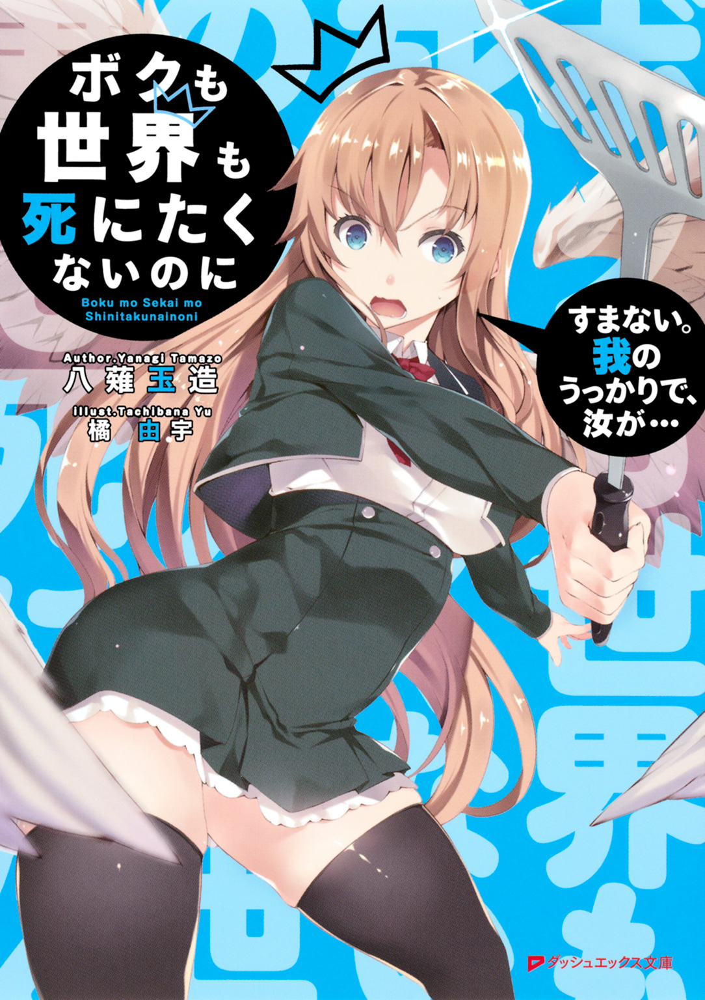
この本は縦書きでレイアウトされています。
また、ご覧になる機種により、表示の差が認められることがあります。
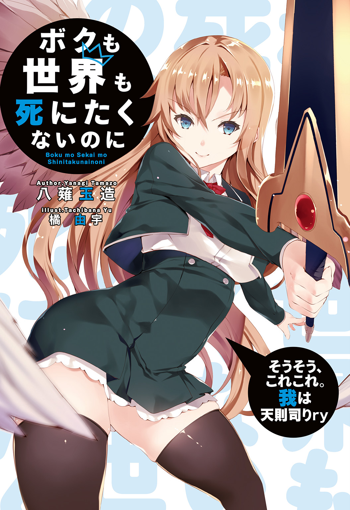
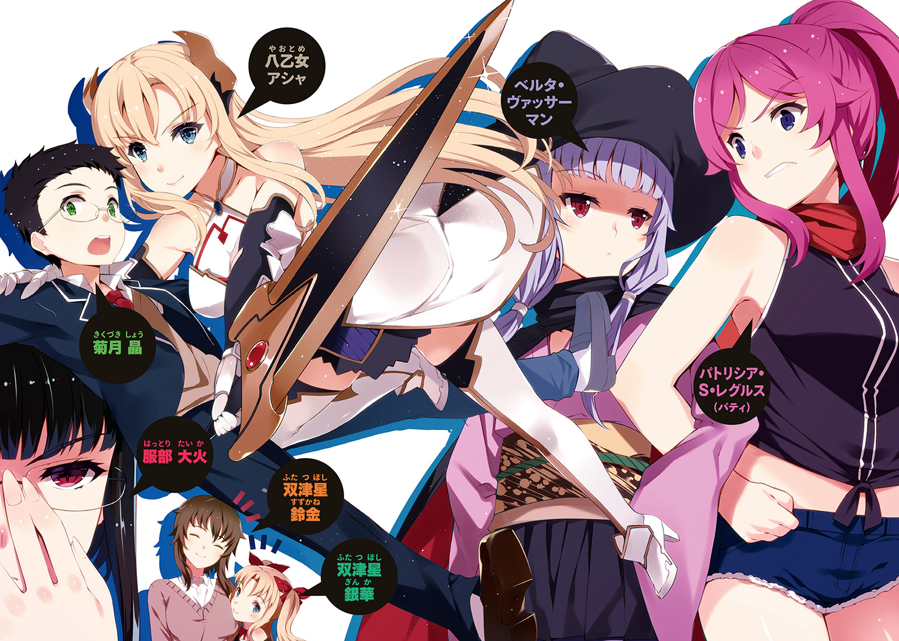
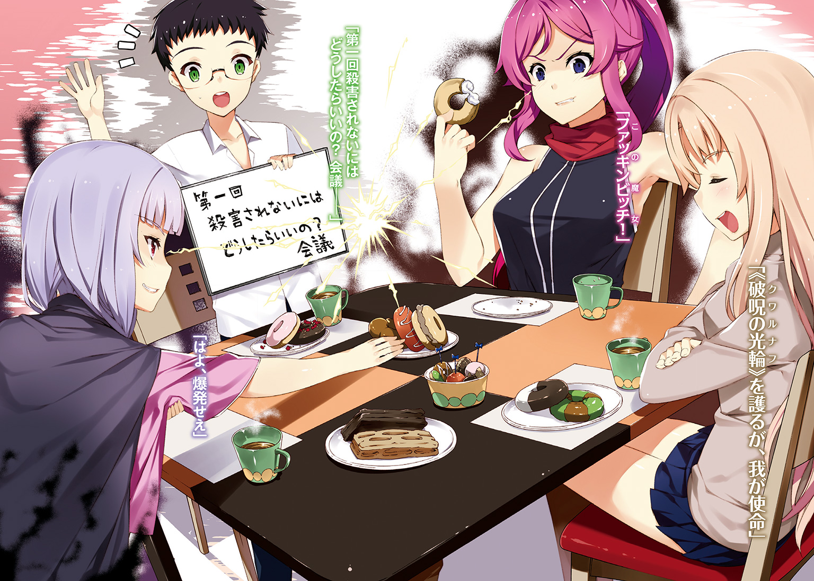
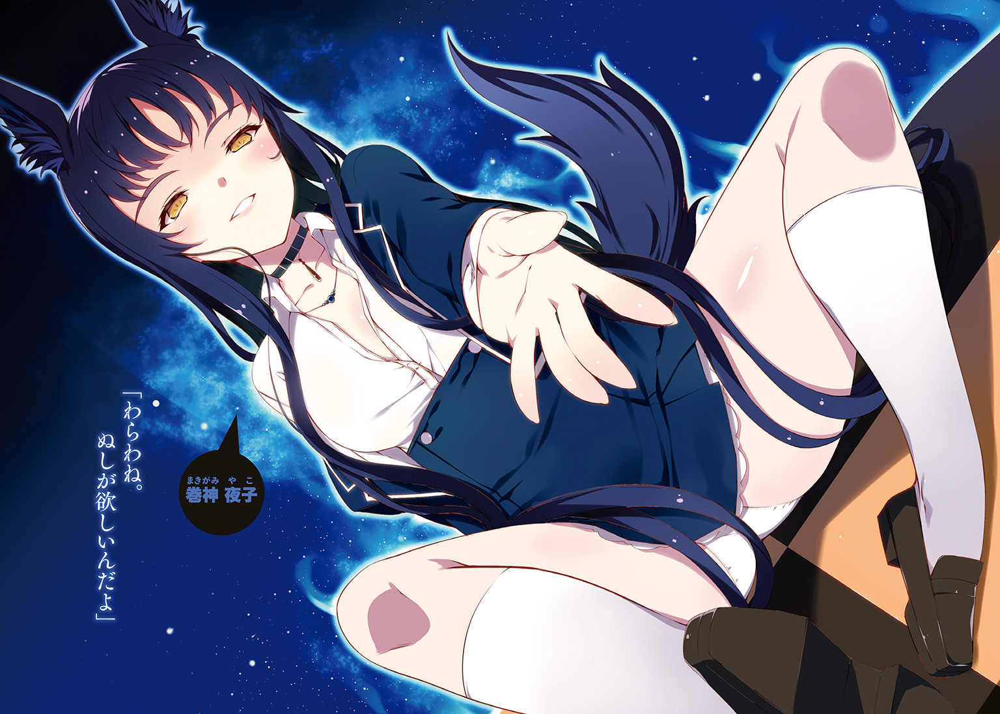
 ダッシュエックス文庫DIGITAL
ダッシュエックス文庫DIGITAL
ボクも世界も死にたくないのに
すまない。我のうっかりで、汝が...
八薙玉造
第一章 魔女とサイボーグと神が来て......
そろそろ蒸し暑くなってきた夏の夜のことでした。
まだ夕日が沈みきっていない時間。アパートに続く、近所の公園を抜ける人通りの少ない道で、ボクの前に魔女とサイボーグと、あと、神がやって来ました。
眼鏡がずり落ちそうでした。
「お前が菊月晶。ショーくんやな。わたしはベルタ・ヴァッサーマン。わたしと世界のためなんや。すまんけど、死んで」
初対面なのに、死んでとか言ってきたのは黒い三角帽子にマント姿。手にしているのは杖。
どこから見ても魔女にしか見えない女の子でした。ハロウィンまでまだ三カ月以上あるのに。
ただ、マントの下には裾の短い和服。足元も足袋に草履です。
それに、手にしている杖は、小柄なその女の子の身長よりも長くて大きい。
金属製の杖のあちこちには絡み合うようにしてパイプが走っている上、何かのメーターがいくつもついていて、埋め込まれたフラスコの中では正体不明の液体が煮えたぎっています。
シュシュで束ねて前に垂らしたおさげの髪は綺麗な銀色。顔立ちは高校生のボクよりも幼く見えるけど、やけに落ち着いていて、同時にどこか怪しい雰囲気を帯びた月の光のようでした。
いやでも、この子、ボクに死んでって言ってるんですけど。
杖がドンと地面を打ちました。
ベルタと名乗った魔女姿の女の子の周りにいきなり噴き上がる炎の柱！ 黒いマントを翻して吹きつける熱風！
「な、何これ!? 本物!? 本物の火!?」
「そうや。ほんますまんけど、わたしはお前を......」
「ヘイ、ビッチ！ ちょーっと待ってくだサイ！」
後ろからの声に思わず振り向けば、そこにはもう一人、女の子がいました。
最初に目に入ったのは夜の闇に映える赤いサイドテール。
首元に巻いた赤いスカーフが髪と一緒になびいていました。
ノースリーブのシャツとデニムのショートパンツからしなやかな手足が伸びて、脚を包む白いニーソックスとスニーカーからはやけに活発な印象を受けます。
ボクを見る赤みがかった目に浮かぶのは、どこか悪戯っぽい雰囲気の笑みでした。かわいらしい笑顔はなんとなくネコ科の動物。
......それはともかく。
「飛んでる......」
その子は夜空に浮かんで、ボクを見下ろしていました。
なんか両肩の後ろあたりに折り畳んだ金属の羽根みたいなものが浮かんでいて、それが淡く光っています。
呆然と見上げるボクに、彼女はビシッとかっこよく指を突きつけました。
「彼を殺すのはパティデス！ 魔女サンは下がっててくだサイ。あ、ショー......デスヨネ？ キミに恨みはありマセン！ でも、殺すしかないんデス！ ソーリー！」
「また殺すって言われた！ ソーリーって言われても困るというか......まずは話を......」
「悪いな！ 問答無用や！」「ほんとソーリーッ！」
空に浮かんだパティさんの周りの空間が波打ちます。
「え？」
目を擦っても変わらないので、多分、錯覚じゃない。空間自体が歪んでいました。
「え、うそ......」
そこから何かが出てきます。
それはパティさんの身長よりもずっと大きな鉄の箱......というか、コンテナみたいなもの。
パティさんはおもむろにそこに腕を突っ込んで籠手のように装着してしまいました。
籠手っていうにはあまりに大き過ぎて、籠手にパティさんがくっついてるような光景です。
さらにその箱がガコン！ と開きました。
中から姿を見せたのは、先端が尖っていて、筒状で、補助翼みたいなのがついてて、ひとつひとつがパティさんよりも大きい。そんなものが五発......。
「ミサイル？ いや、そんな、まさか......」
爆音上げて、発射されました。
「う、うわぁぁぁっ!?」
火を噴き出してミサイル五発が飛んできます。ボク目がけて。
......あ、死ぬ。
思った瞬間、真後ろからすごい熱が吹きつけてきました。
何が起こったのかと振り向く間もなく、飛んでくるミサイルに赤々と燃え盛る炎が絡みついていきます。さらに、炎の帯に締めつけられたミサイルは呆気なくへしゃげて、爆発！
「あぁぁぁぁぁっ!!」
爆風を受けて、ボクは吹っ飛びました。
ゴロゴロと地面を転がって、プルプル震えながら顔を上げると、とりあえず、落ちてしまった眼鏡に手を伸ばしてかけ直しました。
視界に入るのは対峙する二人の女の子。
ベルタさんは空を睨んでいました。視線の先には空中に浮かぶパティさん。
ベルタさんが握りしめて、振りかざしたあの大きな杖からは激しく煙が吹き上がっています。
いくつもくっついたフラスコの中でグツグツと煮える液体。杖とベルタさんの周囲には蛇のように渦巻く炎。
「た、助けてくれたんですか？」
「いや、殺すのはわたしや言うたやろ。今から殺す」
「助けてくれたわけじゃなかった！」
ベルタさんが杖の石突を地面に叩きつければ、ビシビシと地面に罅が入って、それらがいきなり隆起します。
地面が何十もの、車ほどもある巨大過ぎる槍と化してボクに突っ込んできました。
「わぁぁぁぁぁっ！」
「シット！ させマセン！」
叫んだパティさんにベルタさんの周りで渦巻く炎が襲いかかりました。
だけど、炎は一点に凝縮するようにして、呆気なく消え失せます。
パティさんの腕、ミサイルを装備したのと逆の側にはいつの間にか別の籠手が装着されていました。
獣の鉤爪みたいな形の籠手。その周囲の空間が歪んで、見えない剣のような形に浮かび上がっています。
歪みの剣が炎を引き裂いて凝縮、消滅させたのを、確かに見ました。
「重力剣《ランパント》デス！」
まだ少し残っていた炎を、歪みの剣で斬り裂くと、パティさんは一気に降下。
剣を振りかぶって、ボク目がけて。
「殺すのはわたしや！」「パティが殺りマス！」
「あぁぁぁぁ！ やっぱり殺す気だ！」
迫る岩の槍と、炎すら消し飛ばすパティさんの見えない剣。
死んだ！
そう思って、目を閉じました。
「......？」
痛みはありませんでした。
即死だと、こんな感じ？ そんなことを思いながら、恐る恐る目を開けると、夕闇全てを引き裂くほどに鮮烈な光景が広がっていました。
長い金色の髪をなびかせて、ボクの前に立つのは三人目の、また別の女の子。
「無事か。人の子よ」
振り向いたその子の横顔にあふれるのは満ち満ちた自信。煌めく金色の髪と美貌、それらが相まって、女の子の姿はまるで光り輝く太陽でした。
着ているものは汚れひとつない白いワンピース......というよりも、その子が着ると、なんだか古代のドレスの装いに感じられます。
手には一本の大剣が握られていました。軽々と手にしているけど、ベルタさんの持っている杖よりもさらに長くて、刀身も分厚い。何よりも、柄も刃も全てが黄金の光でできていました。
ボクに襲いかかっていた地面の槍は粉々に砕けて、パティさんは空中で止まっていました。
金髪の女の子は剣を持っているのとは逆の空いた手で、パティさんの歪みの剣を受け止めていました。それも白い指一本だけで。
「ブルシット!? 《ランパント》は厚さ十メートルの鉄板すら潰せる重力剣デスヨ......」
「なんやて......？ お前は......いや、まさか。そんなことあるわけないやろ！」
パティさんが目を見開いて、ベルタさんが声を上擦らせます。
「あ、えっ!?」
その時になって気づきました。
周りの光景まで一変しています。
ボクたちがさっきまでいたのは夕暮れの公園。でも、今、目の前には太陽の光が降りそそいでいます。本当に夕闇が引き裂かれていました。
どこまでも広がるのは剝き出しの岩肌で、足元に流れるのは霧のような、雲のようなもの。
さらにボクたちを見下ろすようにそびえ立つのは、ファンタジー大作映画にでも出てきそうな荘厳な建物。
「空間の隔離と改竄......いや、お前がわたしの思うとおりやったら、これは天則の制御か」
「いかにも。我もまた汝らの流儀で名乗ろう」
朗々と告げると指先で受け止めていたパティさんを払いのけ、
「ひゃぁぁぁっ!?」
吹き飛ばしました。
辛うじて受身を取って立ち上がったパティさんと、ベルタさんに、金髪の女の子が向き直って名乗ります。
「我はアシャ」
同時に白いワンピースはまばゆい光に形を変えました。
次の瞬間、彼女がまとっていたのは黄金の鎧。握りしめる剣と同じ黄金の輝きで作り上げられた甲冑です。
さらにその背中から伸びるのは煌めく翼。それも三対、六枚が大きく広がり、神々しく輝く羽根が陽光の下に舞い散りました。
「アシャ・ワヒシュタ。汝らが言うところの神。天則を司りし者だ」
翼を広げて、女の子――アシャさんは堂々と立ちます。
「ホーリーシット......！ このエネルギー......！ こんなもの見たこともありマセン！」
「アシャ・ワヒシュタ。ゾロアスター教の七柱神の一柱。いや......それはわたしらに合わせて、そう名乗ったまでやな」
ベルタさんのうめき。
「それよりも空間すら操る力......。まぎれもない最上位の神霊。創造者の末の類。こんなもん、人の勝てる相手やない......！ 抗うことすら愚行や！」
「ジーザスッ!! ガッデム!! サノバビッチ!!」
驚愕する二人に対して、アシャさんは足を踏み出しました。
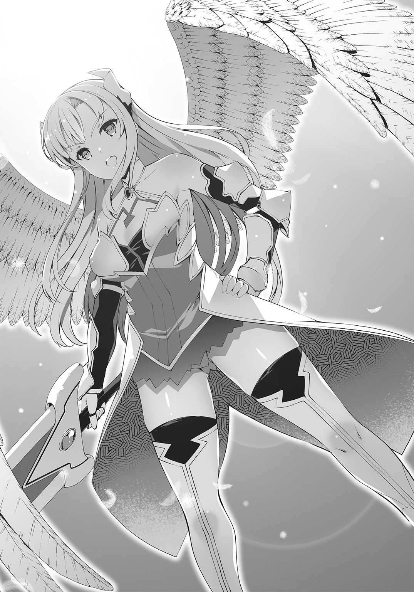
「天則はこの人の子を護ることを定めた。かの者こそ我が主」
優しさすら覚える声で、アシャさんは告げます。
「人の子よ。案ずるな。我は授けよう。ただ安らかな終わりを」
「く、くそ......！ くそっ!! やるで、そこの赤毛!!」
「ＯＫ、ビッチ......！ パティもタダじゃやられマセン!! ファッキンシット!!」
ベルタさんが構えた杖が激しく蒸気を噴き上げ、パティさんの周りの空間がこれまでで一番大きく歪んでいきます。
対して、アシャさんはそれらを意にも介さず、優雅さすら覚える動きで翼を広げて、光の剣を振り上げました。
そして、
第二章 天則司りし女神の天則
「あ......痛っ！ いたたたたっ！ くっ......う、うぅ......」
神様は脚を押さえてうずくまっていました。
「あ、あの......どうしたんですか？」
全力で戦おうとしていたベルタさんとパティさんも目を瞬かせています。
「これは......わかるぞ。肉離れだ」
「え？」
「......間違いない。準備運動もせずに急に動いたからだ。つまりは筋繊維の部分断裂だ」
「いや、詳細を聞いたわけじゃないんです。肉離れって......。神って言ってましたよね？」
思わずベルタさんのほうに確認してしまいました。
「......高次の神霊や。わたしは噓ついてへん。ほんまや」
「えっと......つまり、神なんですよね？」
「何度も確かめるものではない。主よ。我は神。七柱神が一柱。世の理、すなわち天則を司るアシャ・ワヒシュタ。それが我だ。あるいは別の認識で言うならば、それは天使であり、悪魔でもあるのかもしれな......あ、痛っ！ う、うぅぅ」
神、辛そう。
「神って、肉離れするんですね......」
「神とて、準備運動をしないまま、急に激しい運動を行えば肉離れを起こす。それは人の形をとったものの、法則。天則だ。天則を司りし我とて、我自身の天則から逃れることはできない」
「それじゃ、えっと......しょうがないですね。でも、あの、肉離れはわかったんですけど......ほら、翼とかありますよね」
「飛べというのか？ ならば問おう。主よ。例えば汝が腕を骨折したとする。しかし、脚は無事だ。その状態で汝は全力疾走ができるというのか？」
「......む、無理です」
「それもまた天則。つまりは我が主よ。教訓だ。運動の前には必ず入念な準備運動をする。過ちに学び、改善する。それは完成された存在ではない人の子ゆえに許された可能性だ」
「わかりま......いや、多分、そういう話じゃないと思うんですよ！ 戦闘中でしたよね!?」
「あ、今や！」「そ、そうデシタ！ ジャスナウッ!!」
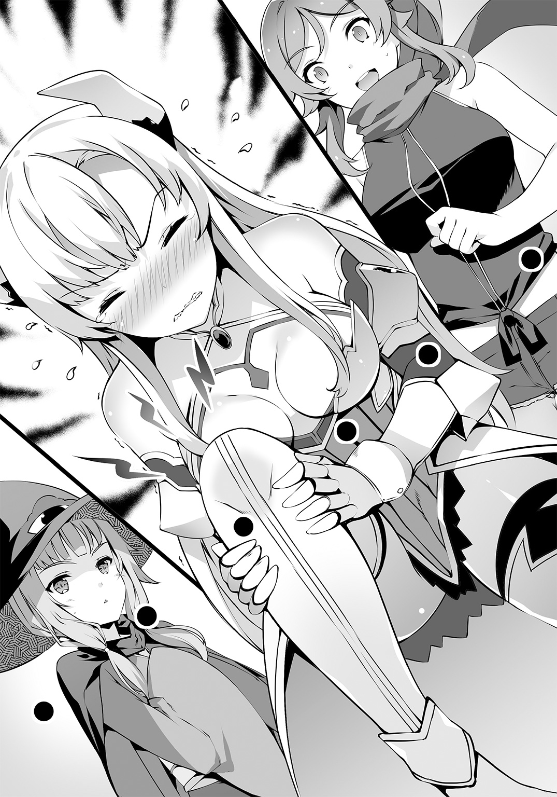
「あぁっ！ 気づいちゃった！ しまった！」
「《ヘルメス》!! 第一原質循環、四大元素精製！ 力の源を断つんや！」
「動きを止めマス！」
「な、汝ら!? 待て！ 我は今、まだ脚が......！ 痛......ちょっと待......うわぁぁぁっ！」
ベルタさんの杖がぬめぬめしてビクンビクン動く触手を大量に吐き出しました。
さらに、パティさんの周囲で歪んだ空間からは砲門が現れました。肩に装着された大き過ぎる砲門から放たれたのは大量の......粘液!?
「アシャさんーっ！」
「ぐ、ぐぁぁぁぁぁっ!!」
粘液まみれで、触手の群れに絡め取られて転がったアシャさんの手から剣が転げ落ちました。
それを握ろうと手を伸ばすけど、腕を這いあがった触手は指先に絡みついて、すんでのところで阻止してしまいます。
「くっ......」
アシャさんの手は届かなくて、べったりとした粘液で汚された身体の上を触手がずるずると這い回って、嫌な水音を立てるばかり。
「動けない......こんな......！ 我が、バカな」
うめいたアシャさんの頰に触手の先端が粘液をこすりつけています。
「創造主の力を継ぎ、天則を司るこの我が......く、あぁっ！ う、うわ！ 気持ち悪い！ 鎧の下に......服の中に......ひっ！」
声を上げたアシャさんはちょっと涙ぐんでいました。
触手は鎧の下に潜り込んで、さらには剝き出しになった太ももにも絡みついて......。
「こ、こんなもの！ 触手など、我が力をもってすれば......!? 触手、それは人に用いる場合には、凌辱者!? 汝、まさか、辱めを!? 神である我に......！ はぅっ！」
「ちゃうで!? お前、ちょっと偏ってるで!?」「この魔女、ＨＥＮＴＡＩデシタか!?」
「人の子如きに......我が、このような恥辱を......。このような快楽に神である我が屈するはずが......ひ、あんっ！ ......こ、殺せ！」
「だから、ちゃう言うてるやろ!?」「ジーザス......」
ベルタさんとパティさんは起き上がることもできずにもがいて、切なげに吐息を漏らすアシャさんを呆然と眺めていましたが、正直、ボクもです。
あ、ダメです。ガン見とかダメです！
「はっ！ ちゃう!? ちゃうで!? 目的はそこのエロい神やない」「そうデシタ！ ショーを殺しにきたんデス！」
「今、誤魔化しませんでしたか!? というか、なんかいたたまれないことになってるこの状態で、まだやるんですか!?」
「ま、まあ......しゃあないやろ」
「パティも正直、どうしたらいいかと困っていマスが、初志貫徹デス」
「待て！ 殺すなら、我だ！ まずは我を殺せ！ 我を殺してくれ！ 頼む！ 人の子如きに遅れをとり、このような......！ 我を殺せ！ ......っ、あぁっ！ そんなところ、いけない！」
「ノリノリやないか......？ まあ......そこの神とかどうでもいい！ ショーくんを殺す！」
「ほんと色々ソーリー。でも、殺すしかないんデス！」
「違うのだ！ 我はノリノリなどではない！ だから、我から殺せ！ 待て！ 我から......！ お願いだ！ 殺し、ひぐぅっ！」
ベルタさんがあの杖を構えて、パティさんの周りでは空間が歪みを生み、アシャさんは......涙じゃないなら汗ってことで。
そんなことよりも、ボクは思わず尻餅をついてしまっていました。
なんかすごいこの人たちから逃げられるわけなんてないし、そもそもボクの周りはなんだかよくわからない空間なので、やっぱり逃げられるわけがない。
杖に内蔵されたフラスコの中身が沸騰して、蒸気が激しく噴き出す。
歪んだ空間から出てきた機関砲を、パティさんはミサイルと交換して装着している。
「......殺されるしか、ないんですか......」
「......そうや」「......イエスデスヨ」
二人の目は本気でした。
死にたくない。
まだ高校二年生だし、彼女ができたこともないし、今期の深夜アニメはおもしろいし、読んでない漫画もラノベも色々あるし、ワンピースは大盛り上がりしてるところだし......！ 死にたくない！ 世の中、嫌なことが多くても、けっこういいこともあるんだよ？ 派だから、やっぱり死にたくない！
でも、こんな状況どうにもならない。一生懸命考えても、二人が本気ならどうしようもない！
「あぁっ！ ダメだ！ そこは......本当にいけない！ 入るような場所では......！」
アシャさんもそろそろ本当にどうしようもない！
「ん？ あれ？」
その時、不意に閃いた......というか、すごく気になることが思い浮かんでしまいました。
「え、えっと......二人で一緒にボクを殺すんですか？」
「ん？」「ワッツ？」
「いえ、その......最初来た時、よく考えたら、どちらがボクを殺すかでもめてたなーって。そう思って......」
「「あ」」
二人の声が重なり、次の瞬間、互いに飛び退いていました。
「まずはお前からしばく!! 《ヘルメス》！ 四大元素精製!!」
「最初に死ぬのはそっちデスよ！ 広域殲滅型重力砲を使いマス!!」
ベルタさんの杖がまばゆい雷光を放ち、パティさんの周りの空間からはなんだかもう大き過ぎる、戦車と戦闘機を足したみたいな兵器が姿を現してきます。
「死ねや!! アホ!!」「ファック!! キッスマイアスッ!!!!」
◆ ◆ ◆
死闘......という言葉は多分、こういう時に使うんだと思いました。
目の前で繰り広げられた戦いは、それはもう映画ならラストバトルさながら。
ずり落ちていた眼鏡をボクはようやく押し上げました。
あのよくわからない空間はいつの間にか消えて、元の夕暮れの公園に戻っていて、そこにベルタさんとパティさんが倒れていました。
天地を繫ぐほどの雷光を走らせて、竜巻と共に津波を引き起こしたベルタさんと、あの兵器と合体して空を飛び、重火器とか重力兵器？ の数々で大地を抉る破壊を行ったパティさん。
最後の一撃、壮絶な相討ちで吹き飛んだ二人は離れたところに仰向けに倒れたままで動きません。胸は上下しているので、死んだりはしていなくてホッとするのですけど、ベルタさんの魔女っぽい服も、パティさんの服もボロボロでした。
すぐ近くで鼻をすする音がして、振り向けば、そこにいるのはアシャさん。
二人のラストバトルに見入っていて、神様のこと、すっかり忘れていました。
アシャさんに絡みついていた触手はベルタさんが気絶したからかすっかり消えていましたけど、綺麗なはずの金髪も服も鎧も粘液でベタベタに汚れていました。乱れた服の下に見える白い肌は濁った粘液で穢されてなお綺麗に見えます。
鼻の頭はちょっと赤くて、目は潤んでいて......
「え、えっと......。この状況、どうすれば......」
倒れてしまった魔女？ とサイボーグ？ と、半泣きでドロドロの女神様。
「殺せ。殺してくれ」
女神様は今にも大泣きしそうでした。
第三章 （しかたがないので）持ち帰られし災厄
ベルタさんとパティさんが目を覚ましたのは、ほとんど同時でした。
ゆっくりと起き上がると、二人は周りを見回して、自分たちが頭を載せていたクッションを興味深そうに見て、それからお互いに顔を見合わせました。
そのあとで、ボクのほうを見ます。
「ここは......お前の家か？」
「狭くてゴメンなさい。布団も一組しかないから、床に寝かせることしかできなくて......」
「キミの住んでるアパートデスネ。中はこうなっていたんデスか」
パティさんの言うとおり二人はボクのアパート......１Ｋの部屋にいました。
一応、部屋は小綺麗にしてるって自信はあるし、アニメのグッズとかはちょっと恥ずかしいから隠しておきました。だから、じろじろ見られても......パティさん、本棚をガン見するのやめて。恥ずかしい。コミックスもラノベもそのままだから。やっぱり恥ずかしい......。
「えっと......」と、ベルタさんが額に手を当てて、小さくうなります。
「まあ、なんや。わたしらが気絶してたのはなんとなくわかった。礼は言うとくわ」
「パティもお礼言いマス。サンクス......ありがとうございマス。......でも、どうやってパティたちをここまで運んだんデスか？ ......!? パティに、その......！」
少しだけ後ろに下がって、パティさんは自分を抱くようにして警戒します。
「す、すいません。勝手にすいません。あのまま公園に寝かしておくわけにはいかなくて......」
「あ、パティのほうこそ、ソーリー。善意でやってくれたことデスのに」
お互いペコペコ頭を下げてしまいました。
「運んだ方法なんですけど、このアパートまでは、タクシーを呼び止めて運んでもらいました。あの公園のすぐ近くに大通りがありますから」
「確かに、バス通りとかあったな」
「それで、ちょうど今日って、日曜じゃないですか。だから、ちょっと変わった格好してるけど、コスプレイベントの帰りに慣れないお酒を飲んで、暴れて、公園で寝ちゃった社会人の先輩って設定で乗せてもらったんです」
「ディティール細かいな！ コスプレで酔っぱらって暴れる社会人って、めちゃくちゃ恥ずかしい人みたいに見られてるやろ！ タクシーのおっちゃんに！」
「パティは普通の服なのに、こんな時代錯誤の魔女と同じように見られたら困りマス！ なんでそんな変な恰好してるんデスか？」
「お前、どさくさにまぎれてわたしのことディスってんなや」
「フフ。汝ら、タクシーの運転手にイベント参加のマナーがなってないと言われていたぞ」
「うわぁっ!? 神おった!?」「ワッツ!?」
キッチンを背にして、アシャさんは不敵に笑っていました。
「気絶した汝らを運ぶなど、天則司りし我には造作もないこと」
ドロドロだったアシャさんだけど、あのあとわりとすぐに立ち直って、どうやったのか、手の一振りでドロドロを瞬時に取り払って、もとの神々しい感じに戻りました。さすがは神様。
「ボク一人じゃ、二人を運ぶことはできなかったです。本当に助かりました」
「それは迷惑かけたな。神。すまん」「ソーリー。ゴッド」
「それはそれとして、イベントとかちゃうわ！ コスプレちゃう言うてるやろ！」
枕元にまとめておいたマントと帽子を抱きかかえて、和服の魔女さんは眉を上げます。
「ヘルノー！ パティはイベント出るなら、ちゃんとしマス！ 着替えは会場の更衣室で！ 会場を出る時もちゃんと元の服装に着替えて。マナーは守りマス！」
「......ん、あれ？ コスプレするんですか？」
「ワッツ!? その、アレです。友達がデスネ。えっと......」
うつむいてしまいました。
それから、首をブンブン振って顔を上げましたけど、ほっぺたは赤い。
「バット！ お礼の時間は終わりマシタ！」
「そうやな。感謝は感謝としてや。いくらなんでも、お人よしが過ぎるんちゃうか？」
ベルタさんの目は冷たく鋭い。
「少なくとも、わたしの《ヘルメス》ぐらいは捨ててくるべきやったで」
ベルタさんがマントと一緒に置いてあったあの大きな杖を手にして、
「パティにはそんなもの必要ありマセンけどネ」
パティさんの周りではまた空間が歪んでいきます。
「た、確かに......」
ボクは後ろに下がったけど、すぐに背中が壁に当たってしまいました。所詮、１Ｋ。
「む......」「ファッキンビッチ......」
だけど、二人はお互いを睨んで、牽制し合って、動けませんでした。
それだけじゃなくて、背後には腕を組んで立つアシャさんがいます。
「神か......。そやけど、お前、さっきはブザマさらしとったやろ」
「アレは......違うのだ」
アシャさんのほっぺたはちょっと赤い。
ボクもアシャさんのあられもない姿を思い出してしまって、少し気まずいです。
「言っておくが我は同じ失敗を犯しはしない。汝らが寝ている間に、我は既に入念な柔軟運動を済ませている」
「ものすごく本格的でしたよね」
なんせ十五分に及ぶ柔軟運動。
「さすがに......これはめんどくさいな」「イエス。正直困りマシタ」
そのまま睨み合った状態で数十秒が過ぎました。
緊張のせいか、パティさんの頰を汗が伝っていきます。
もちろん、ボクは既に嫌な汗で背中がビショビショ。
「あの......ちょっといいですか」
こんな緊張した状態で動くのは怖くてしかたなかったんだけど、おずおずと手を上げました。
「なんや？」
「えっと......ひとつ、どうしても訊きたいことがあって。何故、ボクを殺そうとしているんですか？ さすがにその......理由もわからず狙われるのは嫌というか......あ、すいません！ 本当にすいません！ ボクみたいな普通の人間が口を挟んですいません！」
「いや......詫びる必要なんてない。確かにそのとおりや」
「何も知らないままのショーを殺すのは、フェアじゃないデスヨネ」
二人の言葉にアシャさんも頷いてくれました。
「わかった。話すわ。どうやって殺すか考えるのはそれからでもいいはずや」
パティさんと視線を交わして、ベルタさんは口を開きます。
「わたしたちは強力な呪詛を受けてる。陰湿で凄惨で致命的なやつをな。それを解くにはお前を殺すしかないねん」
そう言いました。
第四章 世界を焼き尽くすほどのしょうもない呪い
「呪詛？ 呪いってことですか？」
「そうや。......ゴメン。真面目な話する前になんやけど、トイレ借りていい？」
ベルタさんは心なしモジモジして恥ずかしそうでした。
「今、言いマスか？ それ」
「ゴメンなさい。気づかなくて。玄関の右手のドアです」
「流れ切ってゴメンな。それじゃちょっ......ーっ!!」
立ち上がってトイレに行こうとして、傍にあったタンスに足の小指をしこたまぶつけ、
「あ、あぉぉぉぉ......」
崩れ落ちて、足袋をはいた足を押さえて悶絶。
「ベルタさん!? だ、大丈夫ですか!?」
「ガッデム!? なんか、今のはちょっとしゃれにならない角度だったデスヨ!? あの......アーユーＯＫデスか？ 漏れちゃってないデスか？」
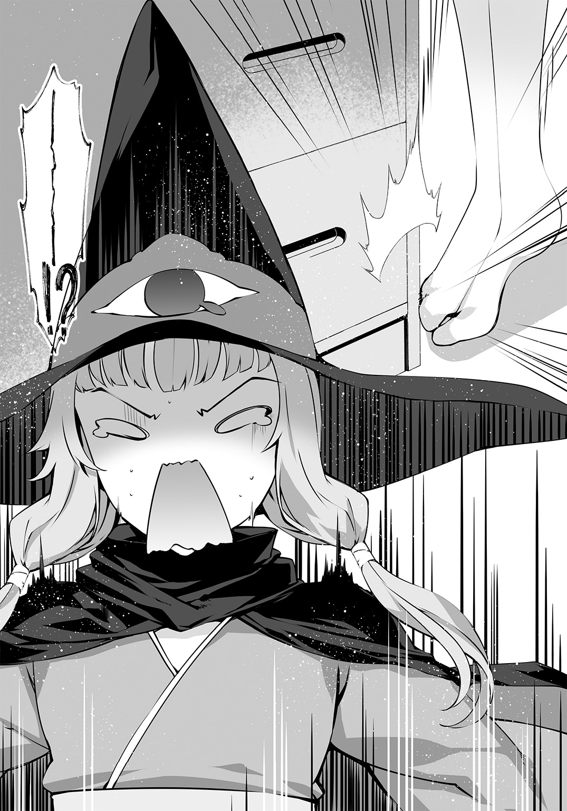
「アホ......。漏らしたりなんて、せえへん......」
荒い息を吐いて真っ青な顔で、明らかに脂汗っぽいものを額に浮かべて、若干涙目で、ベルタさんはなんとかその場に座り込みます。
「危うかったけどな......。そやけど、手間が省けたな」
声はこれ以上ないぐらいかすれてました。
「ホーリーシット！ 手間ってやっぱり......。大丈夫デス。誰にも言いマセンから」
「気遣うなや、アホ！ そういう意味ちゃうわ！」
「つまりはや」と、ベルタさんは続けました。
「これがわたしの受けた呪詛やねん」
「え？ これって......どれなんです？」
「だからや！ タンスというか、収納という収納......食器棚やろうが、本棚やろうが、カラーボックスにかって、その角に足の小指をぶつける。それこそがわたしの受けた呪い......。《タンスの角に小指をぶつける》呪いや」
「しょうもなっ!? あ、い、いや、すいません」
「タンスの......タンスの角って！ なんデスか、それは！ プフッ！」
パティさんは情け容赦なく、お腹を抱えて笑っています。
「もうちょっとマシな呪いはないんデスか。そんなのただの慌て者なだけじゃ......」
笑い転げながらそこまで言って、コテッと転がりました。
「パティさん!?」
グーッと、なんだかかわいい音。
「......お腹すいてるんですか？」
「そのとおりデス......。お腹がすいてすいてハングリー......」
ポシェットから取り出したチョコバー......というか、スニッカーズを口に運びます。
「お腹がすいたらスニッカーズ。ナッツぎっしり確かな満足デス......」
すごく幸せそうに、一心不乱に、食べ尽くします。
それからフーと息をついて身体を起こしました。
「イエス。見てのとおり、これがパティの受けた《やけにお腹がすく》呪いです」
「それ、呪いなんですか!? しょ、しょうもない......」
「お前、人のこと全然言われへんやろ。ただの食いしん坊ちゃうんか」
「パティだってそう思いマスヨ！ バット！」
もう一本、取り出したスニッカーズをやっぱり幸せそうにムシャムシャ。
「お腹がすいたらスニッカーズ......」
唇にちょっとチョコレートがついてました。
「すぐさまハングリーなんだからしょうがないです」
「え、えっと......」
「我はそれらの呪詛に名を与えよう。しょうもない呪いと」
腕を組んだままで二人を見下ろして、アシャさんが言います。
「なんかカッコイイデスネ」
「なるほどな。お前と対極を為す悪神の名か。らしい命名や。悪くはない」
「しょうもないけど、壮大な名前ですね」
「......まあ、否定はせん」「パティもそう思ってはいマス」
「えっと......もう一度訊いてもいいですか」
「ええよ」「ＯＫデス」
ちょっと迷ったけど、意を決して言葉を続けました。
「今、ボクなりにお二人のことが理解できたらと一生懸命考えてみたんです。ベルタさんとパティさんの呪いというのが、本当だとして、確かにそれが呪いなら、地味に辛いとは思うんです。タンスの角とか、お腹がすくとか。でも......それだけの理由でボクを殺そうとしたんですか？ それはさすがにちょっと......」
ベルタさんもパティさんも思うところがあるのか、目を逸らしました。
「まあ、そうやな。お前がそう言うのは当然やと思う」
ベルタさんが意を決したように正座して、緑の瞳でじっとボクを見つめます。
「確かに、わたしらの受けた呪詛はしょうもない呪いという言葉に相応しいぐらい、しょうもない。否定できへん事実や。そやけど......同時に致命的な事態を引き起こす可能性がある」
「足の小指ぶつけてですか？」
「そうや。足の小指ぶつけてや。それを説明するには、ちゃんとした自己紹介が必要やな」
ベルタさんはあの大きな杖を立てました。
「わたしはベルタ・ヴァッサーマン。いわゆる魔女や。特に錬金術に精通しとる」
「イエス！ 錬金術、知ってマスヨ。等価交換で一は全、全は一で、鋼の......キミ、まさか!?」
「まさか！ ちゃうわ。マンガの話すんな。アメリカオタクはアメコミに帰れ！」
「サノバビッチ!? もうちょっと言い方がデスネ！ あと、マンガのって言ったってことは、ベルタも知ってマスヨネ！」
ベルタさんの舌打ち。
「ファッキンシット!! 感じ悪いデスヨ!?」
「全ての物質のもととなる第一原質を変質させることで、四大元素を作り出し、事象を操る。それこそが神の御業に挑む錬金術師の秘奥義。大地を流れる霊脈――つまりは、第一原質を支配することができれば、自然をもこの手に収めることができる。さらには人智を超える力を持つ霊薬を作り出すこともできるわけや」
「確かに、ボクの目がおかしくなければ、火とか雷とか出してましたよね」
「そやけど......それほど大きな力を操るということは、些細な失敗が巨大な力の暴走を招くということでもある。大いなる力を持つからこそ、小さなミスすら許されへん。それがわたしら魔女や。......ところがや。力を操ろうとするその時に、足の小指ぶつけたらどうなると思う？」
「魔法とか錬金術とかよくわからないんですけど......大変なことになりそうとは思います」
「そのとおりや。例えば、古代ローマ。ヴェスヴィオ火山の噴火によって、一昼夜で壊滅したポンペイ。あれは当時の魔女たちの抗争の果てに起きた大失態や」
「歴史上の大事件が!?」
「現代の魔法の体系が形成される前の話やけどな。そやけど、似た話やったら、この国でも、江戸時代の安政の大地震。あれが海を渡った魔女の起こした事故のせいや」
「思った以上に大変なことが起きてたんですね......」
「アーハー？ たかだか街ひとつのことで何を言っているんデスか」
「街っていうか、地殻変動レベルの話やで」
「魔女もまあ、それなりにすごいのかもしれマセンけど。パティはいわゆるサイボーグデス」
「やっぱり、そういう感じだったんですね。なんだかメカっぽいの出してましたし」
「ウェルウェル。端的に言えば、異星の文明からもたらされたテクノロジー。それを埋め込まれた試作品。奴らはコンパウンドと呼んでいマシタが......つまるところ、機械的に強化された、あるいは一部を機械と置き換えた人間――サイボーグという概念で合ってマス」
「それがどうしたんや。パト」
「シット!! 誰がパトデスか！ とにかくデスネ！ パティは現在の地球の技術では解析もできないほど、絶大極まりない力を持ちマス。バット、この身体は試作品ゆえに不安定デス」
胸元に手を当てる。薄着な上、けっこうスタイルがいいんで、膨らみを直視してしまって、ちょっと照れる。申し訳ない気分になる。
「つまりはデスネ。現状の身体の構成を保っていなければ......具体的に言うと、極端に体脂肪が増えたり減ったりとかすると、身体に埋め込まれた暗黒物質変換炉が暴走して、マイクロブラックホールを形成。大陸ひとつを吹き飛ばすか、下手をすればこの星を呑み込むほどの被害を出してしまうんデス！ 星がＫＡＢＯＯＭ！ デスヨ！」
「もはや地球規模にたいへんなことに!?」
「お前、なんでちょっと嬉しそうに言うたねん」
「いや、でも......ベルタさんも、パティさんも、それをボクに信じろって......」
確かに......ボクが今まで見てきた世界からは想像もできない力は見てしまったし、二人が人智を超える力を持ってるのは間違いないのだけど......。
「汝らの言うことに噓はないだろう」
これまで黙っていたアシャさんが口を開きました。
「何故なら、我は汝らの受けた呪いが何であるか、知っているからだ」
「さすがは上位の神霊やな」「じゃあ、この呪いはいったいなんなんデスか」
「それについて語るには、人類が生まれるよりもずっと以前に遡って話をする必要がある」
「そこまで遡らないとダメなんですか!?」
「然り。何故なら、呪詛の原因、それはこの宇宙を創り上げた善と悪の神の戦いにあるからだ」
「えぇ......壮大......デス、ネ」
「我がこれから話すことは、あくまで人間という矮小な存在が認識できる概念としての話だ。ある意味では喩え話と考えてもいい。つまりは今言ったとおりに創世の神というわかりやすい知性体が存在するわけではない。人の形をとるもの......物質世界の者には理解すらできない高次元――霊的世界の存在だ」
「まあ、そうやな」
「え、えっと......」「ワッツ？ どういうことなんデスか？」
「つまりは高次元ゆえ、汝ら人間にとってはふわふわした感じということだ」
「確かにそうやな。でももうちょっと言い方ないんか？ 神」
「二人がそういうなら......えっと、そうなんですね？」「なるほどイエス......」
実はどういうことかわかってないけど、ふわふわしてるならしかたないです。
「この宇宙を創造した神は善と悪、正と負、陰と陽、ふたつに分かれている。彼らは互いに争い、激しい戦いの末に、互いに滅びるに等しいダメージを負った。つまりは悪神はほぼ全ての力そのものを失い、善神は力を残したままながら、砕けてこの宇宙の端々へと散った。しかし、悪神は力を失くしながらも足搔いた。後の世界で、力を取り戻すための布石として、ほんのわずかに残る力を悪意としてこの宇宙へとバラ撒いたのだ」
「もしかして、それがしょうもない呪い......とかですか？」
「そのとおりだ。悪神は世界に影響を与えることができるほど強い力を持つ者に対して、呪詛を振り撒いた。まさしく【悪神の呪詛】だ。力を失っているからこそしょうもない。だが、それがもっとも致命的な効果を発揮することを、悪神は理解している」
「まさか、タンスに足の小指ぶつけるとか、すごくお腹すくとかの話が、宇宙創世すら巻き込む壮大な話になるなんて......」
「そして、力を保ったまま砕けた善神の破片。それが我が主よ。キミに宿っているのだ」
「え？」と目を瞬かせました。
「ボクに!?」
「そう......悪神は汝の中の力を狙う。そのための手段として、強き者にしょうもないながらも、致命的な影響を与える呪詛を与えた。それによって、彼らがキミを殺し、解放された善神の力を自らのものにしようというのが悪神の企みなのだ」
「え、いや......え!? え!? あの......」
「ゆえに我は汝の持つその力を【破呪の光輪】と名付けよう」
「【破呪の光輪】......いや、名前は別にいいんですけど!?」
「あるいは【破呪の光輪】を巡って起きる呪われし者たちの戦い、そして起きる悲劇。それこそが悪神の本当の望みなのかもしれない」
「え、えっと......」
「わたしもそれなりにそっちの世界に足突っ込んでるからわかる。だいたい合ってる」
「そう......ですか」
壮大過ぎて、よくわからない......。
「つまりは主よ。一言で言うならば、汝を殺すと、殺した者だけ呪いが解けて超ラッキー」
「これ以上ないほどよくわかりました」と言うしかありません。
あ、でも、
「どうして、ボクなんですか？ 自分でいうのもなんですけど、ボクは全然特別な設定とかない、普通の高校生ですよ」
若干、オタクだとか、人と違うのはそのぐらいで......。でも、オタクとしても二流だし、他に特徴があるなら、眼鏡ぐらいだし。
「そんなボクがどうしてその......宇宙を創った神様の力とか......おかしいですよ」
「疑問はもっともだ。だが、それは我にもわからない。あるいは誰でもよいのかもしれない」
アシャさんだけじゃなくて、ベルタさんも首を横に振っていました。
「じゃ、じゃあ......。どうして、ベルタさんやパティさん、それにアシャさんがボクのことを知ったんですか？」
「その理由は明言できるわ」
「この感じだと、どうせ、このビッチも、パティも同じだと思いマス」
「しょうもない呪いに悩む中でわたしは夢を見た。何度も何度も同じ夢を見たんや。あるいはそれは夢ですらなかったのかもしれん」
「ミートゥ。昼も夜も同じ夢を......キミの姿を見マシタ」
「わたしにはそれが高次元の神霊によってもたらされたもの......神託やとわかった」
「そう。それこそが、悪神がこの争いを引き起こすために下した託宣だ」
アシャさんは言い切る。
「それ以上のことは我にもわからない。だが、断言できることはある。我はそこな呪われし者たちとは違うということだ」
ベルタさんたちの間を歩いて、アシャさんはボクの後ろに立ちます。
「菊月晶。我が主よ。我は汝を護るために来た。人という形をとった善神の力の残滓。主を護る者。それが我、アシャ・ワヒシュタなのだ」
アシャさんは力強くボクを見据えます。それだけでなんだか安心できる。そんな視線。
二人の呪われし者に緊張が走るのがわかりました。
「だから、ボクを護ってくれたんですね」
「そうだ」まだ実感はないけど、なるほど......とは思う。
「あの、もうひとついいですか？」
「毎回、挙手してくれて丁寧やな。言ってみ」
「ボクが狙われるのはわかったんですけど......。例えば、ボクが殺されて、善神の力というのが、悪神に渡ってしまったら......世界は大変なことになるんじゃないですか？」
「いや、即座に何かが起こるわけではない」
アシャさんはまた言い切りました。
「【破呪の光輪】は汝に宿っているものだけではない。この宇宙全体に幾千、あるいは幾億......無数に散っている。汝が死んで、力を奪われたとしても、ただちに影響が出るものではないし、他の所有者もまた抗っていることだろう。何かが起きるとしても、数千年後のことだ」
「壮大なのに、やっぱりすっごく曖昧ですね......」
ちょっとホッとしたような......。ベルタさんたちがボクを殺すことを躊躇する理由が減ってしまったような......複雑な気分でした。
「えっと......」
とりあえず、宇宙規模の問題はあまりないってわかった以上、目の前のベルタさんやパティさんの力になりたい......という気はしました。
でも、二人を助けるってことは、ボクが死ぬことで......。
やっぱり死にたくなんてない。だから、別の方法はないだろうかと、必死に考えてしまう。
「あっ」
ボクは思わず手を打ちました。
第五章 ボクは人間の可能性を信じます
「ボクは人間の可能性を信じます」
「突然、なんでちょっとイイ話っぽいねん」
「イイ考えがあります」
自分で言うのもなんだけど、あまりにイイ考えだったので親指を立ててしまいました。
それから、前に両親が色々な雑貨を送ってくれた時に、ダンボール箱に入っていた緩衝材――あのプチプチするやつを取り出すと、ガムテープを駆使して、タンスの角、ちょうど小指に直撃するあたりに貼りつけました。
「どうです！ これでトイレに行けるはずです！」
「お、お前......よもや天才か」
ベルタさんの声はちょっと上擦って、震えていました。
「しょうもないデス！ しょうもないデスが、確かにこれでいいじゃないデスか！ なんでこんなことに気づかなかったんデスか？ 魔女って、アホなんデスか？」
「どさくさにまぎれて、わたしのこと、ディスってんなや。パト」
「なるほど。抗うことのできない呪詛。しかし、抗うことができぬならば、抗えぬままに抗う......。これが人の子の答えか」
「しかし、盲点やった......。神霊による呪詛やから、できることなんてないって思いこんでたわ......。なまじ知識があるからこそ、目が見えてなかったか」
フ......と、ベルタさんは口元を緩め、
「人の身でこの世界の深奥に触れたわたしが気づかんことに気づくとはな。わたしらがこの力と、知識と引き換えに失ったものを、お前はまだ持ってるいうことか」
立ち上がるとトイレのほうへ足を踏み出し、
「......っ!?」
座っていたクッションで足を滑らせました。
ベルタさんの小柄な身体が空中で縦回転して、そのままタンスの緩衝材を貼ってない上のほうに小指が炸裂！
「ブルシット!?」
「ベ、ベルタさん......」
ベチャッと床に叩きつけられて、ベルタさんはピクピクと小刻みに震えていました。
悲鳴どころか、もううめき声も出てない......。
パティさんは青ざめた顔で、アシャさんも声なくそれを見ていました。
「......あかん、こと、なるとこ、やった......。今度こそ、あかんことなるとこやった......」
ブルブル震えて四つん這いになるベルタさんはさながら生まれたての小鹿。
「ベ、ベルタさん。大丈夫......ですか？」
「あかん......」
首を振ると、ベルタさんは四つん這いのまま、トイレに行きました。
ボクたちにはそれを見送ることしかできない......。
「あ、あそこまで無様に這いつくばってたら、ぶつけないようデスネ」
「しょうもない呪い......。なんて恐ろしいんだ......」
「......毎回ぶつかるわけやないのも、あかん。覚悟もできへん......。いつも不意打ちや......」
ベルタさんがうわ言みたいに呟くのが、トイレから聞こえてきました。
「確かに......毎回確実じゃないほうが辛いのかもしれないですね」
「ジーザス......。パティもさすがに同情せざるをえないデス」
言いながら、パティさんは両手に一本ずつ握ったスニッカーズをモグモグと食べていました。
「二刀流!? あの、パティさん。他にもうちょっと食べるものあるんじゃないですか？ そんなにナッツぎっしりなものじゃなくても」
「オー!? シット!? こ、これは!? ち、違うんデスヨ。今日はあの魔女と戦ったりしたから特にお腹がすいていてデスネ......。いつもはこんなんじゃないんデスヨ！ パティはナッツぎっしりじゃないと満足できない卑しい子じゃないんデス！ デリシャス......」
「必死だな。人の子よ」
アシャさんの顔に浮かんだのは微笑。
「ワッツ？ パティの呪いをしょうもないと嘲笑うんですか？」
「否。我にとって全ての人の子は等しく愚かで矮小な存在」
「普通に悪口デスよ、それ!?」
「そこで、こんなこともあろうかと。作っておいたのだ。これを！」
アシャさんが差し出したのはフライパンの上で湯気を立てる、できたてのチャーハン。
「い、いつの間に......チャーハン。確かにキッチンで何かしてるなーと思っていましたけど」
キッチンだけじゃなくて、お米も他の食材も神に勝手に使われて......
「検めよ、主。有効活用だろ？」
「え？ ......はっ!? レタスにタマネギ、ニンジン、残っていたベーコン......そろそろ使わないと危ないかなーと思っていた食材から優先的に使ってる!?」
「ご飯も持て余しているであろう冷凍済みのものを使った。これが天則司りし我の力」
「神がかった気遣い......。人の家の冷蔵庫の状況を一目で見抜くなんて......」
「肉と卵を用いた食べ応え。しかも、野菜をできうる限り栄養のバランスよく入れておいた」
「主婦として神がかってる......！ 神ですけど」
「主婦......か。なるほど。天則によれば、妻ということだな。我が、主の？ その......長年の恋愛の果てに辿り着きし、新たな一歩!? 妻......!? 我が!?」
「照れないでください!? ち、違うんです！ そういう意味じゃないんです！」
「あ、あぁ......。そうだな。わかる。わかるぞ。天則によれば、ものの喩え。わかっていたとも。我も主の妻ではないからな」
誤魔化すように咳払い。
ボクはちょっとうつむくしかありません。
「ともかくだ。パティよ。つまりは、食べ応えのあるものを食べれば、食欲は収まるのだろ？」
まだちょっと照れてるけど、自信に満ち満ちた顔に、慈愛の笑みを湛えてアシャさんはフライパンいっぱいのチャーハンを差し出しました。
「ファッキンゴッデス......」
パティさんがフライパンを受け取り、スプーンを手にします。
「すごい。こうなることすら既に予期していたなんて。......あ、でも」
首を傾げる。
「それなら、もうちょっとカロリーオフの作りにしてもよかったかもしれませんね。パティさんが気にしてるのは、呪いのせいで食べ過ぎて太ることですし」
「うっ......」
アシャさんは思い切り目を逸らしました。
「確かに......そのとおりだ」
「あ！ 強いて言えば程度の話ですし。それ以外はすごいと思います。こんなこともあろうかととか、ボクは考えもしなかったわけで......。そうだ！ ボクもお腹すいてますし、みんなで分ければカロリーの調整にも」
「ごちそうさまデシタ！」
「食べるの早っ!? フライパンごと!?」
パティさんが手にしたフライパンはすっかり空。
「加減！ 太るの気にしてるなら、もうちょっと加減してください！」
「ワッツ!? ご飯もパラパラでおいしかったんで、つい......」
すごく後悔した顔で綺麗になったフライパンを見つめると、それからシャツの裾をめくって、お腹の肉をつまみました。
垣間見えるパティさんの白いお腹。鍛えてるんだってことがわかるけど......確かにつまむと少しだけ余るものがあって......。
「み、見ないでくだサイ!?」
「ゴ、ゴメンなさい！」
顔を真っ赤にして言われてしまって、目を逸らしました。ボクも多分、顔が赤い。
トイレのドアが開く音がして、
「確かに、若干だらしないな。マニアックや」
ベルタさんがハンカチで手を拭きながら言いました。
「ファック！ う、うるさいデスヨ！ 戦りマスか!? 今、ここで戦りマスか!?」
フンと鼻を鳴らして、ベルタさんはすごく注意深く、タンスからできるだけ離れた位置に座りました。
それを横目に、パティさんが溜息をつきます。
「......まあ、それはさておいてデスネ」
パティさんはアシャさんに向き直りました。
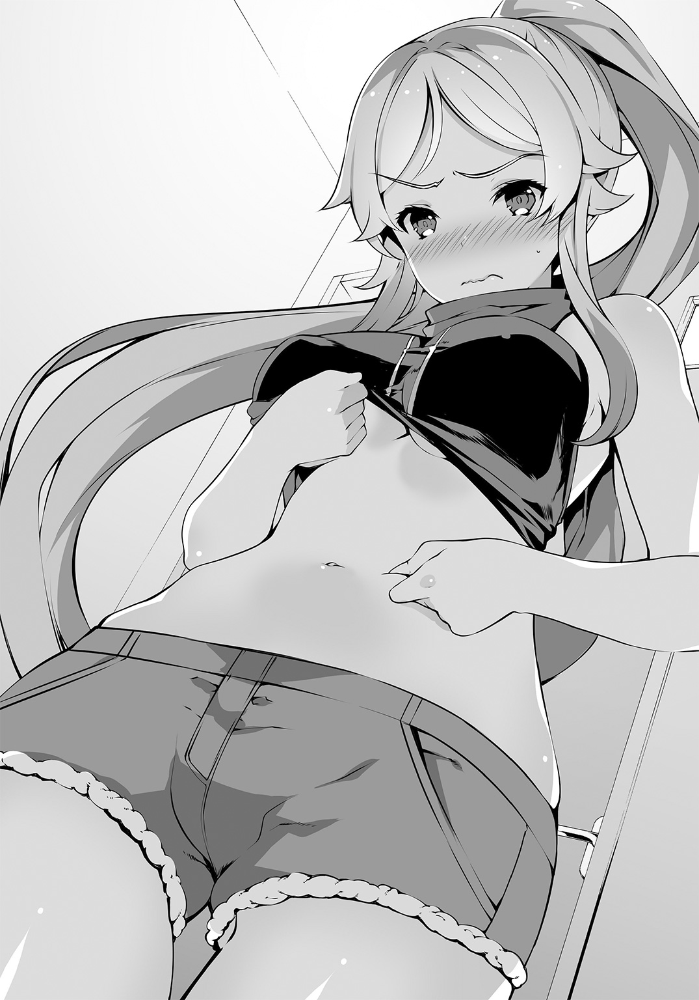
「ベリーベリーデリシャスデシタ。ありがとうございマシタ」
「フフ。礼には及ばない」
「バット......おいし過ぎて、食べるのをやめられませんデシタ......」
「......それに関しては、本当にすまないと感じている」
「アシャさん。そんなに気にすることは......」
うなだれたアシャさんはさっきまでの自信満々な表情が噓みたいに意気消沈していて、すごく不憫。
「いや......やはり、我もまた勝てないのだ。人の子を愚かと言おうが、我もまた同じ」
「勝てない？ どういうことなんですか？」
「そう。我もまたしょうもない呪いにこの身を侵されているのだ」
「え!? アシャさんも呪われているんですか!? 神......ですよね」
「わたしらと違うとか偉そうに言うといて、そのていたらくか」「ファッキンシット......」
「我とて、創世の神の呪詛に抗うことはできない。できないのだ」
「でも、アシャさんはボクの命を......【破呪の光輪】を狙ったりはしていないですよね。むしろ、護ろうとしてくれてるはずじゃ......」
「そのとおりだ。ゆえに、これは我が汝を、主を護ろうとすることを妨害するための呪詛」
アシャさんが漏らすのは重々しい吐息。
「我が受けたしょうもない呪い。それは《いざという時にうっかりしがち》な呪い」
「それ、呪いなんですか!?」「しがちって、なんやねん」「神様でも、言い訳する権利はあると思いマス」
「言い訳ではない！ 本当なんだ、信じてくれ！」
「必死か......」
「我は天則、つまりは天地自然の法則を司る神。全ての事象を法則として読み取り、干渉することすら許された我は、人の形を取ったとしても完璧な存在のはずなのだ。だが、しょうもない呪いによって、うっかりする......。うっかりしてしまうのだ......。肉離れも......時々、天則により得られる知識を取り違えるのも、カロリー満点のチャーハンも......。よく考えれば今のチャーハン、油を入れ過ぎていた。何がゴマ油で香り高くだ!!」
またがっくりと肩を落としました。
「しょうもない呪いさえなければ完璧なのだ。我は......くっ！ このような辱めを......」
「その......人間味があっていいと思いますよ。神ですけど」「なんかエロ妄想しがちなのは、呪いのせいやって信じたるから。信じたるからな？」「それでも、パティはチャーハンがおいしかったと思いマスヨ」
「汝ら......。人の子の憐れみなど......」
アシャさんがものすごくへこんでいます。
この状況、どうしよう......と、ボクたちは顔を見合わせ......
直後、ボク以外の三人がいきなり動きました。
「うわっ!?」
殺されるのかと思って頭を抱えたけど、違う。
アシャさんは窓からボクをかばうように、ベルタさんは杖を手にして玄関のほうに、パティさんは窓の脇に立って身構えていました。
「な、何かあったんですか？」
「どうやら......わたしら以外、この国にもお前を狙う奴はおるみたいやな」
「キミを殺すのはパティたちなんデスヨ。許せマセン」
「なれば、汝を護るのが我の使命だ」
ワンルームの部屋にまばゆい光が散って、黄金に輝き広がる六翼。
その手に光の剣を握りしめ、煌めく甲冑に身を包んだ女神。あまりにも美しいアシャさんの姿にボクは......ベルタさんもパティさんも息を呑んでいました。
そして、金色の髪をなびかせた女神は夜空へと飛翔する！
第六章 騒乱の覇者と鋼の救世主
金色の髪の女神は後ろ手に縛られてうつむいていました。
「......魔女や異星の機械相手ならまだしも......ただの人の子を相手にこの始末とは......。くっ！ 殺せ！ 殺してくれ！ もういっそ無様に、惨めに殺してくれ！」
「ア、アシャさんは悪くないですよ！ うちの窓枠が小さかったのと、呪いが悪いんです！」
「主よ。汝は心優しい。だが、その優しさは時に残酷さともなるのだ......。慰めないで......」
「ゴメンなさい......」
あの綺麗な翼を広げて窓から飛び出そうとした直後、アシャさんは窓枠に足を引っかけて、グルッと回ってすごく痛そうな角度で壁に激突。そのまま、ボクの部屋のある二階から地面に叩きつけられて気絶したところをこうして縛られてしまって......。
すごくかわいそうでした。頭から落ちるのは辛過ぎます。
「なるほどなぁ。純粋な第一原質に近い高位の神霊とはいえ、人の形を保つ以上は自分の頭の中で脳が揺れれば、物質の理に逆らうことはできんというわけやな。興味深い」
ベルタさんが感心していました。
「えっと......。アシャさん、それ、解いてもらいましょうか？」
アシャさんはプラスチックの拘束具で後ろ手に縛られています。
「このままでいい。これは我のうっかりに対する戒め。今は......そっとしておいてくれ」
「......わかりました」
何もできなくて申し訳ないけど、アシャさんがそう望むなら......。
かわいそう。
ボクたちは部屋を出て、車に揺られていました。
乗っているのは大型のワゴン車でシートは三列。
ボクとアシャさんは車の中央、二列目に。
前を向けば、助手席にはアシャさんを興味深そうに振り返るベルタさんがいて、運転席にはシャツにチノパンの恰幅のいいおじさんが座っています。
ボクの後ろ、三列目のシートにいるのはパティさん。
そして、その隣に、スーツ姿の女の人がいました。
長い黒髪は前を揃えて、後ろは束ねています。
眼鏡をかけた大人の女の人。眼鏡の奥の眼差しも、顔つきや雰囲気も剃刀のように鋭い。そんな印象を受けました。
......そのはずだったんですけど、今、その人はボクの隣のアシャさんと同じぐらいがっくりとうなだれていました。剃刀のような雰囲気もすごく曇っています。
「で、何者なんやっけ？ お前ら」
ベルタさんが車の天井を《ヘルメス》とか呼んでるあの杖でコツコツと叩いて尋ねました。
「明らかに特殊部隊の訓練受けてる動きやな、あれは。わたしかって、同業とばっかりやりあってるわけやないんや。わかるで」
確かに......ボクの部屋を襲おうとしていたらしい人たちは、素人のボクが見ても、訓練されているプロという感じの動きをしていた上、全員銃を持っていました。
そんな人たちが十人もいたのだけど......。
アシャさんが捕まった直後、ベルタさんとパティさんが瞬く間に蹴散らしてしまいました。
多分、五秒ぐらいしかかかってなかったと思うし、何がどうなったのかよくわからなかったけど、とにかく、全員気絶。そして、そのうちの二人を捕まえて、乗ってきたワゴン車を奪って、しかも、運転までさせながらボクたちはここにいました。
残りの八人はもう一台あったワゴン車に気絶したまま縛って放り込んでいたんですけど......。大丈夫かな......。
それはそれとして、ベルタさんの質問に、車を運転している恰幅のいいおじさんも、最後部の女の人も応えません。
「ワッツ？ そっちじゃないデスヨネ。この車が向かう方向」
「なんでそれが......？」
パティさんの唐突な言葉に運転手さんが声を上げました。
それを見て、女の人のもともと曇っていた表情がさらに曇ります。
「キミたち、《武塔》デスヨネ。それじゃ、今、道を曲がったのは間違えデス。戻るべきはそっちじゃないデショ？ アーユーＯＫ？」
「《武塔》の存在を......。それに、あの強さ。何者？」
「従いましょう」
眼鏡の女の人が言うと、困惑しながらも運転手さんはハンドルを切って、Ｕターンしました。
《武塔》ってなんだろう。気になる。それに、この車がどこに向かっているのかもわからない。
ただ、気軽に訊いていいものかどうかもわからないので、ボクはじっと前を見て無言でした。
みんな黙ったままで、車はしばらく走り続けます。
「あ......」
見慣れているわけじゃない。でも、見たことがないはずはない建物が目に入って、思わず声を出してしまいました。
映画やドラマ、ニュースで目にすることは多くても実際にはめったに行くことのない、白く特徴的な建物。こうして改めて見てみると日本のものとは思えない。
車の窓から見えたのは国会議事堂でした。
「いつまで黙ってるんデスか？ 二人とも。内閣情報調査室の非公式独立部門。通称《武塔》で合っていマスヨネ」
なんか今、パティさんすごいこと言った!?
黒髪の女の人の口から吐息が漏れます。
「その情報収集力なら、実際、戦ってみて、パティが何者なのか、もうわかっていマスヨネ？」
「......はい」
挑発的な言葉に、女の人が応えました。
「名前、教えてくれマスか？」
「服部大火」
「え......」
パティさんが目を丸くして、そのまま硬直。口をパクパクとしています。
その様子に、名前を口にした大火さん自身が不思議そうな顔をしました。
「ファック!? ファッキンシット!! ハットリデスか!?」
「は、はい......」
隣に座るパティさんにすごい詰め寄られてます。
「ブルシット！ ハットリって、つまり、ニンジャの末裔デスヨネ!? いや、違いマス......！ ニンジャは滅びヌ！ 現代にもニンジャは存在するわけデスネ！ ニンジャなんデスネ!! ホーリーニンジャ!!」
「た、確かに、そうですけど......。あの、私たちのこと周知していたはずでは？」
「見ると聞くじゃ、話は別デス！ ニンジャとか、しかも、ハットリとか......！ ガッデム!! ハットリデスヨ!?」
「は、はい。服部です」
「ファッキンイエーッ!! ハットリじゃないデスか！ 漫画にしか出ないと思っていたレジェンドデスから、デスからパティは......！ パティは......！ カワバンガーッ!!」
「パティさん!? どうしたんですか!? なんで突然興奮してるんですか!?」「あいつ、大丈夫なんか？ ついに壊れたか、頭」
「ハットリーッ!! ニンジャ！ ニンジャなんデスヨネ!? カワバンガー!!」
「え......」
「......ファッキンニンジャ？ ニンジャを名乗るだけのイミテイトデスか!? ガッデム！ アスホール!! そんなことして許されると思ってるんデスかっ!!」
パティさんの周りで空間が歪みます。
「パティさん、ちょっと!?」
「マザーファッカー!! パティにも許せないことはあるんデスヨ!!」
「に、忍者です。そのとおり、服部半蔵の系譜に連なる者です。古流の技術も受け継いでいますから、間違いなく忍者です」
「カワバンガーッ！ やりマシタ！ ニンジャ！ ニンジャデス！ ニンジャが目の前にいマス！ 羨ましいでしょ、魔女！ それに、アシャも！」
「いや、わたしらのわりと傍でもあるけどな」
アシャさんは落ち込んでいてそれどころじゃないです。
「ホーリーシット......どうしマス？ ニンジャデスヨ。ニンジャに何をお願いすれば......。はっ!?」
身を乗り出して大火さんの顔を覗き込みます。
「な、なんですか？」
「......ニンジャって、語尾はござるじゃないんデスか？」
「え？」
「ござる......デスヨネ？ ござるのはずデス！ ござるシット!!」
「パティさん、それはすごく一部の忍者だけなんじゃ......」
「なんでござるじゃないんデスか......？ まさかイミテイト......」
「いえ、ござるってつけるでござるよ」
大火さんは眼鏡を押し上げました。
「だってばよ、は言わないんデスか？」
「時々言うだってばよ」
真顔で応えている大火さんだけど、指先がプルプルしていて、耳の先は赤いです。
「よかった！ ニンジャデス！ ニンジャデス！ カワバンガー！ ござるだってばよ！」
できればござるやめさせてあげたいって思ったけど、パティさんが本当に幸せそう過ぎて、言い出すことはできませんでしただってばよ。
ベルタさんも深くため息をついてるだけで、助け舟は出しません。
ボクを狙ってきた人らしいけど、大火さん不憫。ゴメンなさい。
「ところで、水蜘蛛ってどうやって使うんデスか？ コミックみたいに足に履いてスイスイ行くとかできないとか、両手足につけてアメンボみたいにするしかないとか、諸説ありマスヨネ」
「はい。実際のものはフィクションのものとは違い、基本的には携帯型のボートのような運用をされていました......でござる。現在はその運用法のみ踏襲し、折り畳み型で携帯できる特殊なゴムボートなどを用いますでござる」
「生ニンジャの生レクチャー!! ヒューッ！ こいつはクリスマスプレゼントには早過ぎるぜデス！」
大火さんが質問責めで辱められてるうちに車は停まりました。
運転手さん、よく見ると、噴き出しそうなのをものすごく我慢してる顔をしてる。
「プッ」
我慢しきれなかったようでした。
◆ ◆ ◆
ボクは緊張してガチガチでした。
口の中はカラカラに乾いてるし、指先とか震えて、汗で眼鏡がずれてくるけど直してる余裕もないです。全然ないです。
「まあ、緊張せずに」
その人は気さくな感じに言いました。
どこか人懐っこくて、でも、力強さも感じさせる、逞しくも凜々しい猟犬のような雰囲気をまとった壮年の男の人。スーツをかっちりと着込んだその人を、ボクは知っていました。というか、知らない人はほとんどいないと思う。
「あ、赤星総理......」
声は震えてしまっていました。
内閣総理大臣赤星宗次。
まだ四十九歳。戦後では歴代最年少の総理大臣だということで話題。今のところ、支持率は高くて、政治家とは思えないナイスミドルイケメンとかで、別の意味でも話題になっている人。
そんな人が目の前にいました。
というか、ここ首相官邸ってところだ!?
大変なことになってしまった......と思わざるをえない。
アシャさんが言ってた宇宙規模の話にも、ベルタさんやパティさんの話にもちょっとついていけない感じはあったけど、目の前に総理大臣がいるというこの状況はギリギリ地に足がついていて、気が遠くなりそうでした。
「キミが菊月晶くん。呪いを解く鍵となる少年だね。私は赤星宗次。第九十七代内閣総理大臣だ」
「は、はい......」
「それから、彼女は服部大火。もう知っているようだが、《武塔》という組織の一員だ。まだ二十歳と若いが優秀な人物だ」
赤星総理の隣に立つ大火さんを改めて紹介してくれました。
大火さんは表情を変えず一礼。
「状況は把握させていただいているつもりだ」
そういうと、赤星総理はベルタさん、パティさんを見ました。
「《四元の支配者》、あるいは《魔女騒乱の覇者》、ベルタ・ヴァッサーマンくん。それに、《デトロイト事件の英雄》、パトリシア・Ｓ・レグルスくん。キミたちが呪詛を解くべく、菊月くんを殺そうとやって来たことは理解している。《武塔》と交戦し、難なく打ち破ったことも」
「さすがはニンジャデスネ......。パティたちに気づかれないように、情報は送っていたわけデスか。ふ、ふふへ......イエス！ オーイエス！」
「お前、なんで嬉しそうやねん」
「おおむねそのとおりだ。さすがは服部の系譜。しかし......キミたちが相手では《武塔》といえども、どうにもならないか」
「まあな」
そう言ったベルタさんでしたが、さっきから足の小指を押さえてうずくまっています。ちょっと涙目。赤星総理の執務室に入った時に、棚に思いっきりぶつけていました。
その横ではパティさんがスニッカーズを開けてムシャムシャ食べています。
「余裕がうかがえる。さすが。想像以上だ」
「それは......買い被りやで。特にパトはアホなだけや」
「ワッツ!? パティ、いつの間に、これ食べてたんデスか!?」
「無意識か!? お前、ほんま爆発するで」
「ま、まだ......。まだ大丈夫デス。ＯＫ......アイムＯＫ......」
服の上からお腹を触る。
「ただ、彼女のことは知らない。よければ紹介してもらえないか？」
赤星総理がアシャさんに目をやりました。その目はなんというか、気の毒な人を見るような、そんな感じで......。
だって、アシャさんはまだ後ろ手に拘束されたままで、ここまで一言も喋らずにうつむいていただけで、その上、翼も鎧も剣も姿を消してるから、巻き込まれた外国人にしか見えないと思います。
「そいつは、わたしらより、タチ悪いで」
ベルタさんがようやく立ち上がりました。
「上位の神霊。創造神に連なる者。ゾロアスターの七柱神、アシャ・ワヒシュタを名乗っとる。言ってる意味、わかるか？」
「そう、だね......。これは......」
赤星総理は絶句します。
「え......？ 私たちが何もせずとも勝手に二階から落ちて気絶していた女性が、そんな......」
大火さんは別の意味で絶句していました。
「呪いのせいですから。ボク、神霊とかよくわからないですけど、アシャさんがすごいのはわかっていますから」
「いいんだ。我のことは気にするな」
全然、慰めにならない......。
「え、えっと......」
ともかく、緊張してしかたがないけど......。ひとつだけ、どうしても訊いておかないといけないことがありました。
「あの、総理。《武塔》......大火さんはボクを狙ってきた。そう考えていいですか？」
「ああ。一般には知られていないが、《武塔》は現内閣総理大臣のみに従う、極端な言い方をすれば、総理大臣が私兵とできる組織だ。大きな組織ではないが、練度は高い。具体的にこれまで何をしてきた者たちかは、あまり聞かないほうがいい」
「ウェルウェル」
「わかりました。でも、ボクが総理に狙われたことは......事実なんですね」
「そのとおりだ」
「一応、言うとくで。ショーくんは、わたしの獲物や。自分を過大評価するつもりはないけど、わたしとことを構えるってのが、どういうことかわかってるんやろ？」
「それはパティも同じデスヨ」
「ならば、我も言おう」
「アシャさん。もう大丈夫なんですか？ 無理はしないで」
「我は神。主が我が身を案じる必要などない」
アシャさんが拘束具を難なく引き千切れば、プラスチックのはずの拘束具は砂のように変わってこぼれ落ちていきます。
それから、ボクをかばうように立って、赤星総理を見据えました。
「我が使命もまた菊月晶を護ること。汝が彼の、我が主の命を狙うならば、天則を司りし神、アシャ・ワヒシュタが立ち塞がることになる」
「まずは誤解を解きたい」
赤星総理は言いました。
「私は菊月晶くんを巡るこの争いから身を退くことを明言する」
「諦めが早いデスネ」
「キミたちは私や《武塔》、普通の人間の手には負えない。内閣総理大臣として、この国を破壊されるわけにはいかない」
「じゃあ、なんで手ぇ出したねん」
「本来なら、ベルタくんやパティくんのような、超常的な存在が関わる前に、菊月くんを手中に収めておきたかった。キミたちのような存在がこれほど早く関与してくるとは思っていなかった。大きな力を持つ者がこの国で争うことを避けたかったのだが......」
「遅かったみたいデスネ」
「そのとおりだ。だから、私はキミたちに願うことしかできない。無関係のものを巻き込むようなことだけは避けてほしい」
ボクの命については一切触れられていないけど......赤星総理の心配はわかる気がしました。
ベルタさんやパティさんの言う、呪いで街が吹き飛ぶとか、国が吹き飛ぶとか、星が吹き飛ぶとかは規模が大き過ぎて実感が湧かなくても、二人が戦うとどうなるのかは最初の戦いでもう十分に見てしまったし。
あの時は、アシャさんが作った変な空間にいたから、公園に被害はほとんど出てなかったけど、そうじゃなかったとしたら......。
「パティは無関係の人間を巻き込んだりする気はありマセンヨ。このビッチがどう考えてるかはわからないデスけど」
「お前こそ、アホみたいにぶっ放してたやないか。わたしはそんなことせえへん」
「天則もまた無益な殺生は認めない」
「そう言っていただけるとありがたい」
「ショーくん殺すんやったら、被害出んようにやるわ」
「殺さないって選択肢があると、本当に嬉しいのだけど......」
「すまんな。ないねん」「ほんとソーリー。ありマセン」
ありませんでした。
「......ところで、赤星総理の方針はわかったし、ボクが心配するのもどうかとは思うんですが......」
「言いたいことがあれば言ってくれ。私はキミに対して負い目がある」
「はい。えっと......。赤星総理も呪いを......ボクたちはしょうもない呪いと呼んでいるのですけど。何か受けてるんですよね」
「あ、ああ」
「ボクを殺そうとしたってことは、その呪い、大丈夫なんですか？ やっぱり政治活動に関わるとか、もしかして命に関わるとか......」
「呪い......。私の呪いか。たいしたことじゃないから、あまり気にする必要はないよ」
ふと赤星総理を見ると、なんだかモジモジしていました。まるで乙女みたいな反応。
「なんかあるな、お前」
ベルタさんが《ヘルメス》の石突で床を叩きます。
「イエス。隠し事があると困りマスネ」
「う......」
深くため息をつくと、観念したように口を開きました。
「水虫だ」
「「「え？」」」
思わず声を揃えていました。
「私が受けたしょうもない呪い。それは《しつこい水虫》だ。治ったはずでも、夏になってむれてくると水虫が再発する」
「それ、完治してないだけやろ」「水虫治療は根気が大事というのは、ニューヨークでも常識デスヨ」
「天則に従えば、完治したように見えても、一ヶ月は患部に薬を塗り続けるべきだ。それを怠れば天の理は、汝に夏場の再発を引き起こすだろう」
「なんかみんな詳しいですね」
「ちゃうからな！」「パティも違いマスヨ！」「物質の理にあるとはいえ、我は神。白癬菌は我には届かない」
「むしろや、お前、一国の総理のくせに、白癬菌如きで国民殺そうとしたとか最悪やな！」「ファッキンシット!! 何がイケメン総理デスか！ 足が臭いくせに」
「いや、私は菊月くんを手中に収めることで、無用な争いを......」
「やましいこと、全然ないって言い切れるんか？」「パティもキミみたいな奴、いっぱい見てきマシタヨ。どいつもこいつもアスホールデシタ」
「ベルタさんもパティさんも、さすがに言い過ぎじゃないですか!? 狙われる側からすると、二人にも同じぐらいの理由で狙われてる感覚なんですけど。だって、タンスの角と、お腹がすくですよ......」
「うっ......。すまん。確かにそうや。水虫辛いやろ？」「そうデスネ。パティも言いすぎマシタ。総理、ソーリー。ロスでも水虫は皆の悩みデス。水虫マスター」
「いい。いいんだ。確かに私は許されないことをした。水虫如きで......」
総理はすごく悲しそうでした。
「赤星総理もやっぱり、ボクのことを夢で見たりとかしたんですか？」
「そのとおりだ。高次の神霊による介入だと、それはわかっていた。政府には政府で、霊的な事象に対する機関はあるからね」
ボクの知らないことはたくさんあるようです。
「でも、それなら......。悪いのは赤星総理じゃなくて、こんな呪いを与えた悪神ですよ。ベルタさんやパティさんもそうですけど、理不尽な呪いなんてかけた相手が一番悪いはずです」
「キミは......」
「ただ、ボクはやっぱり死にたくないんです。水虫の辛さも、それがどれほど政治活動に支障をきたすのかもボクにはわかりません。でも、ボクを殺さずに治す方法をなんとか考えてほしいんです」
総理大臣なぐらいだから、きっと治す方法は色々試してきたんだと思います。
そんな総理が思いつかないのに、ボクが思いつくわけがない。でも......考えるだけは考えてみます。
「治らないならいっそカミングアウトして理解を求めて......あ、ダメだ。総理って、確か支持層には女性が多いとか。だから、支持率も高いとか......。水虫とか、女の子にとってはどうやってもマイナス印象な気はするし。じゃあ、せめて痒みをどうにかする方法ってないのかな......」
「菊月くん。菊月くん」
「え？ はい」
言われて顔を上げると赤星総理が心配そうに、ボクの顔を覗き込んでいました。
「水虫は私の問題だ。キミがそんなに必死に考えることはないんだよ。うんうん唸ってたよ」
「でも、ボクを殺さないようにしてもらうなら、何か解決法を考えないと......」
「キミは......ちょっと善人過ぎるな」
「わかるで、その感じ」「こっちがギルティを覚えマスヨネ」
「自分がしようとしたことが、どれほど浅ましいのかを思い知らされて、胸が痛む」
「刺さるよな、ショーくんの言葉」「よりギルティを覚えマスヨネ」
「菊月くん。こうしよう。私にはベルタくんやパティくん、アシャくんのような存在を止めることはできない。だが、キミを巡る争いによる被害を防ぐために、できうる限りの便宜をはかろう。そのための窓口として、大火を使ってくれ。私ができることなら、なんだって協力する」
「よろしくお願いします」
大火さんがペコリと頭を下げました。恐縮です。
「もうキミは自分を巡る戦いに誰かが巻き込まれるような、そんなことは極力気にしなくていい。優しいキミなら気に病むところだろ」
「ありがたいです。......あれ？ でも、やっぱりボクが狙われること自体はその......」
「はっきり言おう。私にはこれが精いっぱいだ。キミを巡る争い自体は、どうにもならない」
「そこまではっきり言われたら......しょうがないんですよね」
「すまない。内閣総理大臣としても、私にできることはここまでだ。我々は無力なのだ」
「いや、その......わかります」
「なんや？」「ワッツ？」「我の顔に何かついているか？」
アシャさんたちを見ると、ボクもそう思う。銃持ってる人、秒殺とかどうかしています。
むしろ、政治活動だけで大変なはずなのに、そんな呪いに心を痛めないといけない赤星総理に申し訳ない気分でした。
◆ ◆ ◆
「それでは菊月晶様たちを自宅までお送りしてきます」
晶たちが退室したあと、続いて大火もまた執務室を出ようとした。
「大火」と、赤星総理はそれを呼び止める。
「《武塔》は個人には仕えない。その存在は時の内閣総理大臣直属。善悪はない。明治から続く仕組みだ」
「はい」
「キミにも思うところはあると思う。私もこれが正しいとはとうてい思えない。だが、《武塔》として、国のために働いてほしい」
「承知しています。そのための現在の服部家であり、《武塔》ですから」
「すまないね」
「いえ。しかし......状況は切迫しています」
感情を殺した声で大火は言った。
「それが事実なのかはともかく。アシャ様が創世神に関わるものだという話......。この国の言葉でいえば造化の三神に当たる最上位の神霊に匹敵する。そのことには驚きました。しかし、動きを見せている神霊はアシャ様だけではありません。格としては、アシャ様には劣りますが......」
「国内でも動きがある。それは既に私も聞いている」
赤星総理はあごに手を当て、小さくうめいた。
「この状況に陥ることを事前に阻止できなかった。それでも、私たちは国を護るため、国民を護るために、できる限りのことをするしかない。大火。キミもまた菊月くんを監視し、力を尽くしてくれ」
「承知しました」
大火は一礼し、再び赤星総理に背を向けようとした。
「あ、待ってくれ」
「はい」と返事をしながら、大火は再び振り向く。
「あの、な？ 一応、言っておくけどな。キミを監視につけるわけだが、私は決して水虫の完治に未練があるわけじゃないんだ。隙あらばとか......そんなことを考えたりはしていない」
「はい」
「あの少年、菊月くんに言われて思ったよ。確かに......これは人の手で決着をつけるべきだとね。私は諦めずに治療を続ける。人の叡智は......心は、白癬菌には屈しない。そうだろう？」
「もう行ってもよろしいですか？ 菊月様たちをお待たせしてしまっていますので」
「......ああ」
もう一度一礼すると、大火は総理のことを剃刀の如く冷たい眼差しで一瞥して、執務室を出て行った。
足音が遠ざかっていく。
総理は椅子に座ると執務机の引き出しからひとつの容器を取り出した。
「諦めない。私は諦めないよ。菊月くん。嫁に、娘に嫌がられ、お風呂のマットを別々にされ、なおかつ部下にまでめんどくさいな、この白癬菌保菌者！ という顔で見られた。だけど、諦めない。キミの言葉で目が覚めた」
靴と靴下を脱ぐと、容器の蓋を開ける。
「人の根気としつこい白癬菌。どちらが勝つか。私が試してやろうじゃないか。この内閣総理大臣、赤星宗次が......うおっ!? しみる！ くーっ！ 足の皮が爛れてる時はこれだから！ ......しかし、日本はこれから......うわっ！ 臭っ!?」
赤星総理と白癬菌の戦いが人知れず幕を開けた。
第七章 彼女の帰る場所
少し古いけど、日々の掃除や手入れが丁寧にされてることが一目でわかる二階建てのアパート《メゾンふたつぼし》。
見慣れた建物の前で、大火さんの運転するワゴン車は停まりました。
「わざわざ送っていただいて、ありがとうございました」
「いえ。これが拙者の役割でござるから」
「もういいんですよ!? 無理しなくていいんですよ!?」
「よいのでござるよ」
気づけばそんな大火さんをパティさんがすごく期待に満ちた目で見ていました。満面の笑みに輝いてます。
「それではゴメン。臨兵闘者皆陣裂在前！」
「ファッキンクール！ プロニンジャ！ ジョーニン！ カワバンガーッ！」
指で素早く印みたいなのを切ると、大火さんは颯爽と車を走らせて去っていきました。
それでいいのかな......と思わなくもなかったんですけど、パティさんが満足そうだったし、これ以上、大火さんを苛むのも申し訳ないので、もう別にいい気がします。
「ショー。知っていマスか？ ハットリが今行ったもの。あれは九字......すなわち、九字護身法。かつて修験者が行った修法ですが、その源流は中国の道教にあります。忍者もその魔除けとしての効能にあやかり、また己の精神統一のために行います。本来はより複雑な印を指で組むのですが、今のハットリが行ったものは指で縦横に空を切るだけの刀印を用いた簡易的なもの、すなわち早九字と呼ばれるものです」
「へー」「我は天則により知っている」「お前、なんで日本語流暢やねん」
「何言ってるんデスか？ まあ、ともかくデスネ」
大火さんのワゴン車が見えなくなり......
同時にパティさんとベルタさんが身構えました。
アシャさんがボクをかばう位置に立ち、途端に緊張が膨れ上がります。
そうだった......色々あってちょっと忘れそうだったけど、ベルタさんとパティさんがボクを殺そうとしているんだって事実だけは変わらない。
ベルタさんは杖を強く握りしめ、パティさんは既に鉤爪のような籠手を装着して、重力剣を作り出しています。
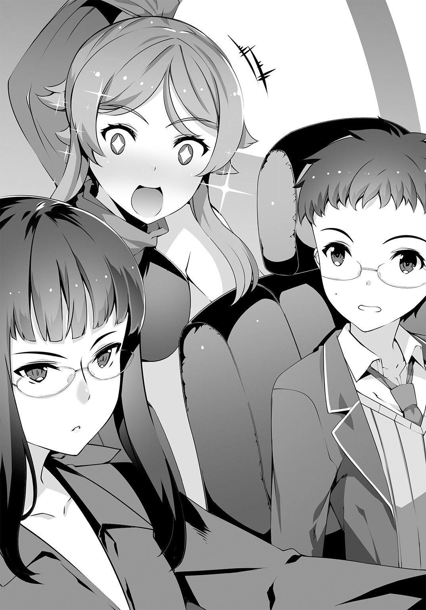
ヒリヒリとした空気は素人のボクにも伝わってきて辛い......！
そして、
「......やめやな」
先に力を抜いたのはベルタさんでした。
続いてパティさんも歪みの剣をかき消しました。
「ショーくんを殺さんとあかんのは変わらんけど......。このめんどくさい状況。ちょっと考え直さんとあかんみたいや」
肩をすくめました。
「ウェルウェル。パティも今日はもう疲れマシタ」
パティさんは眠そうにあくびをします。
「続きはまた今度やな」
「イエス。夜九時......時間も遅いデスしネ」
「やめてくれるのはありがたいんですけど......。なんだか、今日は遊び疲れたから帰るとか、そんな感覚ですね」
「人生とはひと時の遊戯である。とか、そんなんでどうや」
「クール！ カッコイイデスネ！」
「なるほど。悠久の時の中、人の子の生とはまさにそのとおりだな。だが、そのわずかな時間を、人は懸命に生きる。それが大いなる神のもたらしたただひと時の遊戯であったとしても」
「意外と気が合ってますよね」
「まあ、確かに......争う必要がなければ、争いたくはないけどな。パトはしばく」
「マザーファッカー！ それはこっちの台詞デスヨ！」
ベルタさんが帽子をかぶり直して、黒いマントを翻し、背を向けます。
「じゃ、わたしは帰るわ。パトもいらんことせんとはよ帰れや」
「だから、パティデス！ 言われなくても正々堂々帰りマス。あと、魔女！ キミはもう今日からベルデス！ ベルベルベルベル、ザマー！ ビッチ、ザマー！ じゃ、グッバイ。ショー。アイルビーバック！」
溶鉱炉に沈みそうな勢いで親指を立てました。
ベルタさんとパティさんはもう一度顔を見合わせると逆の方向に歩み去って行きました。
二人の姿が夜の闇の向こうに消えていきます。
「......さすがに疲れちゃったなぁ」
殺されかけたこと以外は別に不快じゃなかったけど、やっぱり殺されかけたことですごく疲れてしまいました。一番、堪えたのは、多分、内閣総理大臣と話をしたことだと思うけど。
慣れた階段を二階に上がります。
部屋に戻ると、フーと深く息をついてしまいました。
「お茶でも淹れよう」
アシャさんが気を遣ってくれました。
「ありがとう。じゃあ、お願いします」
頷くと、アシャさんは既に手にしていた電気ケトルでお湯を沸かし始めます。
「疲れた時は風呂に湯を張るに限る」
「そうですね。本当に疲れました。普段、あまりお湯張らないけど、今日は張っちゃおう......」
「風呂の掃除はまだだな」
「あ、そうでした。バスタブはしばらく使ってないので、水で流せば大丈夫ですけど」
「わかった。なら、汝がお茶を飲んでいる間に、我が風呂を洗おう。毎日の洗浄はカビの防止にも繫がる」
「そんな。アシャさんにそこまでさせるわけにはいかないですよ。お風呂はボクが......ん？」
今さらだけど気づきました。
「なんで、アシャさん、ここにいるんですか!? 自然過ぎて、普通に受け入れてしまってました。帰らないんですか？」
「フフ......。天則により与えられし我が使命は、汝の命を護ることだ」
「でも、今日はベルタさんもパティさんも帰りましたし......。確かに一緒にいてもらえると心強いですけど、もう夜も遅いですよ」
「我は汝を護るために人の形をもち顕現した。呪詛を受けたこの身だが、そのための叡智、力は兼ね備えている。つまりはこの世界の理は承知している。しかし、あの魔女や機械混じりと違い、我は本来、この世界にあらざりし者。つまりは、その......」
「その？」
目を逸らして、
「......家がない」
ボソリと言いました。
「我が力は天則、つまりは世界の理を読み取り、時に書き換える。だが、それは大いなる天則を果たすためであり、我個人の目的のために力を用いることなどできない」
気づけばアシャさんはボクの袖をつまんでいました。
その表情は、自信に満ち満ちたあの太陽のような姿とは、まるで違う......捨てられた子犬のように、寂しげで、か弱くて、放っておいたらどうにかなってしまいそうでした。
「......っ!?」
無意識のことだったみたいで慌てて手を離して、目を伏せます。
「すまない。うっかりだ。今のは......しょうもない呪いゆえだ。いや......」
うつむいたアシャさんの肩がかすかに震えていました。
「そもそも我は使命を果たすことさえできていない。呪詛によるうっかりのせいだとはいえ、主を狙う者に勝つことさえできていない。そんな者に価値などない。確かにそうだ......」
「いや、ボク、そんなこと言ってないですよ!? アシャさんががんばってくれてるのはわかっています！ 見ず知らずのボクをわざわざ護りに来てくれて、変な呪いにもめげずに身体を張ってくれて......！ 敗けてるのだって、しょうもなくて変なくせに致命的なこと起こしちゃう呪いのせいじゃないですか！」
「主よ。晶よ。我を気遣ってくれるのか？」
「気遣うとかじゃなくて......。でも、ちょっとだけ待ってほしいんです。アシャさんの住むところをどうにかしたいんですけど」
「わ、我は別にそんなさもしいことを望んでなどいないぞ!? あれはうっかりであって......。そうだ！ 我は路上で寝ても何の問題もない。アシャ・ワヒシュタは風邪などひかない。汝を護り、寝る場所を得る。つまりは、アパートの前の道が我の家だ」
「いたたまれないですよ!? むしろ、そのほうが問題にもなりそうですし！ このアパート自体は一人暮らしってことで契約してるんで、管理人さんに相談してみようと思います」
「確か、父親が転勤することになった時、汝が通う領武高校の傍にある親戚経営のアパート、つまりはこの《メゾンふたつぼし》へ引っ越したのだな。ゆえに高校生にしては珍しく一人暮らしを許された」
「なんで知ってるんですか？ それも必要な叡智？」
「そのとおりだ。我は主のことならば何でも知っている」
どこまで知られてるんだろ......。
アニメグッズを隠した収納ボックスのほうをチラリと見てしまう。
「『弱い巫女さんは絶対に強い』略称ミコツヨでは、敵の腹をとにかく殴り続けて倒すサブヒロインの新宮地獄が、一番人気であること。そして、汝が地獄萌えだということも知識として理解している」
「確かに好きですよ！ 一番人気のキャラ萌えな簡単なオタクでゴメンなさい！ 確かにそのフィギュア入ってますよ！ 確かに隠しました！」
「ともかくだ。汝に迷惑をかけるわけにはいかない」
「いえ。ちゃんと相談してみます。管理人のスズ姉さんはとても話のわかる人ですから」
「主よ......」
「むしろ、アシャさんのほうが、ボクなんかと一緒にというか、同棲というか......。いいのかなーって、そっちが心配になるのですけど。でも、そんなの神様だから気にしないですか」
「フフ。まさしく、そのとおり。天則によれば同棲とは共に住むこと。一般的に男女の同棲はカップル同士の行うもので、結婚関係に等しいともいえるが......」
アシャさんの声が震えました。
「......違うんだ。わ、我はそんなつもりで言ったんではないんだ」
顔が真っ赤です。
「ボ、ボクもそういう意味で言ったんじゃないですよ!? 照れないでくださいよ!? ボクのほうもすごく恥ずかしくなるじゃないですか!?」
確かにアシャさん、綺麗だし、そもそも、ボクは女の子とこんなに親しい感じで話した覚えもないし......！
しかも、アシャさん、赤い顔のまま黙り込んでうつむいてる！ ちょっと目が潤んでる！
「......お、女として求められたなら、我は......。あの......我は人の形としては初めてで......。天則としては知っているが、しかし......」
「も、求めませんよ!? しませんよ!? そもそも、何を......」
それ以上訊けるわけがありません。
ボクも同じようにうつむくことしかできないです。
「そして、話は全て聞かせてもらったわ」
突然玄関のほうから声がして、それから律儀にインターホンが鳴りました。
「ボクが出ます！」
このどうしようもない空気から逃げるようにして、ドアを開けると、立っているのは見知った女の人。
ミディアムショートの茶色の髪。ぽかぽかとした春の日差しのような柔らかい笑顔。ロングスカートにエプロン姿が似合う穏やかな雰囲気の女性。
「こんばんは。スズ姉さんよ」
双津星鈴金姉さん――スズ姉さんはほんわかした笑顔を浮かべて言いました。
「なるほど。双津星鈴金か」
「あ、アシャさん、天則により知ってるんですね」
「無論」と頷くアシャさんを見て、ホッと胸を撫で下ろしました。
さっきまでの何とも言えない空気がスズ姉さんのおかげで消えてくれました。
「ギンもいるよぅ」
スズ姉さんの後ろから顔を出したのは、スズ姉さんと同じ茶色の髪をツーサイドアップにした女の子。幼くて愛らしい顔立ちと、フリフリとしたかわいらしい服は、春の日差しに照らされた花畑がきっとよく似合う。
スズ姉さんの妹、双津星銀華ちゃん――ギンちゃんでした。
「鈴金、銀華。我はアシャ。八乙女アシャ。髪がこの色なのは、我の母がフランス人だからだ。よろしく頼む」
すらすらと新しい設定と姓が出ました。さすがは神様。臨機応変。
「はい。よろしくお願いします」
スズ姉さんとアシャさんは握手を交わします。
「さて。我はこれ以上、迷惑をかけるわけにはいかない。今日はもう帰るとしよう」
「でも、事情があって帰るところがないのよね？」
「......む」
まだちょっとほっぺたが赤いアシャさん。ボクもです。
「訳ありでこのままじゃ路上で寝ちゃうのよね。スズ姉さん、聞いてたんだから」
「どこから聞いてたんですか？」
「さもしいとか、そのあたり？」
アシャさんの正体的にはセーフでも、他の色々な部分でアウトでした。
「とにかく、アシャさんは晶くんにとって大事な人なのよね？」
「大事な......。いや、我のことなどは......」
「うん。とてもお世話になっています」
「主......」
アシャさんがいなかったら、ボクはベルタさんやパティさんに殺されていた......。
そう考えるといくら感謝してもしたりない命の恩人に間違いありません。
「なら、わたしは二人が一緒に住むことを認めるしかないわね」
「スズ姉さん！ ありがとうございます！」
「さっすが、お姉ちゃん！ 他に類を見ない大岡裁きだよぅ」
「ギンちゃん。わたし、市中引き回しの上に打ち首獄門して裁いたりしてないわよ？」
言いながら、スズ姉さんはギンちゃんの頭を撫でてあげていました。
「その代わり......高校生に相応しいおつき合いじゃないと、ダメよ」
ほんの少しだけ、スズ姉さんのほっぺたも赤い。
「そ、そういうのじゃないですよ!? な、な、な、何か誤解してないですか!?」
「そ、そのとおりだ！ 我らが話していたのは、本来の意味での同棲であって、カップルが行う同棲とは違......カ、カップルではないのだ！ シェア！ シェアハウスの如く！」
「うふふ。照れてるの、初々しくてかわいいわね」
ダメです。スズ姉さんは全然話を聞く気がありません。
「ところで、こっちに来た本題なんだけど」
そう言うと、スズ姉さんは手にしていたタッパを差し出します。
「スーパーの特売で調子に乗って買い過ぎちゃって......。夕飯作り過ぎちゃったの。晶くんもアシャさんも少し食べてもらえないかしら？ ......あ!? お姉ちゃん、よけいなことを!?」
「そんなことないです！ 食べたいです！ ありがとうございます」
受け取ってみると、タッパの中身は里芋の煮物でした。
フタを取ると広がるのは甘いいい匂い。
お腹が鳴ってしまいました。そういえば、チャーハンを食べそびれたせいで、まだ夕ご飯を食べていなかった。
「お姉ちゃんの料理はとてつもないおいしさなんだよぅ」
「だよね。嬉しいなぁ」
「なるほど。煮崩れしないラインを保ちつつもよく煮込み、調味料も味が薄過ぎず、濃過ぎず、素材の味も活かすように気を遣っている。それが一目見てわかる。素晴らしい煮物だな」
アシャさんが煮物を覗き込んで言いました。
「我の次ぐらいに素晴らしい」
いつの間にかアシャさんの手にエプロン。それ、ボクのエプロンです。
「しばし待て。汝らに見せてやろう。本当の煮物というやつを」
「どうしてこのタイミングで対抗意識みたいなの燃やし始めちゃってるんですか!?」
「同棲するなら......いや、主の世話になるならば、せめて......家事ぐらいはこなしたいではないか。天則司りしこの力をもって」
アシャさんはエプロン巻きつつ、キッチンへと向かいます。
「大仰過ぎませんか!? ボク、本当に気にしてないですから」
「とてつもなくうまいという鈴金の料理。我がそれよりもうまい料理を作ることができると証明すれば、我にはここに住まう価値がある。主を護る以外にも、我には価値が......」
「そんな存在価値に悩まなくてもいいんですよ!?」
「神である我には悩みなどない」
どう考えても悩んでます。
でも、こうして料理することで、アシャさんが自分の存在意義を見出すことができるならと思うと......。
止めようと思ったけど、できなくなってしまいました。
スズ姉さんに失礼になっちゃうけど......。
「よかったわね。晶くん、ご飯いっぱいよ」
「お姉ちゃんに勝とうなんて、壇ノ浦で平家まさかの大逆転！ のようなものですよぅ！」
ギンちゃんは不満そうだったけど、スズ姉さん本人はいつもみたいなぽかぽかした笑顔のまま。
天則司りしアシャさんの料理の腕前は、パティさんに作ったチャーハンのできでわかっているし、スズ姉さんが納得してて、アシャさんにも悪いことじゃなくて、ボクもおいしいものを食べられるなら、止める理由はもうありませんでした。
「それじゃ、お願いします」
「任せろ。主」
アシャさんの顔に光り輝く太陽みたいな、自身に満ちあふれたあの表情が戻っていました。
◆ ◆ ◆
アシャさんが料理している間、ボクとスズ姉さん、ギンちゃんはテレビを見て、ダラダラとしていました。
スズ姉さんもギンちゃんもこのアパートの近所に住んでいます。だから、アパートの掃除なんかの管理がてら、ボクの部屋で遊んでいくことがあるので、わりといつもどおりの感じでした。
親戚仲は良好です。
テレビで流れている夜のニュースには赤星総理が映っています。人懐っこさと精悍さの同居した頼もしい表情で、政府の今後の政策を語っていました。
水虫のことを言いだせなくてモジモジしてたあの姿を思い出しながら、支持率の推移グラフの高さとか見ると、なんともいえない気分になってしまうけど、別に総理が悪いわけじゃなくて、犯人は多分、しょうもない呪いとしつこい白癬菌です。
ナレーターの声と、アシャさんのリズミカルな包丁の音に混じって穏やかな寝息が聞こえました。それから肩に覚えたのは温かな感触。
「スズ姉さん？」
すやすやと眠って、そのままボクにもたれかかっていました。
首筋をくすぐる茶色の髪からは少し料理の匂いが混じった甘い香りがします。
「スズお姉ちゃんは昨今稀に見るほど一生懸命なお姉ちゃんなんですぅ。だから、今日も尋常じゃないほどお疲れなんですよぅ」
「そっか。確かにスズ姉さんはそうだよね」
幸せそうな寝顔を見せるスズ姉さん。
だからボクはしばらくの間、そのまま動かずにテレビを見る。
「待たせてすまない」
腕を組んで鍋の様子を見ながら、アシャさんが言いました。
「いえ」「いいのよぉ......」
眠ったままで応えるスズ姉さん。
ギンちゃんと視線だけ合わせて、思わず小さく噴き出してしまいました。
◆ ◆ ◆
そうしているうちにアシャさんの料理が完成しました。
だけど、アシャさんがしていたのはそれだけではありませんでした。
いつの間にか、干していた洗濯物は取り込まれて、用途別に分けた上できちんと畳んであります。しかも、ボクよりずっときれいな畳み方で、ものによっては、ボクがめったに使わないアイロンまでかけてある始末。
下着まで畳まれてしまったのは、ちょっと恥ずかしい。
それにさっきまで料理をしていたはずなのに、使った包丁や計量カップ、まな板はもう全部洗って拭いて、棚にしまっていました。
「なんて手際のよさ......！ いつやったんですか？」
「天則を司りし我には煮物を作るために必要な時間が手に取るようにわかる。ならば、その間に、洗濯物を取り込むことは造作もない。そして、煮物に味を染み込ませるべく冷ます間、洗いものを済ませるなど、赤子の手をひねるようなものだ」
「参考にします」
「すごいわ。完璧よ。わたしも参考にするわ」
いつの間にか目を覚ましていたスズ姉さんはちょっと興奮気味。
「さすがは晶くんの想い人ね」
「あの、だから、違いますよ？」
「そんな人の作った煮物......。いったいどれほどの煮物なのか、お姉さん気になるわ。そして、同時に、その料理の技を学びたい。奪いたい......」
「さすがはお姉ちゃん！ 時に貪欲ともいえる飽くなき探求心！ 他の追随を許さずですぅ！」
「フフ......。人の子よ、己を高め続けようというその姿勢こそ尊いものだ」
言いながら、アシャさんはテーブルの上に煮物の小鉢を並べていきます。スズ姉さんが持ってきた煮物も既に温めなおしてありました。
一人に二皿ずつ。湯気を立てるそれは全て里芋の煮物。
「運命の悪戯か......。いや、これも天則。冷蔵庫に里芋の残りがあったので、使わせてもらった。同じ食材で比べるのがもっともフェアだといえる」
「そういえば、この前、母さんが送ってくれたのが、まだ残ってましたね」
「さあ、鈴金。我と汝。どちらのものを先に食す？ 汝が決めるがいい」
「わたしが？ それじゃ......わたしのほうから食べてもらうわ」
「さすがはお姉ちゃんですぅ。料理の勝負だと、先手は非常に不利なのに、その底知れぬ勇気たいしたものですぅ」
「それ、漫画の話だからね。でも、それじゃ、スズ姉さんのほうから食べさせてもらいます」
「なお、白米も炊いてある」
「どこまで気が利くんですか!?」
ほかほかのご飯を前にまたお腹が鳴ってしまいました。
もう我慢できず、ボクはスズ姉さんの作った里芋の煮物にはしをつけます。
里芋が口の中でとろけて、染み込んだダシの味わいがふわりと優しく口の中に広がっていく。薄味なのに、味自体はしっかりと自己主張して、でも、里芋自体の風味を高めるような味わい。
「おいしい......」「尋常ならざるおいしさですぅ」「うまいな」「お姉ちゃんも自分でおいしい」
思わず笑顔がこぼれてしまいました。
料理リアクションの専門家じゃないから、満足な言葉が出ないけど、これはなんというか......家庭的な、お母さんの味という言葉が似合うと思います。
「なるほど。これは他者のことを思いやる慈愛の心に満ちた味だ」
「お姉ちゃん、照れちゃう」
ほっぺたを押さえて、スズ姉さんが身をくねらせる姿がかわい過ぎます。
「じゃあ、次はアシャさんのを......」
食べてみました。
「......んほっ!?」
座ったままで跳ねたのは初めての経験でした。
これは......。
「どうした？ 人の子よ。ふふ。天則に乗っ取りし、料理。初めてだろうな」
「ア、アシャさん！ 待って！」
止める間もなく食べちゃった。
「......んほっ!?」
アシャさんも跳ねました。
それから、すごい勢いでキッチンを振り返ります。
「あれは......!!」
並んだ調味料の中に、そこにあってはいけない黒いペットボトルがありました。
「コーラ!? 何故だ!?」
アシャさんがプルプルと震えていました。
「よもや......我は醬油と間違えて......。いや、それだけではこの味は出な......んほっ!?」
「アシャさん！ なんでもう一口いってしまうんですか!? うわっ！ さらに!?」
「......んほっ!? ......んほっ!? ......んほぉっ!?」
何度も何度も跳ねるアシャさん。
「これは......そうか。コーラだけではない......！ 我は砂糖と塩もまた......！」
「分析はいいんです！ もういいんです！」
それでも、アシャさんは荒い息を吐きながら、どんよりと曇った目で里芋を見つめていました。
「いや、そもそも......これは里芋なのか？ 我は本当に里芋を料理したのだろうか......」
「そこまで自信喪失するんですか!? 大丈夫ですよ、アシャさん。これ、里芋です。里芋に似た食材って、冷蔵庫にはなかったはずですから」
「すまん......」
崩れ落ちてうなだれます。
「我がもっと気をつけていればこんなことには......」
テーブルの上にはスズ姉さんのもの以外に、同じ量のアシャさんの煮物。
今になって思うと、料理の間、ちょっと甘過ぎる匂いがしていた気もします。
「しかたないですよ。アシャさんのうっかりは、その......」
ボクが食べてしまえば......と思って、はしを伸ばそうとするんだけど、手が動かない!?
心が......違う！ むしろ、これはもう身体が拒絶している!?
その様子を見て、アシャさんの表情がまた暗くなって......
「いただきます」
「え？」
スズ姉さんがアシャさんの煮物を食べました。
「......んほっ!?」
「スズ姉さん！」
「個性的な味だと思うわよ」
真っ青な顔で、嫌な汗を流しながら、それでも、スズ姉さんは春の日差しのように微笑んでいました。
さらに食べて、「......んほっ!?」と跳ねながらも、アシャさんに対して、その親指を立てます。
「うん。実験的......だからこそ学ぶことはあるわ。全部食べちゃうわよー......んほっ！ ......んほぉっ！」
跳ねて跳ねてビクンビクンなってる。だけど、スズ姉さんははしを止めません。
「......お姉ちゃんは四十六億年におよぶ地球の歴史上、一、二を争うほどに優しい人ですぅ」
そう言って、ギンちゃんも煮物を食べて「......んほっ！」
ボクとアシャさんは顔を合わせて、互いに頷き合いました。
目の前の煮物にはしを向けます。動かなかった身体が......今は動く！
ボクたちとアシャさんはその煮物を口に運びました。
そして、ボクもアシャさんもスズ姉さんもギンちゃんも、「......んほっ！」「......んほっ！」「んほぉっ！」「「「「んほぉぉぉぉぉぉっ!!」」」」
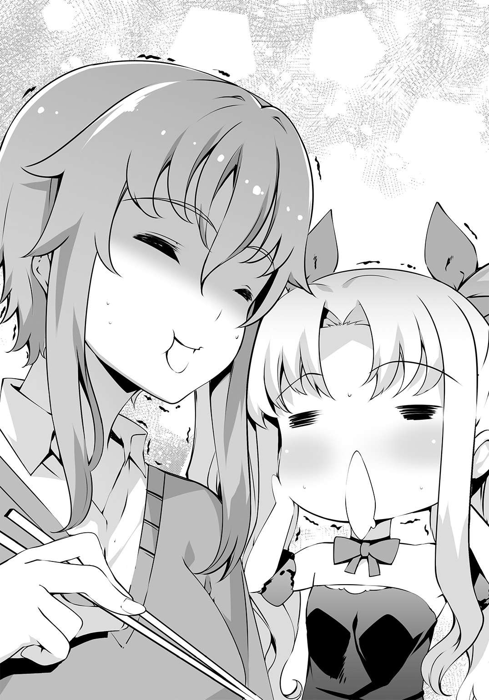
◆ ◆ ◆
朦朧とする意識の中、はしが空を切りました。
「......なくなった」
床の上に転がったボクはビクンビクンと痙攣していました。
アシャさんの作った煮物は完食。合間に食べていたスズ姉さんの煮物も完食。浴びるように食べた白米も完食。
ギンちゃんはもう動きません。
中身のない器の上ではしを動かし続けているスズ姉さんに意識はないけど、その顔から微笑は消えていませんでした。
「......すまない。ありがとう」
床に突っ伏したままでアシャさんは言いました。
その言葉を聞いたのを最後にボクの意識は......途絶......
第八章 転校生......いったい何者なんだ
目が醒めると部屋が暗い。
「うぅ......」
頭はぼんやりとしているけど、昨日のことは憶えていました。
アシャさんが作った煮物を必死に食べて、そのまま気絶......眠ってしまった。そのはずが、ボクは布団にくるまっていました。
洗濯機が回る音がしました。それに、パンの焼けるイイ匂いも。
「起きたか」
汚れひとつない純白のワンピース姿にエプロンを巻いたアシャさんがいました。
例によってエプロン、ボクのです。なんだかちょっとドキドキする......。
「朝ごはんができたら起こそうと思っていた」
「もしかして、洗濯もしてくれたんですか？ 布団まで敷いてもらって......」
「なに。我は汝らが言うところの神。最も回復が早かったからな」
神様の顔はちょっと稀に見るぐらい申し訳なさそうでした。
「......本当にすまなかった」
「い、いえ......」
「償いというわけではないが、朝ご飯はうっかりしていないはずだ。トーストに、スクランブルエッグ、シンプルなものにしてみた。昨日に引き続き、消費期限の近い卵を使った」
「さすがの気遣いですね」
カーテンが開いていないのも、気を遣ってくれたんだと思います。
そう思いながら、白いワンピースにエプロン姿のアシャさんを見ると......昨日の同棲の話もあって、なんだか照れます。
布団を押入れにしまうと、神がかった気遣いに感謝しながら、自分でカーテンを開けました。
赤いサイドテールと、どこかネコ科の雰囲気がする強気で悪戯っぽい顔立ち。
パティさんと、真正面からものすごく目が合って、そのまま硬直しました。
ボクの住んでるアパートの隣にはマンションがあります。五階建てのマンションなので、こっちはちょっと日当たりが悪くなってる......というのはおいといて。
隣のマンションの二階で、カーテンを開けたまま、パティさんも固まっていました。
パジャマ代わりなのか、タンクトップに生地の薄いショートパンツ。白い肌がやけに目に入ってしまって、見てはいけないものを見てしまっている気分になってますけど、動けません。
それに......いつもと違って、眼鏡をかけています。やけに新鮮。
「お、おはようございます」「グ、グッドモーニングデス」
「え、えっと......目、悪かったんですね？」
「イ、イエス......ノー!? 昔は悪かったデスけど、今はイイデス。パティ、コンパウンドデスから。でも、家だとかけてるのが落ち着くので......。帰ったらまず靴下を脱ぐ感覚デス！」
「あ、わかります！ ......家？ じゃあ、もしかして、引っ越してきたんですか？」
「そのとおりデス。あとで挨拶に行こうと思ってたんデスけど......」
ベタ過ぎてビックリしてしまった。
「挨拶に来るけど、やっぱりボクを殺す気なんですよね？」
「ウェルウェル。パティはそう簡単に諦める子じゃないんデスヨ。ベルなんかに先をこされるわけにはいかないデスからネ」
「できれば諦めてほしいんですけど......」
言ってると、インターホンが鳴りました。
時刻はまだ朝の七時。この流れ、なんだかものすごく嫌な予感がします。
「何者だ」
アシャさんが普通にドアを開けて出ちゃった。
「おはよう。ショーくん」
朝の日の光を背に立つのは三角の帽子をかぶって、マントを羽織った着物姿の女の子......言うまでもないというか、やっぱりというか、ベルタさんでした。
「なんで神おるねん」
「管理人の許しを得て、同棲しているまでだ」
「お前!? 同棲って......!? 相手、神やぞ!? やらしいな!! なんてことするねん!?」
「だから、アシャさんもベルタさんも顔赤くしないでください！ そういう意味じゃないですよ！ 護ってもらってるんですよ！」
「そのとおりだ。同棲という言葉だけで、その反応。天則によれば汝、フフ......淫猥か」
「ちゃうわ!? それ言うたら、お前やろ!? 天則か何か知らんけど、ただの耳年増やないか！」
「フ......。恥じることはない。人の子よ」
そう言ってるアシャさんのほっぺたもたいがい赤いです。
「うっさいな、神。お前が同棲とかそんな言い方するから......ん？」
ベルタさんはボクのほう......というか、その向こうのパティさんを見て、目を眇めます。
「おるのん、神だけちゃうんか......。お邪魔するで」
溜息をつくと草履を脱いで、ベルタさんが部屋に上がりました。
「えっと......ベルタさんもやっぱり引っ越してきた流れですよね」
「うん。今日から隣や。よろしく頼むで」
「隣!? 確かに空き部屋でしたけど」
「運がよかったわ。こんなこともあろうかと、手続き自体は一ヵ月前からしといたしな」
「用意周到過ぎる......」
「それにしてもや......」
ベランダ越しにベルタさんとパティさんは早くも激しい火花を散らせていました。
「隣のマンションに越してくるとか、行き当たりばったりか。パト」
「お隣に引っ越すとか、ベタベタデスネ！ ベル」
「自分がベタやないとでも言うつもりか。ていうか、お前、眼鏡してたんか」
「そっちこそ、パティの真似してないと言うつもりデスか？ パクってソーリーって言っていいんデスヨ。あと、眼鏡の話はもうショーとしマシタ」
「だから、一ヵ月前から準備してた言うてるやろ」
「そのわりに動くのが遅かったじゃないデスか。ふふん。苦しい言い訳デスネ」
「お前......」「戦りマスか」
ベルタさんが杖を構えて、パティさんが背後の空間から現れた重力剣を装着します。
「あの、すいません」
「ん？」「ワッツ？」
「ボクを殺そうと争うのを止めることができないのはわかってるんですけど......」
「我の出番だな」
アシャさんは一生懸命屈伸してくれていました。
「そういうわけじゃなくて、ですね。すごく申し訳ないし、ベルタさんにもパティさんにも呪われている都合はあると思うんですけど、今日、学校があって、もう朝ご飯食べないといけないので、今は帰ってもらえないですか？」
「た、確かにお邪魔デシタネ......。ソーリー......」「お前、冷静やな」
「冷静というか、意味なく休むわけにはいかないですし......」
「マジメやな」
あと、ちょっと慣れてきてしまってる自分に気づいてしまいました。
「確かに......今はまだ挨拶に来ただけやしな。あ、これ、挨拶に持ってきたタオルのセットなんで、よかったら使ってな」
「明日をも知れない我が身なんだけど、ありがとうございます」
丁寧に包装された包みから、ベルタさんの几帳面な性格が窺い知れます。
「ガッデム！ あんなの準備してないデス」
頭を抱えたパティさんに、ベルタさんが「アホめ」と、冷笑を投げかけていました。
「ま、今やなくてええ。帰るわ。邪魔したな」
「あ、それじゃパティも......ノーッ!? ベーコンエッグ焦げてマス!?」
ベルタさんが手を振って出て行って、パティさんが大急ぎで部屋に戻りました。確かに少し焦げたような臭いがお隣のマンションからしてきます。
「えっと......。それじゃ、とりあえず、朝ご飯いただきます」
「そう言うと思って、既にコーヒーも淹れておいた」
「屈伸しながら!? すごい！ 神様！」
今朝のアシャさんは天則司りし完璧さでした。
◆ ◆ ◆
教科書で重い鞄を肩にかけて、ボクは一人、通学路を歩いていました。
初夏の日差しが暑いし、まぶしい。汗をかくと眼鏡がずれてきます。
半袖のワイシャツにスラックスの領武高校の制服だけど、そろそろこれでも暑くなってきました。暑い......。
「はぁ......」と思わず息をついてしまいます。
でも、なんとなくホッとしてもいました。
昨日の夜から本当に色々ありました。今から考えると、夢なんじゃないかって思うけど、さっきアシャさんが作ってくれた朝ご飯を食べちゃって満腹なので、夢じゃないようです。
なんとなくひと段落ついた。そんな気分になっていました。
今日はまだ始まったばかりで、そもそも本当は何も解決してないんだけど。
「おはよう。晶くん」
「スズ姉さん。おはよう」
ミディアムショートの髪を揺らして、小走りにやって来るスズ姉さんは制服姿。
スカートを翻すスズ姉さんは、白い半袖ブラウスの上にノースリーブのスクールベストを着ています。襟元を飾る緑色のリボンがすごくよく似合っていました。
スズ姉さんはボクと同じ領武高校に通っていて、ひとつ上の三年生。受験勉強が大変なんだろうなーと、昨日、居眠りしていた姿を思い出しました。
「昨日はたいへんだったですね。ゴメンなさい。アシャさんが......」
「ううん。すごく貴重な経験だったわ。気絶してたわたしとギンちゃんを、アシャちゃんが家まで運んでくれたのよ。力強くてイイ子ね」
「そうですね」
さすがは神様。アフターケアが万全です。
「それで、晶くん。アシャちゃんとの仲。お姉ちゃん、応援はやぶさかじゃないからね。なんでも相談してね！」
「え、えっと......だから、昨日から勘違いがあるんですけど、ボクとアシャさんはそういう感じの関係じゃ......」
「でも、朝のお掃除で部屋の前を通った時、とてもイイ匂いがしたわ。あ！ これ、お姉ちゃん、プライバシーの侵害かしら」
「いや、そんなことは......。イイ匂いがしたなら、多分、それはアシャさんが朝ご飯を作ってくれたからです。とてもおいしかった。そうそう。うっかりしなければ、アシャさん本当は料理得意なんです」
「それは立ち振る舞いを見ればわかるわ。お姉ちゃん、感銘を受けたぐらいで」
「世話になっているのだ。我にとって朝食を作ることは、天則により必然」
「そんな。お世話になっているのはボクのほうで......って、アシャさん!?」
さも当然のように、アシャさんがそこにいました。
「なんでここに......制服着てる!?」
それはもう見間違えるわけもない、領武高校の制服。
スクールベストは着ていないけど、スズ姉さんと同じ半袖のブラウス。
ハイソックスをはいた長い脚が、スカートからすらりと伸びています。
身長も身体つきも......つまりはプロポーションが天則司りし完璧なアシャさんが、天則司りし完璧に着こなした制服姿は、ボクと同じ高校のものとは思えません。金色の髪を煌めかせた姿は雑誌の表紙を飾っているモデルさんよりも綺麗でした。
リボンの色が赤色なのは、これで学年を表しているからで......二年生だ！ ボクと同じ学年のつもりなんだ、この神様！
「そういえば、アシャさん、ちょっと前に転校してきていたんだったわね」
当たり前のことみたいにスズ姉さんが言いました。
昨日までアシャさんのことを知るはずもなかったのに......。
「......アシャさん、何かしたんですか？」
思わず耳打ち。
「天則を司りし我が力を用いた。それはすなわち、天則の改竄。現実を書き換えた。ゆえに我の転校は既成の事実となった」
「うーん。それは......うーん」
つまりはスズ姉さんの記憶を書き換えたってこと......。
「汝の懸念は理解できる。我もまたこの力を不必要に振るう真似も、天則を乱すようなことも極力避けたい。だから、この件に関してはこれ以上の行為はしない」
アシャさんは真剣な顔をしていました。
「......そうですよね。ゴメンなさい。アシャさんがボクを護るためにこうして、傍に来てくれたことがわかっているのに」
「すまない。今日こそは全身全霊、この命を尽くし、汝を護り抜こう......。なお、八乙女アシャと呼ぶがいい。昨日、設定したとおりだ」
「設定......」
「うふふ。仲良し......」
「ち、違うんです！ 本当に！」
内緒話でずっとくっついてたことに気づいて、途端に恥ずかしくなりました。
「照れてる、晶くん。かわいいわよ」
「かわいいとか......困ります」
男なんで、その評価はちょっと......。
「そういえば、晶くん。転校生といえばね。今日、また二人も来るそうよ」
「転校生!?」「それも二人、か」
ボクとアシャさんは顔を見合わせました。
「なるほど。天則司りし我にはわかる」
ボクもわかります。
これはもう......ベタベタで間違いない。
◆ ◆ ◆
「パ、パトリシア・Ｓ・レグルスデス。アメリカから来ましたけど、日本語イケマス！ よ、よろしくネ！」
黒板を背に立つパティさんは照れてるのか、顔を真っ赤にして深々と頭を下げました。
ブラウスの上にパーカーを着たラフな姿。短めのスカート。オーバーニーソックスがよく似合ってる気がします。
それにもう一人。
「服部大火です。え、えっと、年上に見られることが多いのですが、同い年です。十七歳です。本当です。よろしくお願いします」
「......大火さん来ちゃった!?」
思わず声を上げそうになったのは無理矢理抑えました。
すごく恥ずかしそうに目を伏せた大火さん。
普通にブラウスとスカート姿だけど、襟元はしっかりと締めていて、スカートは標準より少し長い。それに黒いストッキングをはいていました。
委員長とか優等生な印象なんですが、それ以上に大人っぽ過ぎるというか、実際、大人です。
それから何をどうしたのか、いつの間にか空いていたボクの左右の席に、パティさんと大火さんが座りました。挟まれてしまった......。
ちなみに、アシャさんはボクの後ろの席で驚愕していました。
「転校生は服部大火だと......バカな」
「天則司りし叡智とかどうしたんですか？」
「ベタベタだと思ったので、特に天則を確かめようとはしなかったのだ。あるいは......二十歳であるにもかかわらず、女子高生として素知らぬ顔で転入してくるという行為は天則すら凌駕するのか......。そんなバカな」
天則、案外幅が狭い。
「フフフ......。これでいつでも狙うことができマスネ」
隣に座ったパティさんが不敵に唇の端を上げます。
「他の人に迷惑をかけないでもらえると嬉しいです」
「それは......イエス。もちろん考慮しマス。パティはあの魔女みたいな姑息な悪の権化じゃないデスから。それにしても......フフ、ウフフ」
ニヤニヤが抑えられないらしいパティさん。
「出し抜きマシタヨ。ファッキンビッチめ」
「あの......。菊月様」
「どうしたんですか？ 大火さん」
「違うんです。これは趣味ではないんです」
女子高生の制服姿の大火さんは耳まで真っ赤でした。
「わ、わかります。指令なんですよね。パティさんとかアシャさんを監視するのに、近くにいるのが都合いいからとか」
「そうです！ そうなんです！ よかった。理解していただけてよかった......」
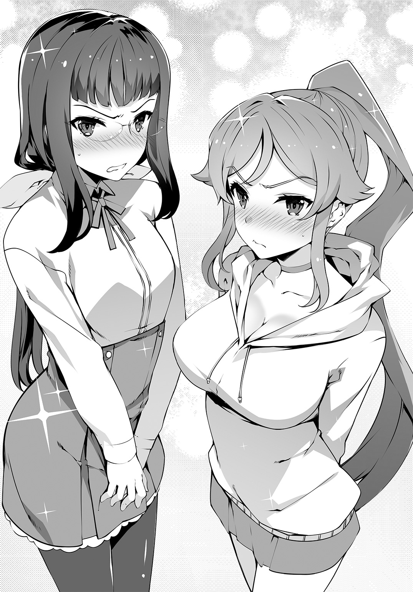
よく見れば大火さんの眼鏡の奥の目はちょっと潤んでいました。
「私......。十七歳に見えますか」
「えっと......」
二十歳......。
社会人って大変そう......。
「やはり若干無理がある......。そう思われているのですね......」
「そ、そんなことはないです。少し大人っぽいですけど」
大人っぽい女子高生なんてどこにでもいるはずだし。
「......十代と二十代には大きな隔たりが......」
「いや、大人っぽいってだけで......」
「いいのです。これは私の仕事です。割り切る覚悟はとうにできています。大丈夫です。微力ながら、私にできる限りの範囲で、菊月様のお役に立ちます」
「は、はい......。よろしくお願いします」
なんだか......すごく申し訳なかった。
ふと、視線を感じました。
パティさんがじっとボクを見ています。もしかして、さっきからずっと？
「フフ......。やっとこっちを向いてくれマシタネ。話の途中で寂しかったデスヨ。噓デス。そんなことはないデス」
「あ、ゴメンなさい」
「昼休み......。楽しみデスネ」
白い歯を見せるパティさんの表情にゾクリとしたものを感じました。殺気......？
「案ずるな。主よ」
振り向けばアシャさんは腕を組んでいます。
窓から差し込む日の光に金色の髪を煌めかせて、自信にあふれる表情でボクとパティさんを見ていました。
「機械混じりの人の子よ。我を前にして思惑通りにいくとでも？」
「おもしろくなりそうデスネ」
二人の視線がぶつかり合いました。
◆ ◆ ◆
そして、昼休みの屋上。
アシャさんは負けていました。
「くっ......。武器さえあれば」
荒い息を吐くアシャさんが握りしめるのはフライ返し。料理する時にあるとすごく便利なフライ返しです。
「何故だ......。何故、我が剣《天則司りしワヒシュタ》と間違えて、こんなものを持ってきてしまったんだ......！」
「しかたないですよ！ だって、呪いなんですから！ うっかりはしかたないですよ！」
「くうぅ......。翼と間違えて、鍋つかみを持ってきているとは......」
「うっかりだってわかってますけど、そっちはなんで間違えちゃったんですか......。というか、剣も鎧も翼もどこからか出せるものじゃないんですか？」
「そのとおり。《天則司りしワヒシュタ》をはじめ、我が武具と翼は天則を司りし力を具現化したもの。ゆえに、その力は天則を自在に操る万能無限の力。さらには自在に顕現させることが可能だ。だが......昨日の夜、汝が寝ている間に洗って、ベランダに陰干ししたままだった」
「あの剣と鎧って、陰干しできるんですか!? というか、翼も取り外しできるんですか!?」
「たとえ、出現させるたびに、別のものとなっていたとしても、できれば綺麗にしてやりたい......。同じ服を洗濯もせず、二日続けて着るのは恥ずかしい。そうだろ？」
「......はい」
「だが、何故、我はフライ返しを剣だと思ってしまったのだ......」
「ええっと......。今日もいたたまれない感じなんデスが」
パティさんが装着していた機関砲とか、ミサイルが歪んだ空間の向こうに消えていきます。
「とりあえず、今のアシャは常人に毛が生えたぐらいの、この力が精いっぱいなんデスネ？」
「神ですよね!? アシャさん、神ですよね!? 剣のひとつなくても」
「だがその力の九割九分......いや、それ以上が《天則司りしワヒシュタ》として、我から分離している。ゆえにあの剣を持たない我は無力......」
「あ！ だから、昨日、肉離れしてた時に、剣を弾き飛ばされただけで無力化されたんですね」
「そのとおり。そして、天則司りし我が力は主の部屋のベランダでポカポカと日光を浴びているというわけだ。バカか!? 我はバカか!? くっ！ 殺せ。我から殺せ！ このバカから......」
「ど、どうしよう......」
「どうしマショ......」
勝ってるはずのパティさんのほうがなんだか気まずそうでした。
「でもデスネ。あの魔女がいない今がチャンスなんデス！ 大丈夫デスヨ。痛くしないデスから。ノーフィアー！ ノーペイン！」
パティさんが重力剣を生む籠手を装着します。
「で、でも......ボクを殺さなくても何か方法があると思うんです。だって、パティさん、うっかり食べ過ぎなければいいだけじゃないですか」
「確かにそうデス......でも」
パティさんの眼差しは悲しげでした。
「ファック！ 見てくだサイ。戦闘中なのに、パティ、自分でも気づかないうちに、スニッカーズ食べてマシタ」
「ほんとだ!? なんで重力剣とスニッカーズの二刀流になってるんですか!? 食べるの、今じゃなくていいじゃないですか！」
「そのとおりデス！ 普通、戦闘中に食べマセン！ いくら楽勝だったとしても！」
「楽勝......。くっ！」
「オー！ ソーリー！ 傷つけるつもりは......。とにかく、戦闘中に甘いものムシャムシャしようなんて思わないんデス！ なのに、パティはやっちゃうんデス！ こんなの太るに決まってるじゃないデスかー！ 体重計が怖くて、乗ることもできないんデスヨ!!」
「待って！ パティさん、落ち着いて......。大火さん！ なんとか言って......」
大火さんは物陰から見ていました。でも、申し訳なさそうな顔で首を横に振ります。
「すいません。私は止めることはできません」
「ですよね。しかたないです......」
「だから、もう覚悟が鈍らないうちに殺りマス！ 死して屍拾う者ナシ！ ニンジャ！ ハガクレ！ ヤギューシンカゲリュー!!」
「その、屍、ボクのものなんですけど！」
「ニンジャは非情!! 天翔龍閃!!」
「それ、ニンジャ関係ないですよね!?」
パティさんの姿が消えた。
抜刀術でもなんでもないだろうけど、速過ぎて、ボクには視認することもできていない!?
「我が......！」
アシャさんはボクをかばおうとしながら、足をもつれさせて倒れて、顔をコンクリートにぶつけて......アシャさんっ!?
その次の瞬間、眼前を埋め尽くす炎の柱！
「うわっ!? 危ないデスね!?」
飛び退きながら、パティさんが言います。
「待てや。パト」
「ファッキンビッチ!! パトじゃないって言ってるじゃないデスか！」
言うまでもなく、炎はベルタさんの攻撃。
「なんデスか？ その恰好」
「作務衣やけど？」
魔女姿じゃなくて、半袖半ズボンという感じの古式ゆかしい作務衣。
ほっそりとした手足が際立つ感じがする服装ですけど、手にはあの大きな杖《ヘルメス》を握っていて、すごくアンバランス。杖からは音を立てて蒸気が噴き出しています。
「お前、わたしがこの学校におらん思たんか」
「いるならしょうがありマセンネ......機関砲」
パティさんの周囲からせり出してくるいくつもの機関砲。
「アホ」
言い捨てると、ベルタさんは杖を担いで背を向けました。
「逃げるんデスか!?」
「だから、アホ。ここでわたしとお前が本気で戦り合ったら、どうなる思てるねん」
「あ......」
「極力、フォローはしますが、できれば人口密集地での戦闘は避けてください。お願いします」
大火さんは通信機でどこかに連絡をとっていました。
ボクも頷きます。
「殺すなら......我からだ」
息も絶え絶えで、アシャさん。
「まさか今ここでは戦らんよな？ 《デトロイト事件の英雄》」
「......もちろんデス」
パティさんは吐息すると、武器を空間の向こうに戻してくれました。
「手間取らせんなや。わたしはまだ用事あるねん」
言い残して、銀色の髪を揺らしながら、作務衣姿のベルタさんは屋上から去って行きます。
それを見送って、ボクたちは......パティさんや大火さんを含めて、顔を見合わせました。
「ベルタさん、どこにいたんでしょうか？ 学校にはいるみたいな口ぶりでしたけど」
「わかりマセン......。何を企んでいるのか......」
「我は......なんと情けない......陰干しなど......」
「私も情報が必要です。調査の必要性を感じます」
アシャさんの背中を撫でながら、ボクは頷きました。
第九章 現代の魔法使い
アシャさんと大火さん、パティさんと一緒に、ボクはベルタさんの後をつけていました。
「できる限り、距離をとります」
指示を出してくれる大火さん。さすがはニンジャ......もとい、特殊な訓練を受けている人。
おかげで、かなり距離を空けながらも、ボクたちはベルタさんを見失わずに済みました。
「なんだかずいぶん大回りというか......校舎をグルッと回っていマスネ。ハットリ。万が一、はぐれた時のために、五色米をください」
「昔の忍が連絡用に用いたとされる染色した米ですね。しかし、現代は現代に適応した代用品......例えば、特殊なライトにのみ反応する染料などもありますので、ほぼ用いられていません」
「なるほど。その染料を用いた上で、暗号を併用するとか？」
「そうですね。パトリシア様のおっしゃるとおりです」
「それが現代、そして、都市に適応したニンジャの姿なんですね。勉強になります」
途端に日本語が流暢になっているパティさんですが、多分、天則によれば好きこそものの上手なれとか、そういうのだと思います。
ようやくベルタさんが足を止めたのは、もう昼休みも半分以上過ぎてしまってる時間。
そこはグラウンドの外れでした。ボクたちは近くにある体育倉庫の陰に、身体を重ねるようにしながら、ベルタさんを見張っていました。
アシャさんがすごく密着してる。吐息と一緒に、体温というか、ちょっと柔らかな感触というか......恥ずかしい......。
「あいつ、ここに何の用なんデスか？」
「ゴミの保管所ですね」
大火さんが眼鏡の奥の目を細めました。
週に何日かのゴミ収集の日まで、校内のゴミをまとめておくための小さな建物です。
よく見れば、ベルタさんの両手にはゴミがいっぱいに詰まったビニール袋。
「なかなか憶えがいいじゃねえか」
初老の男の人――校務員のおじさんがベルタさんに笑いかけながら、ゴミを受け取って保管所に放り込んでいます。
「自分で言うけど、記憶力はいいほうやねん」
「自分で言うか！ こいつはいい」
おじさんがベルタさんの頭を撫でました。
「......あかんで。セクハラやで。あと、ゴミ触った手は洗ってからがよかったな」
「おっと。おっちゃん、訴えられるのか？」
「するわけないやろ。世話なっとる。でも、手は洗えって言うけどな」
「参ったな。若い子は細かいぜ」
「食中毒とかの防止にもなる。損はないで」
「そうだな。おっちゃんも心がけるか。さて。次はフェンスの修理だ。朝から忙しかったけど、体力残ってるか？」
「今さら何言うてるねん。余裕や。あと、フェンスって、野球部が使ってるとこのフェンスか？」
「そうそう。よく見てるな」
「そこやったら、もう直しといたで」
「よく見てるどころじゃないな！ 気が回り過ぎだろ！」
「細かいこと気にするほうやねん」
「いやぁ......。おっちゃんの仕事、また減ったなぁ。それじゃ、昼休みにするか」
「そうやな。残ってる仕事のバランス見ても、頃合いやろ。でも......」
ベルタさんがこっちに目を向けました。
「昼休みやってや。もう出てきていいで」
「気づかれてる!?」
観念して出ていくしかない......と思ったら、ボクたちが隠れていたのと別の場所、木の陰とか、用具入れのほうから生徒たちが出てきました。
リボンの色は赤も緑も、一年生を表す青色の女の子もいます。
十人ぐらいの生徒がベルタさんに駆け寄りました。
「ベルタさん！ 昨日はありがとうございました！」
「ええって、ええって。おっちゃん。すまんな。わたし、ちょっとだけこの子らと話あるから......。昼休み終わるぐらいには行くわ」
「はいはい。あーあー。ベルタちゃん取られたな。校務員室で、お茶でも淹れとくぜ」
苦笑しながら校務員のおじさんは去っていきます。
「ベルタさん。相談があるんです。わたし、友達に嫌われちゃったかもしれなくて......どうしたらいいかわからなくて......」
「なんや。いきなり重いな。嫌われてるかどうか、ちゃんと話はしてみたんか？」
「いえ、その......怖くて」
「なるほど。まあ、不安はわかるで。でもな......誤解やったら、ちゃんと話さんと解けへん。ほんまに嫌われてて、仲直りしようとするんやったら、やっぱり話さんとできへん」
「でも......」
ベルタさんはその子の手を握って、背伸びして顔に唇を近づけます。
「勇気を振り絞るんや。それとも、お前の友達への想いは、それができへん程度のものなんか？ それやったら、最初からやめといてもかまわんやろ」
「ベルタさん......」
女の子は少し頰を赤くして、ベルタさんの手を握り返して、頷きました。
「そうですね！ わたし、がんばります！ 後悔したくないですから！」
「ええ子や。がんばり。不安やったら、わたしもついていったるからな」
ベルタさんは背伸びすると、自分より身長の高いその子の背中をポンポンと叩きます。
「ベルタちゃん。昨日送ってくれたスタンプ、かわいかったよ！ あんなのよく見つけたよね」
「やろ！ かわいいやろ！ あのオッサンのやつ！ わたしも、これ使えるわ！ 思うてん」
「ベルタさんが教えてくれたチーズケーキのお店行ったよ。とってもおいしかった！」
「頭のよさと舌には自信あるからな。そうや。あそこ気に入ったんやったら、この店もええよ」
女の子たちに見せたのは、どこからか取り出したタブレット。
大人気......!? 入れ替わり立ち替わり、女の子が話しかけてます。
「なんやなんや。もう昼休みも終わりやで？」
それを見守るパティさんが何故かプルプルと身体を震わせていました。
「ファッキンシット......！ あいつ、魔女のくせにアイリスとかやってるんデスか......。しかも、タブレット使ってるとか、魔女の風上にもおけないやつデスネ......」
「魔女がタブレット使っちゃいけないとか、そういうのはないと思いますけど......。でも、ボクもなんかビックリしてます」
「なるほど。どうやら校務員として入り込んでいるようですね。しかし、《武塔》が入国はおろか、この行動をつかめていないとは......。不甲斐ない」
大火さんの眉根に皺が寄ります。
「......それにしても、自然に溶け込んでいます。私は必死で高校生のようなトークを心掛けたというのに......。二十歳なのに、高校生のような......十七歳のような......」
「......サノバビッチ」
パティさんは拳を握りしめました。
「魔法デスヨ。アレは。パティにはわかりマス。あと、チーズケーキも気になりマス」
「魔法って、どういうことですか？」
「ベルの奴は魔法を使って、あの子たちを誑かしているんデスヨ！ でなければ、昨日今日来て、すぐに仲良くなったりできるわけありマセン！ 人の心をもてあそぶ外道......！ マザーファッカー！ あの子たちをどうするつもりデスか!? ボクと契約して魔法少女になってよ、みたいなことする気デスか!? 魔女!!」
「パトリシア様。色々な意味で落ち着いてください。あれは......」
「おっと。みんな、そろそろ教室戻らんと、昼休み終わるで。今日はここまでな」
女の子たちは残念そうにしながらも、素直に教室に戻っていきました。
その子たちに大きく手を振って見送るベルタさん。
そして、もう一度こっちを見ました。
「あ......」
「さすがに気づいとるで。パトの腹がはみ出てたし」
「ブルシット!? パティ、まだそこまで太ってないデスヨ......!?」
ブラウスの上からお腹をさすりました。
「噓やけどな」
言いながら、ベルタさんはボクたちのほうへやって来ます。
もうしかたないから、ボクたちもゾロゾロと物陰から姿を現しました。
......気まずい。
「ファッキンシット!! 今日という今日は絶対許せマセン!! この魔女！ 魔女ってもう濁ってるんデショ!?」
「ああ。魔女や。昨日会ったばかりのお前がわたしの何を許せへんねん。あと、だから、アニメの魔女とかの話すんな」
「すいません。盗み見てしまっていて......」
「ショーくんにはわたしを警戒する権利がある。アホのパトと違って」
「誰がアホデスか!? マザーファッカー！ あの子たちを魔法で操って、いったい何をどうするつもりなんデスか！ 弄んだ末にマミるんですか!? わけがわかんないヨ!!」
「お前がわけわからんわ。魔法で？ わたしが？」
首を傾げるベルタさん。
「昨日今日、ここに来たベルが、あんなにいっぱいの女の子とお近づきになるなんて、どう考えても、魔法とかで操ってるからに決まってるじゃないデスか！ あの子たちを巻き込んで、ショーを殺すつもりとか、そんなんだったりするんデスネ！ アスホール！」
「あー。なるほど。なるほどなぁ。そういうことな」
ベルタさんは頷きました。
「......パト。お前はだいたい全部間違っとる。まず昨日今日ってとこからな」
「え？」
「事実です。先程、《武塔》で確認したところ、ベルタ様は半月ほど前に、正規の手段でこの学校の校務員募集に応募して、採用されていました」
「年齢とかは噓ついたし、入る時にはちょっとだけ魔法使ったし、わたしの噂がショーくんに届かんようにだいぶ気は遣ったけどな。それ以外、人の心を操るような魔法も薬も使ってへん。ここに入り込めんかった時の、ショーくんに近い立ち位置の候補は他にも八通り考えてたしな」
「で、でも......」
「逆に訊くで、パト。お前は目的のためやったら、人の心簡単に操るんか？」
「え、あの......」
「友達にそういうことするんか？ って訊いてるねん。答えろや、パト」
いつもどおりに見えたけど、ベルタさんは少し怒ってる。
「し、しマセン......。いえ！ しないから、ベルがそういうことをしたんじゃないかって思ってデスネ！ それで......」
「それやったら、わかるやんな？ 友達の心操ってるんちゃうかって、疑われたら、どんな気分か。お前はそういうの言われても怒らへんぐらい寛大なやつなんか？ なあ、どうなんや？」
「え、あ......。ち、違うって、ことデスヨネ......」
ベルタさんがジロリと睨みつけました。
「違うんデスネ！ ソーリー！ パティが間違ってマシタ！ ベリーソーリー......」
「わかればいいねん」
それでもまだ憮然とした表情のベルタさん。
「それじゃ、おっちゃん待たせてるからな。お前らもそろそろ授業やろ。ちゃんと教室戻りや」
言い残して、去って行きます。
「魔女だけど、すごくまっとうな人なんですね......」
「確かに、ここまでも他人に大きな迷惑をかけるような真似はしていなかったな」
アシャさんも感心していました。
「あ、でも、ショーくんを隙あれば殺すつもりなんは変わらへんからな。恨まれてもしゃーないって思っとる」
ベルタさんは振り向いて言いました。
「そんな思い出したように言われても......。そこは変わらないんですね」
「まあ、しゃーない」
すごく常識的で友情にも厚い魔女さんはヒラヒラと手を振りました。
第十章 英雄は独り
「ビックリするほど何事もないですね」
「そのようだな」
別の日のお昼休み。
ボクとアシャさんは顔を見合わせていました。
パティさんと大火さんが転校してきて、ベルタさんが校務員だってわかった日から三日が過ぎているけど、不思議なほど何もありませんでした。
「あれほど言ってたのに、殺しにこないなんて......」
「あの二人は使う技術こそ違うが、互いの実力は拮抗している。最初の戦いで、まともにぶつかればどうなるのか......それを思い知ったのだろう」
「確かにそうですね。その上、アシャさんがいつも一緒にいてくれるから、隙を突くこともできないですし」
「我が......いるからか」
フ......と、アシャさんは自嘲的に笑いました。
「いざという時にうっかりする。こける。頭をぶつける。落ちる。《天則司りしワヒシュタ》を忘れる。お風呂は張っても、ガスをつけ忘れていて水風呂。三時間をかけて牛スジがトロトロのカレーを作ったが、ご飯を炊くのを忘れていたこの我が......。しょうもない呪いに侵されし、しょうもない我が......」
すごい気にしてた。しかも、この三日で積み重なってた。
「それはもう呪いだからしょうがないですよ。実際、パティさんもベルタさんも襲ってこないのは、やっぱりアシャさんが隙を作らないようにしてくれてるからだと思いますし」
「そう......か」
まだアシャさんの表情は曇っています。
太陽のようだった自信に満ちた表情が時々、見る影もなくなってしまって、すごく申し訳ない。全部、しょうもない呪いのせいなのに......。
「あ、そうだ。アシャさん、一度、学食行ってみたいって言ってましたよね」
「ああ。天則司りし我には学食の知識はある。だが、汝を守護するために、実際の学食を目にしておきたい。無論、学食のメニューで我の料理に影響を与えることができるだけのものがあればそれを取り込みたいとも思っている」
「天則司っているのに、向上心ありますよね」
「人の形をとり、物質世界の理に捕らわれた以上、もはや我は完璧ではない。だが、完璧に近づくことはできる。成長とは、唯一、物質世界の存在が霊的な位置へ、完璧へ、神へと近づくことができる手段だ。ゆえに我は学食へ行こう」
壮大な決意を胸に教室を出るアシャさん。あと、ボクも。
「そういえば、今日は大火はどうした？ 朝から姿を見ていない」
「あ。メールをもらってます。《武塔》のほうで急用があるので、今日は登校できないって、わざわざ連絡くれました」
「なるほど」
「ベルタさんはやっぱり女の子に人気ですね。今朝も掃除してるところに、女の子がいっぱいついて回ってました」
「あれが現代の魔女の姿ということか......。興味深い」
「そういえば......パティさんはどこにいったんだろ？」
「言われてみれば姿を見ないな。授業中は確かにクラスにいたはずだが」
「隣の席だし、ボクも見間違えるはずないですよね。授業中、すっごい見られてた覚えもありますし。あ......」
そんなことを話してると、パティさんが歩いていくのが見えました。
多分、お弁当というカテゴリーに入るはずの......でも、それにしてはちょっと大き過ぎる包みを手に、トイレに行こうとしています。
目が合うと気まずそうに視線を逸らしました。
そのまま逃げるようにトイレに......
「パティさん！ ちょっと待ってください！」
「ワ、ワッツ!?」
思わず手を握って止めてしまったので、慌てて離します。
申し訳なくて恥ずかしくて柔らかくて温かくて、これが女の子の掌って感じで......
「あ、いや、ゴメンなさい......」
「いや、いいデスけど......。なんデス？」
それでも視線を合わそうとしてくれません。
ほんのりと漂ってくるケチャップっぽい匂いはやっぱりお弁当のもの。
なにせ、授業中もちょっと香っていて、お昼前の胃袋に悪かったので。
「すっごく失礼なこと訊いてしまうんですけど......」
「できればやめてほしいんデスけど......」
「考えてみれば、この三日間。パティさんが教室で誰かと一緒にお昼食べているところ見たことがないんです」
というか、思い返してみると、誰かと話してるところも見たことなくて、ボクに対して執拗に「オン・アニチ・マリシエイ・ソワカ。これが伊賀、甲賀の秘伝にもある摩利支天の真言です」とか「お前を......殺す」って流暢に言ってただけな気もしてきてしまいました。
「その状態でお弁当持って、トイレに入るとか......これって、いわゆる便所飯......」
「ブルシット!? 何言ってるんデスか!? 社交的といえばパティデスヨ！ そんなことあるわけないじゃないデスかー！」
赤いサイドテールを振り乱すほど大慌てでした。
それからやっぱり目を逸らす。
「......べ、別に......。パティは好きでやってることなんデス。これは自分の意思で......その、友達がいないとか、一人で教室とか学食で食べるのが気まずいとか......そんなんじゃないんデス......。ア、アメリカじゃ日常茶飯事なんデスヨ!! 自由の国なんデスヨ!!」
必死な上にちょっと涙目。
「ゴメンなさい......。追い詰めたりする気はなかったんです」「我もすまない」
「謝らないでくだサイ!? アシャは特に関係ないのに！ それに、一人っていうなら、ショーもいつも一人じゃないデスか！ パティたちとしか喋ってるの見たことないデスヨ！」
「......ですよね」
そのとおりでした。
「一年の時には同じクラスの友達がいたんですけど、今はクラス別れちゃって......。向こうは新しいクラスで友達できてるけど、ボクはちょっと失敗しちゃったっぽくて。それに、中学から仲のよかった友達は色々変わっちゃって、変な仲間とつきあってるみたいで......」
新学年が始まって三カ月近く。もう夏なのに......。
「あ、え、えっと。なんかソーリー......デス」
「いえ。ボクこそ、身の程も弁えずに......」
「主よ。主には我がいる。おのれ......汝を案ずる主の想いを踏み躙るとは......」
「パティデスか!? パティが悪いんデスか!?」
「いいんです。本当のことですから。でも......だから、一人だと寂しいかなって思って......。いや、ボクもけっこう寂しいのでその......。一緒にお昼とかって思ったんですけど......すいません。思い上がってました」
「え、あ......!? パティ、声かけてもらってちょっと嬉しいとかデスネ......！ バット！ そんなの思ってなくて......あぅぅぅ......」
恥ずかしそうにモジモジして、取り出したスニッカーズを袋も見ずにモグモグ食べました。
「ファッキンシット！ 一緒でイイデス。一緒にお昼食べマス」
「パティさん！」
「ファック！ パティはキミを殺すつもりデスし！ 懐柔されたりとかしマセンからネ!?」
「それでもいいんです。よかった......」
ボクを殺そうとしている相手でも、女の子をお昼に誘うとか、恋愛とかそういう意味じゃなくてもハードルが高くて、今になってすごくドキドキしてきて、恥ずかしい......。
◆ ◆ ◆
ボクの前にはキツネうどんが、アシャさんの前にはカツカレーがありました。
うどんの甘いだしの匂いとカレーのスパイス、それに食堂全体に満ちた食欲をそそる匂いに、お腹が鳴ってしまいました。
「それじゃ、食べましょうか」
「待て。人の子よ。七味を持ってきておいたが、使うか？」
「ありがとうございます。すっかり忘れてました」
さすがは天則を司りしアシャさんの気づかい。
受け取って七味を振って、割り箸を割ります。
「......傍から見てて、すごく甲斐甲斐しいデスヨネ。新妻デスか？」
「そ、そんな......!? アシャさんに申し訳ないです！」
思わず割り箸を落としそうになりました。
「汝......!? あ、主にはこのような我などより......新妻など、その......」
アシャさんはスプーンを落としてしまいました。
すごく照れているのを見てしまうとこっちが恥ずかしくて、耳まで熱くなります。
「そんなに照れられたら、こっちも恥ずかしいデスヨ......」
「と、とにかく！」と、続けます。
「......今日だけデスよ。こうして慣れ合ってあげるのは」
アシャさんと並んで座ったボクの正面にはパティさん。その前には大き過ぎるお弁当の包みがありました。
「パティは本当に一人に慣れているんデスからネ。孤独なんて怖くないんデス」
「すごいですね。ボクは......けっこう辛いこと多いです。家とかだと、スズ姉さんが相手してくれるので、ホッとするんですけど......。友達ほしい......」
「い、いえ......。別に一人が好きなわけじゃないデスヨ。ただ、どうしても、一人になってしまわざるをえなかっただけでデスネ......」
「......ボク、パティさんのこと全然知らないんですけど。もしかして、サイボーグみたいになってしまった時に、何かあったんですか？」
「ノー。むしろ、友達ができマシタ」
「え？」
「もともと、パティはほとんど友達がいなかったんデス。スクールカーストだと、ナードとか言われるような、そういう立場で......」
ちょっと聞いたことがありました。乱暴にいうと、あっちのスクールカーストで、虐げられる立場のことだったはず。
「それに、人と話すのが得意でもなかったんデス。だから、ナード扱いされてる中でも、友達はいなくて......。でも、むしろ、この身体になって、戦ってるうちに、色々あって何人か友達ができたんデスヨ！ 前は嫌われてた娘とも仲良くなれて！」
パッと、パティさんの顔が輝きました。
「......日本に来たから、今、別れ別れなんデスけど......」
そして、曇りました。
クラスが別になって別れ別れなのとは格が違う......。
「ゴメンなさい」
「いいんデス。望んで、殺しにきたんデスから」
それはできればやめてほしいんですけど。
「ところで、戦ってるうちに友達ができたって......。バタバタして訊いている余裕もなかったんですけど、パティさん。あんな力、どうやって手に入れたんですか？ それに何と戦っていたんですか？」
「ワッツ!? 知らなかったんデスか!?」
「すいません。不勉強で......」
「あ、いえ......。しょうがないデスヨネ。キミは今までそんなことに無縁な生活を送ってきていたんデスから」
「我は知識として、汝を知っている」
「さすがは神デスネ。どこまで知られてるのか、本当に不安になりマス」
「《デトロイト事件の英雄》とか言われてましたよね」
「イエス......」
パティさんは少し考えてから口を開きました。
「昔のパティは、今も話したとおり、友達もできないぐらい引っ込み思案で、口下手で、他よりちょっと成績がいいぐらいしか取り柄のない......。それに、見た目も......うぅ......」
「げ、元気出してください！ そんな感じだなんて、ボク、全然思わなかったですから」
「そうデスか？ 勇気を振り絞ってイメチェンした甲斐がありマス......！ 手伝ってくれたナタリーに感謝デス！」
落ち着かない様子でパーカーの紐を弄るパティさん。
「今の恰好、イメチェンの結果だったんですね」
「実は......。いえ、それはいいんデスヨ」
恥ずかしそうに顔の前で手を振ります。
「本当に突然デシタ。パティはネメアという組織に拉致されたんデス」
「組織？ どんな組織なんですか？」
「一言で表すなら犯罪組織デス。武器の密輸、麻薬の売買、それ以外にも多くの犯罪に関わっていマシタ。パティはその組織に実験体にされたんデス」
「実験って......」
「地球外のものだという技術。彼らがどこで手に入れたのかは、パティも知りマセン。それを用いた実験体のひとつがパティデシタ」
ひとつってことは、パティさん以外にも実験に使われてしまった人がいるんだ......。
「ほとんどの実験は失敗デシタ。でも、パティは奇跡的に適合したんデス。ただ、彼らにとって予定外だったのは、その技術が想定以上のものだったことデス。パティはこの力で、彼らのもとを脱出して、追手を打ち倒して戦い続けて、ついにはネメア自体を崩壊させたんデス」
「波乱万丈だったんですね。ボクにはちょっと想像もつかないです」
すごく大変で辛いことも多かったんじゃないかと思う。
「そうデスネ......。色々ありマシタ」
パティさんは遠い目をしていました。
「その最後の戦いが、デトロイトだったんデス」
「デトロイト事件......ですか？」
「一般にはハリケーンで市街地に大きな被害が出た。そういうことになっていますケドネ」
「そういえば......かなり前にニュースで見た気がします。細かいことは憶えてないですけど」
「アレはパティと、ネメアが送り込んだもう一人のコンパウンドの戦いの結果デス。もっとも、あの娘は暴走してしまっていて、ネメアはその攻撃で壊滅的な打撃を受ける形になっていたんデスけど」
「なんだか......すごいですね」
「すごい？」
「ヒーローみたいです。あ、パティさんにとって、それがすごく大変だったことはわかっていますけど......。でも、たった一人で、そんな敵と戦うなんて」
「人の子としてはなかなかのものだ」
アシャさんはおいしそうにカレーを食べながら頷いていました。
「そ、そうデスか？ そんなこと言っても、パティは別に心を許したりとか、そんな......」
プイと顔を背けます。
「......もしかして、正体を隠してないほうが、アメリカでも大人気になっていたんでしょうか......。そういえば、友達ができたのも正体を知られて......」
ブンブンと首を振って、
「た、他人を巻き込むわけにはいかなかったから、正体をバラしたりしなかったデスし、顔も隠していマシタし、それに、一人でのご飯は慣れてるから全然辛くなんかないんデス！」
それから、また目を伏せて吐息しました。
「......別に誰かと一緒にご飯を食べるのが嫌いってわけじゃないデスけど......。ファック！ よけいなお世話ですよ！ アスホール！」
「食事中にアスホールとか言うのはよせ」
アシャさんはカレーを食べながら真顔。
「あ、う......ソーリー。でも、これはスラングですよ。あの......神なら、天則でスラングわかりマスヨネ？」
「無論、理解できる。だが、本来の意味も理解してしまう。正直......少々食欲を失ってしまった。それにファックと連呼するのも......。本来、性交を表す言葉なわけで、だな......」
「ソーリー......。つい、その、慣れで......」
二人して恥ずかしそうにうつむいてしまいました。
ボクも......その......何と言っていいのか。
「それにだ。話は変わるが、その量はまずいだろ、人の子よ」
ほとんど誤魔化すような感じでアシャさんが指差します。
「ワッツ？ 何がデスか？」
アシャさんが指差したのは、パティさんが手にしたハンバーガーでした。
バンズはボクたちが普通に見かけるものの倍以上あります。
三重に重なった分厚いミートパテが挟まっていて、そこから肉汁混じりのケチャップが、お弁当箱にこぼれ落ちていました。
ケチャップが落ちたのは箱いっぱいに詰められたフライドポテトの上。ポテトの横には山盛りのケチャップとマスタードが用意されていて、さらにはギトギトと油でぬめるフライドチキンまで入っていました。
以上がパティさんのお弁当です。
「よく見たら、アメリカン過ぎる！」
「大丈夫デス。冷めてもおいしいように一工夫してありマス」
肉汁をペロリと舐めて、それから嬉しそうな顔で大きく口を開けて、ハンバーガーをほうばるパティさん。
「冷めても大丈夫......。確かにそれなら安心......じゃなくてですね！ これ、どれだけのカロリーと脂質と炭水化物なんですか」
「ＯＫ、ＯＫ。大丈夫デス。栄養のバランスはとってマス」
「肉」と、分厚く大きな三重ミートパテを指します。
「パン」と、バンズを指します。
「野菜」と、山盛りのポテトとケチャップを指します。
「野菜枠、ほとんど炭水化物の塊ですよ！」
「おっと。緑の草も入ってマスヨ」
胸を張って、ハンバーガーに挟まったレタスを指しました。
「一枚だけじゃないですか！ 油でしなしなになったやつ」
「それでも、イケマス！ だって、このコーラは特保のコーラなんデス！ ハンバーガーでちょっとバランス崩れてても、特保を飲めば、プラスマイナスゼロ......いや、むしろプラスデス！」
「そんな計算式ありませんから！」
「ブルシット!? 特保は飲めば飲むほど健康になりマスヨネ!?」
「天則によればそんな健康はない。ラベルにもたくさん飲めばいいというわけではないと書いてある」
「神のお墨付きデスか!? 本当に書いてマス!? で、でも......このぐらい食べないと、お腹がすいて辛いんデス......」
「太り過ぎると、爆発するんですよね......。地球を巻き込む勢いで」
「ネメアから脱走した技術者の人が言ってたんで、多分、間違いないと思いマス」
いつの間にか半分ぐらい齧ってしまっているハンバーガーを見つめます。
「お腹がすくと、もうしかたないんデス。食べてしまうんデス」
言いながらも、ハンバーガーの残りを食べました。さらにポテトにケチャップとマスタードをたっぷりとつけて食べて、特保のコーラ（２リットル）をグビグビと飲み干します。
「早くキミを殺さないと大変なことになりマス......。パティは呪いに抗うことができないデス」
デザートなのか、やっぱりスニッカーズを齧っていました。
休み時間に食べてるところも見たから、今日、何本目なんだろ......。
「ん？ キミを殺す......？」
スニッカーズをモグモグしながら、パティさんはマジマジとボクの顔を見つめています。
「今、ベルはいマセンネ......」
「あ......。で、でも......」
「そう。我がいる。今日の我は《天則司りしワヒシュタ》を陰干しなどしてはいない」
頼もしい！
「バット、準備運動をする間はないんじゃないデスか？」
「く......。毎回毎回、そう都合よく肉離れが起こると思わないことだ」
「起こらないとは限らないデスヨ」
アシャさんが露骨に顔をしかめます。
「確かに......まずいです」
「全力で、一瞬でやれば、パティ、殺れるんじゃないデスか？ いえ、きっと殺れマス！ 神！ 駆逐してやる!!」
お弁当箱をしまって、パティさんがお尻を浮かせました。
アシャさんが慌てて立ち上がって屈伸するけど、パティさんが仕掛けてきたら、間に合わない!?
「くっ......。大丈夫。我なら大丈夫。準備運動なくても大丈夫」
「アシャさん......」
うめくアシャさんとパティさんが睨み合って......
だけど、パティさんはフッと息を吐きました。
「......今はやめておきマス」
「わかってくれたんですか？」
「ノー。パティはキミを殺す気デス。ただ......一人でいるのを気遣って、ここに連れてきてくれたわけデスしネ」
肩をすくめます。
「今、この時ばかりは、武士の情けというやつデスヨ。人間五十年、下天のうちを比ぶれば、夢幻の如くなり」
それは武士というか、信長で敦盛です。あと、やっぱり流暢です。
ともかく、アシャさんが力を抜いて、ボクもほっと胸を撫で下ろしました。
「あの、パティさん。考えていたことがあるんです」
「ワッツ？ 改まって」
「話し合いたいことがあります。できれば、ベルタさんも加えて、四人で」
「ベルをデスか......？ んー」
眉根に皺を寄せます。
「あと、また、チョコが口元についてます」
「あ。本当デス。しかたないデスネ」
指で撫でて確かめると、新しくスニッカーズの封を切るパティさん。
「え？ なんで新しいの開けたんですか？」
「チョコはけっこうついちゃうんデスヨ。それなら、もうひとつ食べてから、まとめて口を拭けば効率的デス」
「え？」
「え？」
実際、もうひとつ食べてから、ようやくお昼ご飯に満足したような顔で、唇を拭きました。
アメリカ人がよくわかりません。
第十一章 第一回殺害されないにはどうしたらいいの？ 会議
提案にはベルタさんも乗ってくれて、ボクたちは夕方のファーストフードのお店にいました。
入ったのは全国チェーンのドーナツのお店です。コーヒーのお代わりが自由なのが、学生のボクにはありがたい。
「やっぱり、一番の問題はわたしらが本気で戦り合ったら、東京が灰になることやな」
「広域殲滅型の装備を使うとそうデスネ」
「本気で戦っても被害がないのは、ここらへんやと思うけど」
ベルタさんは持参していた小さなホワイトボードに東京を描いていました。特徴をつかんでいるので、シンプルな絵なのに、無茶苦茶うまい。
その南、お台場のあたりに×印をつけました。
「安易過ぎマスネ。重力砲が着弾した時、沿岸に大打撃デス」
「使うなや。重力砲」
「じゃあ、そっちもその変な杖使うのやめてくだサイ」
「日本政府としてはお二人の戦闘自体、やめていただきたいのですが」
夕方から合流した大火さんは真剣な顔をしていました。
「机上のシミュレーションで、パトが完敗するようやったら、わたしも楽なんやけどなぁ」
「さっき、重力砲とか杖を使わないって話してましたけど、実際、そうやって被害を抑えることはできないんですか？」
「《ヘルメス》なしやと、どう考えてもパトのほうに分があるやんか。こいつ、かなり強化されてるんやで。そもそも魔女に肉弾戦求められても困るわ」
「ブルシット。肉弾戦できるほうだって、バレてマスヨ？ この前、戦った時、最後は魔法を囮にして杖で殴ってきたじゃないデスか。杖から自分に何か入れてマシタヨネ？」
「なんのことや。わからんな」
ベルタさんがフンと鼻を鳴らしました。
「ところで、よかったら、これ食べへんか？」
「ホーリーシット！ 生クリームたっぷりのドーナツ！ ありがとうございマス！」
間髪いれず、迷いもなくほうばりました。生クリームと砂糖が口の回りについています。
「デリシャスデス。......何か企んでるんじゃないデスか？ 毒とかは排出機構ありマスヨ」
「そんなんせえへん。わたしら、別に憎み合ってるわけやないやろ。ほら、もう一個食べや」
「ベル......」
ベルタさんは優しい目でパティさんを見つめています。
それに気づいたパティさんはもうひとつドーナツをパクつきながら、少し目を逸らしました。
「思っていたよりもイイ人だったんデスネ。ソーリー。そこの百均で収納ケースを買ってきて鉄アレイを詰めてた自分が情けないデス」
「お前!? やっていいことと悪いことがあるやろ！」
勢いよく立ち上がった拍子にゴッ！ と嫌な音がしました。
パティさんが床に置いてた鉄アレイ入り収納ケースにベルタさんの小指が炸裂していました。
「お、ぉぉぉ......」
足元は草履に足袋ですけど、かなり際どい当たり方をしてた......というか、ちょうど鉄アレイを収めてるあたりにいっちゃってる......。
「ベル!? ソーリー！ ベリーソーリー！ こんなはずじゃなかったんデス......」
「......ええって。ええって、パト......。それより、わたしのドーナツもっと食べてええで」
「エンジェル!? キミはエンジェルなんデスか!? ゴッデスデスか!?」
「女神は我だ。その者はただの人の子」
「なんで対抗してるんですか」
「デリシャス！ デリシャスデスヨ。ベル」
「そうやろ。早くそれで太って爆発せえ。はよ、爆発せえ。吹き飛べや」
「ファッキンビッチ！ やっぱりそういう魂胆デスか！」
でも、ドーナツを食べるのはやめないパティさん。
「爆発されれば、日本が消滅してしまいます。本当にやめてください。食べるのも自制してください。私でよければ土下座でもなんでもしますから。しますでござるから」
「ニンジャ!? 刃の下に心！ わ、わかってマスヨ。臨・兵・闘・者・皆・陣・裂・在・前！」
パティさんは心を落ち着けるように早九字を切りました。
でも、ベルタさんのドーナツは全部食べました。
「シット......。バカな、デス」
「安心せえ。こいつはいざとなったら、一人で宇宙行ってから爆発してくれる。パトか。色々あったけど、あいつは悪い奴やなかったなぁ......」
「まだ過去の話にしないでくだサイ！ その時はベルもちゃんと道連れデスヨ!!」
杖を握るベルタさんと、空間を歪ませるパティさん。
「え、えっと......。ベルタさん、パティさん。集まってほしいってお願いしたのは、喧嘩したり、東京を爆発の危機に陥らせるためじゃないんですけど......」
「うるさいで」「シャラップ」
「いえ、その......。すいません。でも、ボク、殺される当事者なんで......」
どうしよう......と思って、とりあえず手を上げました。
「第一回殺害されないにはどうしたらいいの？ 会議ー」
ドーナツを食べ終えて、コーヒーに口をつけるパティさんと、足袋の上から足をさするベルタさんがジロリと睨み合って、でも、それから自分の席についてくれました。
一応、話は聞いてくれるみたいでホッとします。
「それでなんやねん」「ついに覚悟を決めていただけたんデスか？」
「いや、だから、殺害されないようにするにはどうしたらいいの？ 何か他に方法はない？ って会議なんです。えっと......」
居住まいを正します。
「ベルタさんとパティさんに襲われて、しょうもない呪いのことを知ってから、三日間。ボクはボクなりに考えてみたんです。二人の呪いがしょうもないじゃ済まないことはわかっています。でも......うまくやれば、ボクを殺さないでもいい方法があるんじゃないですか？」
「それは......この前、お前が言っとった、タンスに緩衝材貼りつけるようなことやな。アレは失敗やったが......」
「そうです。まだベルタさんのしょうもない呪いをどうすればいいかはわからないんですけど。パティさんのほうは思いつきました」
「ブルシット!? あ。コーヒーお代わりデス。ミルクくだサイ。砂糖は三つで」
「せめて、コーヒーはミルクなしの無糖とかにしませんか？ カロリーないですし」
「苦いのダメなんデス......」
「......なら、しょうがないですね。いや、そうじゃなくて。話の腰を折ったのはボクですけど」
首を横に振ります。
「パティさんのお腹がすくのはもうしかたないと思うんです。でも、パティさんが求めているのは満足感なんだから、ボリュームのわりにカロリーが少ない食事をとればいいと思うんです」
「そうか。干しワカメをバリバリやるんか。あれやったら、腹の中で膨らむ」
「爆発する前に塩分過剰摂取で死にマセンか!?」
「じゃあもう、お前の好きなコーラと一緒にメントス食べたらいいやんか」
「暗黒物質変換炉の暴走以前に、パティ、ＫＡＢＯＯＭ!!」
「そんなに無理をしなくても方法ならあります」
「そのとおりだ。天則を司りし我ならできる。我は料理に対して、物質世界の全ての料理本を束ねても足りぬほどの知識を持つ。ゆえに導き出した答え......。汝の嗜好を満たし、なおかつ満足感を与え、栄養価にも優れたもの......それはすなわち、豆腐だ！」
「トゥフシット!? でも、トゥフはちょっとあっさりし過ぎていると聞きマス。満足感がなかったら、やっぱりスニッカーズ食べマスヨ」
「否。豆腐を用いて、ハンバーグを作る。豆腐ハンバーグだ！」
「トゥフハンバーグシット!?」
「普通のハンバーグに等しき満足感。裏腹に低いカロリー。さらには調理次第では可能性は広がる。ハンバーガーを作ってもいい。煮込みハンバーグにしてもいい」
「ガッデム......ガッデェム......！ その手が......。答えはこの日本にあったんデスか......」
「まだだ。豆腐もだが、食物繊維も鍵だ。干しワカメほどの無茶はしないが、食事をとった満足感を持続させるには消化が遅い食物繊維を活かした料理も有効」
「しかも、身体によさそうデス......。喩えるなら特保のコーラ八本分」
「我と共にローカロリーかつ、食べ応えがあり、栄養価も高い食事を作ろう」
「パティも......パティも食べてみたいデス」
「お前、ほんま食べたいだけやろ」
「それでも......パティはやるしかないんデス。トゥフ......実はまだ食べたことがないトゥフ」
「涎拭けや」
「よかった。納得してもらえて」
「まあ、こいつのは単純やからな。太らんかったらいいってだけやし」
溜息をつくベルタさん。
「すいません。さっきも言いましたけど、まだベルタさんのしょうもない呪いへの対策は......」
「まあ、わたしも可能性だけは感じとる。お前の家で四つん這いで動いてた時には、ぶつけへんかったわけやしな。法則を発見すればなんとかなるかもしれん」
「じゃあ、一生四つん這いならいいんじゃないデスか？ パティが面倒みてあげマスから」
「パトは黙れ。ともかく、はよせんとあかんのも確かや。知らんやろ。引っ越しのトラックが積んどるタンスに引き寄せられて、ヤバい跳び方した時の恐怖。歩道橋から落ちたんや」
「もう完全に事故じゃないですか......」
「わたしが魔女やなかったら、死んでた」
「《武塔》がトラックの事故処理と、運転手の病院搬送。損失の補てんを行いました」
「本当に事故だったんですね」
「引っ越し業者にはほんま悪いことをした。運転手無事でよかったわ」
気まずい顔のベルタさん。
「......だからや。こんなん続くんやったら、どう考えてもお前、殺さんとあかんやろ」
顔を近づけて言われて、思わず息を呑みました。
アシャさんが動こうとします。
「まあ......今すぐやなくてもいいかもやけどな」
ベルタさんは力を抜いて、微笑みました。
パティさんも頷いてくれました。
それを見て、安堵の息を吐く大火さん。
「よかった......。ひとまずわかってもらえたんですね」
「やれることやってからでもいいんちゃうかって思ったまでや」
「パティは、別にアシャの料理が食べれるとかの食欲に敗けたわけじゃないデス」
「完膚なきまでに敗けてるやろ」
ボクは思わず笑ってしまいました。
「ボクもがんばります。二人のしょうもない呪いのこと、一生懸命考えてみます」
「殺しに来てるわたしが言うのもなんやけど、お前、言ってみたら、被害者やのになぁ」「無理はしないでくだサイネ」
「でも、ボクに関係のあることですし、できれば、ベルタさんとパティさんの呪いをなんとかしたいです。ボクが死ぬ以外の方法で。どう考えても大変ですから」
「ほんまお人よしやなぁ」「パティ、ちょっと泣きそうデス。あと、ハングリー」「人の子にしておくのが惜しいな。さすがは我が護るべき者だ」
「そんなたいそうなものじゃないですよ。普通です」
「普通はもっと怒ってるで」「パティだったら、全力で吹っ飛ばしてるか、いっぱいいっぱいになって吹っ飛ばしてるか、どちらかデスヨ」
「お前、ほんまあかんな......。でも、わたしも魔女や。できる限りのことは......」
不意に言葉を止めたベルタさんが、《ヘルメス》を握り、マントを翻して立ち上がりました。
椅子を蹴倒して立っているパティさんの周りでは空間が歪んでいます。
ボクのすぐ傍に身を寄せるアシャさん。
大火さんはテーブルを盾にするようにしてしゃがんでいました。どこに持っていたのか、手には拳銃があります。
その時になってボクはようやく異変に気づきました。
でも、何がおかしいのかがわからない。ドーナツ店の中はいつものように、お客が行き交って、笑って、喋っています。
......とにかく何かが変でした。雰囲気みたいなものが違う。
「ぬしらのことは周りから見えないようになってるよ」
いきなり隣のテーブルから声がしました。
ベルタさんとパティさんが完全に戦闘態勢で向き直ります。
「いつの間に......」
前からいたのか、今現れたのかもわかりません。
その女の子はテーブルの上に座っていました。
ボクたちと同じ領武高校の制服を着ていて、リボンの色は一年生を表す青色。
艶やかな黒髪はテーブルの上に、さらにはその下にまで流れ落ちているほどに長過ぎる。短いスカートから伸びる脚はしなやかで長くて白い。
そんな脚を見せつけるように組んで、テーブルに腰かけて、八重歯をチラリと見せて、女の子は微笑んでいました。
かわいい......と一言で言える顔立ち。でも、その黒い瞳の奥にどうしようもなく怪しい炎が揺れている。そんな気がしてしまう。
そして、何よりも特徴的なのは、女の子がすごく自然につけているキツネ耳のカチューシャと、腰のあたりからぶら提げてるふかふかしたキツネの尻尾みたいなアクセサリーでした。
「報告はありましたが......。もう来てしまったのですか。最悪の状況です」
大火さんの声はかすれて、眼鏡をかけた顔からは明らかに血の気が引いています。
「こいつ......あかんで」
「やっぱり、まずい相手デスか」
ベルタさんがうめいて、パティさんも緊張を露わにしていました。
「神霊や。アシャほど純粋な奴と違うけど......。太古より第一原質を蓄えて、物質世界の軛から解き放たれた類の神霊や。妖精、妖怪......あるいはこいつも神って言ってええ」
「巻神夜子って呼んで」
キツネ耳の女の子は言いました。
でも、ベルタさんやパティさん、アシャさんのことさえ、その子は見ていない。
怪しい光が宿る夜子さんの目はボクをじっと見ていました。
「わらわね。ぬしが欲しいんだよ。ママが超困っててさ」
言いながら、スマートフォンを耳に当てる夜子さん。
キラキラしたものがビッシリ貼りつけられてる驚くほどのデコスマホ。さらに、スマホと同じぐらいの大きさのふわふわしたキツネのマスコットストラップ。
でも、そんな装飾、邪魔そうな様子もなく、夜子さんは普通に使いこなしています。
「もしもし、ママ。ねえねえ。言ってもいいんだよね。ママの名前とか。......ちょっともうー恥ずかしがらないでよ！ 超ネームドなんだからさ。それ言ったほうが、みんなブルブルしちゃうかもしれないじゃんー。いいよね？ 言っちゃうからね？」
気のせいかな。電話の向こうですっごく嫌がってる声がした気がする。
「じゃあ、言っちゃうよ。わらわのママはね......」
ピクンと動くカチューシャのはずのキツネ耳。
「白面金毛九尾の狐。ぬしらが知ってそうな、ゲームとか漫画で見る名前でいうと、九尾の狐、玉藻前。前身の妲己とかでもいいけどね」
「九尾の狐......」
伝説とか漫画に出てくる話、妖怪......現実味がない。
そういうのだと既にアシャさんとかいるけど......。
「平安時代にこの国を滅ぼしかけた大妖狐。そして！ わらわがその分霊......。あ、分霊って、つまり、ママの力の一部で作ってもらった娘みたいな感じ」
夜子さんがピョンとテーブルから飛び降りると、尻尾もやっぱり本物みたいに揺れます。
「ということで、もう一度名乗っちゃうよ。わらわこそが白面金毛九尾の狐、巻神夜子！ ......って、ママ！ 今、自己紹介してるとこなの！ ちょっとうるさい！」
白面金毛九尾の狐の分霊、巻神夜子さんは電話しながら言いました。
第十二章 圧倒的伝奇ＪＫ
「じゃ、めんどうだから、片づけるね」
すごく無造作に近づいて来る夜子さん。
ベルタさんもパティさんも大火さんも、もちろんボクも動けませんでした。
何かしたら殺されるんじゃないかって、目の前の女の子がとんでもなく怖かった。
そんな中でただ一人、動いた人がいました。
「アシャさん！」
アシャさんが夜子さんの前に立ちふさがります。
「ぬしは何？ 邪魔すんの？」
「我はアシャ・ワヒシュタ。天則を司り、《破呪の光輪》を護るが、我が使命」
「あっそ。はい、死んだー」
「アシャさん！ 危ない！」
夜子さんの後ろから青白い炎が上がる。
狐火......と思ったら、それは二頭の炎の狐と化してアシャさんに襲いかかりました。
牙を剝いて迫る狐に対して、動じないアシャさん。
その手に光の剣《天則司りしワヒシュタ》が輝いて、背中から光の羽根が散ります。
光り輝く甲冑に身を包み、六翼をはためかせたアシャさんが光剣を振るいました。
ただの一撃で二頭の妖狐は瞬時に、跡形も残さずに消滅。
「......っ!?」
夜子さんは後ろに跳んで逃れました。
だけど、なびいた黒髪の先端がアシャさんの光に触れただけで妖狐と同じように消滅します。
怪しい炎を宿した目がアシャさんを見据えていました。
夜子さんの顔からは笑みこそ消えないけど、そこにはさっきまではなかった焦りがあります。
「......なに？ ぬし、もしかして超強い系の人？」
「否。我は天則を司りし、アシャ・ワヒシュタ。汝らがいうところの神だ」
「すごい！ 今日のアシャさん、すごいです！」「確かにうっかりせんかったら、無茶苦茶強いな」「ファッキンイエーッ!! もう何も怖くないデス!!」
「ふーん......。確かにこれはちょっとまずいよね。でも、わらわも超強いんだよね。狐は化かすものだからさ」
「なるほど。先程の妖狐も幻。現実それ自体を改竄するだけの力を持つ幻か。心を揺らすことで、汝の幻術はその揺らぎを現実とする。だが、我には幻など通用しない。天則司りし、我は全てを知り、全てを為す。ゆえに我には揺れる心などない」
光の剣《天則司りしワヒシュタ》の切っ先が夜子さんに突きつけられます。
「その心に付け入る隙なんてない。そう言いたいわけ？」
「いかにも」
「なら、試してあげ......あぁぁぁぁっ!? わらわのネイル!? ネイル剝げてるじゃん！」
光の剣がかすめたのか、確かに爪のキラキラしたものがひとつ剝げてました。というか、夜子さん、指先もキラキラし過ぎです。
「許さない！ ぜぇぇぇったい、許さない！」
アクセサリーのはずの狐の尻尾がぽむと弾む。
掌に現れた狐火。そこから取り出したのは狐のお面でした。お面のはずだけど、耳や尻尾と同じでなんとなく生きているような不思議な雰囲気を感じます。
夜子さんがそれを斜にかぶると、彼女の周りにさっきと同じ狐火が灯りました。
それがひとつ、またひとつと分かれるようにして増えていきます。
ゆらゆらと揺れているそれを見ると、なんだか心がざわついてくる。
「心を侵蝕する幻か。笑止だな。それは不安、高揚、怒り、悲しみ......心の揺らぎにつけこむものだ。言ったはずだ。我が心に揺らぎはない」
かまうことなく足を踏み出して......
そして、アシャさんはお腹を押さえました。
「アシャさん？」
「バカな......」
うめくアシャさん。
「まさか......我の中にあったわずかな不安が......そのようなことが......！」
「心に揺らぎはなかったんじゃないんですか!?」
「ない！ そんなものはない！ そのはずだ......！ だが、我は......」
膝をつく。
「朝のヨーグルト......。あれは何日前から冷蔵庫にあったものだ？ 我は本当に賞味期限を確認したのか？ 否、賞味期限がいつだろうが、一度開封した生鮮食品には関係がない。確かにあのヨーグルトは少々酸味が強かった気がする」
「揺らいでる!? なんで今それを気にしちゃったんですか!? 天則は!?」
「くっ！ 我としたことが......朝から気にしていたのだ。もっと早く汝に真偽を問うていればこんな......。またうっかりしていると思われることを恐れて尋ねなかった失態......。天則により賞味期限の確認などするまでもないなどと思わなければ......」
アシャさんの周りに狐火が灯っていく。
「いくらなんでもこんなどうでもいいことで、アシャさんが心を乱されるなんて......。いや、つまり、この状況自体が幻......？」
「ううん。気にしてたところにつけこんだだけなんだけど。わらわもビックリだよ」
「......なんで今、気にしちゃったんですか......」
「すまん......。我としたことが......！」
「まあ、その、ね。とにかくあれだよ。ぬしはもう化かされてる。わらわの幻はぬしの心をがっちりつかんで、ズッブズブだよ」
アシャさんの目から光が消えていく。
「う......うぅ。お腹が痛い。すごく痛い。傷んだヨーグルトには乳酸菌ではなく、別の菌が......！ くっ！ このような......うぅ。神である我が、お腹痛い......！」
「トラウマになってヨーグルト食べられない身体になったら、ゴメンね。だけど、わらわがすごく時間かけたこのネイルの仇......！ イクとこまでイっちゃおうかな！」
「イクところまでって......!? アシャさん、なんとかならないんですか!?」
「くっ......！ このような腹痛で......惨めな......。いっそ殺せ」
「ちょっと色々あれだけど、これで超強い系の神様は無力化完了して......ネイル......ああもう、ネイル！ もー！ それじゃ菊月晶ちゃんだっけ？ ぬしを......」
「いや、そこの腹痛神は十分時間稼ぎしてくれたで」
突然、夜子さんの周りに突如立ち上がる炎の柱！
鬱陶しそうに払おうとした夜子さんの手は炎の勢いに弾き返されました。
「なにこれ？」
夜子さんの少し驚いた顔が立ち並ぶ炎の向こうに見えます。
「悪いな。切り札や」
ベルタさんが膨大な蒸気を噴き出す《ヘルメス》の石突で床を打ちました。
夜子さんを閉じ込める炎の柱の内側で、さらにあふれ出る炎。
「......っ!?」
まぶしいほどの爆炎が、柱の内側で巻き起こって、夜子さんを覆い尽くしました。
「ベルタさん!? これ......！」
「ここを通る霊脈と《ヘルメス》を直結しといたんや。《ヘルメス》で作り出した火の元素の障壁と、内部で発生させた霊脈利用の高密度元素による爆炎。障壁に弾き返されることで増幅する炎が通常の何百倍にも威力を膨れ上がらせて、ただ一点を焼き尽くす！ 《業火の監獄》。これやったら神霊相手でも......」
「ビックリしたー」
内側から突き出したのはネイルアートでキラキラした夜子さんの指先。カーテンでも開けるような感じで、炎を引き裂いて、夜子さんは普通に出てきました。
あっけなく四散して消えていく《業火の監獄》の炎。
「アホな......」
あれだけの炎に包まれていたのに夜子さんは無傷でした。
「ビックリしたけど、人間なんかがわらわをどうにかすることなんてできるはず......あつっ!?」
ピョンと飛び跳ねる。
「あぁぁぁ！ またネイルーッ!? ちょっと取れたじゃんかー！」
「ネイルって、お前......」
「あーもー！ あーもー!! 怒ったからね！ わらわ、マジで怒ったからねー！」
夜子さんがベルタさんを睨みつけて、歪めた唇から尖った八重歯を覗かせました。
夜子さんの周りにまたいくつも浮かんでいく狐火。
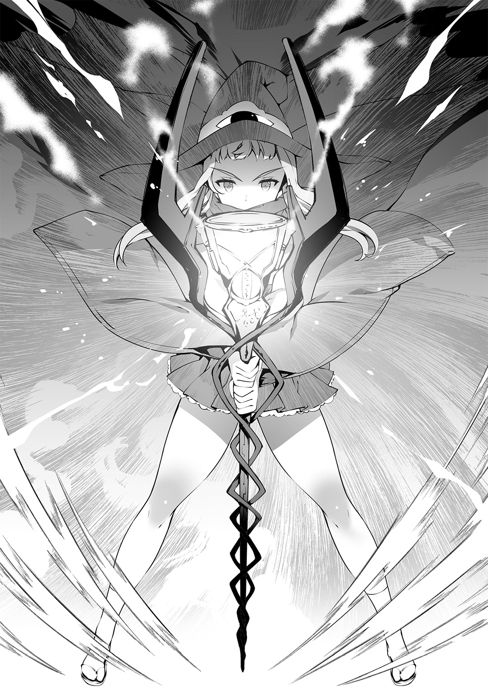
「ぐ、うぁ、あ......」
うめくベルタさんの瞳の中に狐火の炎が輝く。
「ベルタさん!?」
駆け寄るような素振りも気配もなく、夜子さんはベルタさんの前に立っていました。
夜子さんの白い指先が迫っても、ベルタさんは目を見開いたまま、動けない。
「あ......。うぅ......」
幻なのかなんだかわからないけど、動けなくされてる!?
夜子さんの爪がベルタさんのあごに触れて、クイッと持ち上げました。
「超腹立つ。だから、ぬし、できるだけ苦しくしてから、バラして食べてあげる」
夜子さんの手がベルタさんの首をつかみ、その掌にほのかに燃えた狐火が、ベルタさんの肌に染みていきます。
「う、うぅぅぅあぁぁぁっ！」
悲鳴を上げて悶えるベルタさん。動けないままで、その身体がビクビクと痙攣します。
「あ、あ！ あぁぁぁぁぁっ！」
「ベル！ 何してるんデスか！」
ベルタさんはただ悲鳴を上げることしかできない。
「ファッキンビッチ!! なら、パティがやりマス!! お前がどれだけ強かろうがっ!!」
空間が歪んでいく。
歪みの向こうから姿を現してくる金属の光沢。ベルタさんと戦っていた時と同じか、それ以上の、このお店自体を押し潰しかねない巨大な何かが来る......!?
その時、場違いな音楽が緊張感を断ち切りました。最近よく聞くポップス。
明らかに夜子さんのスマホが鳴ってます。
「ん？ 何？ こんな時に......あぁぁっ！」
夜子さんが声を上げて、ベルタさんを放り出しました。
「ベル!?」
ぐったりと横たわるベルタさんには目もくれず、スマートフォンを凝視する夜子さん。
「やっば！ 忘れてた。今日、スイーツハニ豚の限定ハニーケーキの日じゃん！ こんなことしてる場合じゃなかった！ ああ、でも。ちゃんとスケジュールのアラーム登録してるわらわ、すっごい！ わらわえらい！」
倒れ伏してしまったベルタさんは気を失っているのか、苦しげな顔をして動きません。
パティさんは夜子さんの動きを窺っていて、大火さんは拳銃を手にしたまま。アシャさんはまだお腹を押さえてうずくまっています。
そんな中、夜子さんがスマホのアラームを切って、こっちに視線を戻しました。
「ケーキ売り切れると困るから、今日は帰るね」
「それでいいんですか!? ママさん怒らないんですか!? ボクが言うのもなんですけど！」
「菊月様、刺激しないほうがよいと思います」
「ゴメンなさい。つい......」
「ハニ豚のハニーケーキ、木曜限定だもん。すぐ売り切れちゃうし。あ、もしもし、ママ？」
普通に電話に出ました。
「え？ ケーキとかいいから早く殺せ？ この人間、抵抗するから、まだもうちょっとかかりそうじゃん。やだよ。うん？ うん？ うーん。これ実は留守電。ピーという発信音のあとになんか入れといて。ピー！」
言って、電話を切って、そのまま電源も落としました。
「これでオッケ」
ペロッと舌を出します。
「本当に!? 怒られないですか!?」
「菊月様。落ち着いてください」
「留守電だったから、オッケーだよ。ケーキケーキ。じゃあね！ また来るよ」
うきうきと足取り軽く去って行こうとする......
「あ！」
その途中で足を止めて、イイこと思いついたみたいに、ポンと手を打ちました。
「また戦うのとか超面倒だから、人質とってくね」
そう言うと、うずくまったままだったアシャさんを軽く担ぎ上げます。
「アシャさん!? 人質って、そんな!?」
「く......お腹が......！ 今は絶対動けない......！」
「そうだ。ぬし、アドレスとか交換しよ」
「え？ ボクとですか？」
アシャさんを担いだまま夜子さんはものすごく普通に戻ってきます。
「九尾の狐なのに、今風の連絡手段使うんですね」
「そりゃそうでしょ。ないと不便だし。早く新しいアイフォン出ないかなー」
「この前、出たところじゃないですか」
というか、この妖狐さんのスマホ。デコり過ぎだけど、最新のモデルです。
「ブルシット！ 何当たり前みたいにアドレス交換して、雑談してるんデスか!?」
「言われてみたら、もっとも過ぎる!?」
「よし。これでオッケ。じゃ、殺す時に連絡するね！ 待ってて」
ピョンと離れると、夜子さんは八重歯を見せて無邪気に笑って、「じゃあねー」と、自動ドアから出ていきました。
それを合図にしたみたいに戻ってくるお店の喧騒。
よく見ればベルタさんが派手に焦がしたはずの床にはそんな跡は全然なかったし、吹っ飛んで倒れたりしてたテーブルなんかもそのままでした。
もしかしたら、アシャさんの作ったファンタジック空間に近い何かだったのかもしれません。
狐に化かされたみたいでした。実際、化かされたようなものなんですけど。
そんな中で、お客さんの誰かが声を上げました。
「ベル！ 無事デスか！」
そうだ！ ベルタさんが倒れてる。それは夜子さんがいた時と変わりませんでした。
ベルタさんは返事をしません。苦痛の表情を浮かべたままで完全に気を失っていました。
「すぐに車を呼びます」
大火さんが連絡してくれました。
なのに、ボクもパティさんも立ち尽くすことしかできない。
アシャさんが連れ去られてしまったことを今さらながらに実感するばかりでした。
第十三章 ＧＯＤ ＳＰＥＥＤ Ｗ―ＰＥＡＣＥ
ベルタさんの部屋はボクの部屋の隣。一緒のアパートなんで、もちろん部屋の間取りは同じ１Ｋ......のはずなのだけど、まるで別物に見えました。
やけに家具の多い部屋です。壁という壁が棚に埋め尽くされていて、よくわからない薬品や実験道具がビッシリと並んでいます。キッチンもちょっと見えたお風呂も。冷蔵庫だけは普通のものに見えましたけど、一人暮らしには大き過ぎるので、これも変なものが入っているのかもしれません。
床にはそのへんの書店や図書館じゃ見たこともない外国語タイトルの豪華な装丁の本が山ほど積み上がっています。
殺風景とは真逆の部屋。でも、棚と薬品と本の中にベッドがあるだけともいえる部屋でした。
ふと、並んだ棚の角に片っ端からガムテープで緩衝材が貼りつけられていることに気づきました。
「そっか。この手があったんだ......」
この前、ボクが試してみた時のように、棚の足元、小指をぶつけそうな場所だけじゃなくて、棚の角の上から下まで全てと、足が当たりそうな下段の部分全てが緩衝材でびっしり埋め尽くされていました。
「ボクのアイデア、試してくれてたんですね......」
「まだ不完全やけどな」
「ベルタさん!? 目が醒めたんですか!?」
ベッドの上で、ベルタさんが身を起こそうとする......けど、動けない。
「あかん......」と呟いたベッドの中のベルタさんはパジャマ代わりの簡素な浴衣姿。
顔色は青白くて、目の下にはクマができていて、憔悴しているのが一目でわかります。喉には夜子さんの指の痕がついていて痛々しい。
「......助けてくれたんか」
「大火さんが色々手配してくれたんです。車を呼んで、《武塔》......というか、政府関係の病院に連れていってくれて。身体自体には怪我とかはなかったです。足の小指の爪がちょっと割れてる以外は」
「そうやろうな。いわゆる生気を吸われたってやつや」
「生気って？ なんとなくニュアンスはわかるんですけど」
「あーえー。つまりは身体の中のパワーが奪われたわけや」
「今、説明が面倒になりませんでした？」
「なってへんなってへん。もうそのニュアンスでええよ」
「やっぱり面倒になってる......」
「まあでも、命拾いしたな。あとちょっとで多分死んどった」
言いながら、ベルタさんはゆっくりと部屋を見回しました。
「あの神はどうしたんや？ お前、一人か？」
「実は......アシャさん、夜子さんにさらわれたんです。人質にして、あとでボクを呼び出すって」
「なんでお前、その状況で無事やったんや」
「夜子さんが限定ケーキ買いにいくとかで帰ったんで......」
「......これやから神霊は」
それに関してはボクも同意するけど、おかげで助かったのも事実で......。
「しかし......お前、油断し過ぎやろ。なんで、わたしにトドメ刺しとかんかった？ ......というのは酷やな」
「ボクは殺すとかできないですから。それに、今のベルタさんは起きることもできないですし」
「確かに手足動かすのも億劫や。死にそう。そやけど、この状態からお前殺すことも余裕やで？」
「え......」
「安心せえ。まだ殺さん。......実のところ、あんまり殺す気はなくなってきてるんやけどな。本当やったら、こんな呪い受けた時点で、魔女としての生活を諦めるべきやねん」
深い溜息をつく。
「とはいえ、わたしも死ぬのはゴメンやしなぁ」
「確かに、タンスの角は地味にだけど、命にかかわりますよね」
「そうや......。いや、でも、それだけでお前殺そうとしてたわけやないからな!?」
「え？ あ、タンスの角でポンペイが滅亡するんでしたよね」
「だいたいそれで合ってるけどな。でも、それだけやないねん。まあ、お前には関係ないけど......いや、わたしがお前のこと狙ってるんやから、関係あるんか」
ベルタさんは天井を見上げたまま、少し考える様子を見せて、もう一度口を開きました。
「万物の基礎となる第一原質を第五元素を用いて四大元素と変えることで全てのものは精製される。わたしは第一原質を作ることができて、不完全なものやけど、第五元素も作ることができる。つまりはまだ不完全ではあるけど、だいたい何でも作ることができる。強力な魔法薬も精製可能や。第五元素を作ることができる魔女は、この世界には、わたししかおらん。自分で言うけど、わたしは天才や。不老の術すらものにしとる」
「え!? じゃあ、ベルタさん......ボクより若く見えるほどですけど、実は......」
「いや、まだ、わたし十七やからな！ 校務員で雇ってもらう時は、鯖読んだけど、本物の十七やからな！ 天才なだけや！」
「つまり、ちょっと幼く見えるのは不老の術のせいだったんですね」
「うっさいな、もう！ 自前や!! だから、不老の術とか使えへんのやろ!! ......うっ」
咳き込む。
「ベルタさん!?」
「だ、大丈夫や......。若干興奮し過ぎた......。今、体力ないだけや」
しばらく息を整えてから、ベルタさんは話を続けます。
「とにかくや......。わたしは他の魔女、魔法使いよりもひとつ抜きんでてる。その自覚もある。ほとんどの魔法使いは派閥に所属しとる。いわゆる魔術結社や。魔法使いの集まりが始めたものもあれば、中世の騎士団、教会由来のものもある。そやけど、わたしはそれには属してへん」
「どうしてですか？ やっぱり......そういうのに入ってるほうが、色々楽そうですけど」
「まあ、楽は楽やな。最初はわたしも入ってたし。ただ、あいつらは研究を純粋な研究として扱わへん。道具と思っとる。わたしはそういうのが嫌や。研究ってやつはもっと純粋なもんのはずや。それに、人が群れればドロドロとしたものが生まれる。裏切りもある。大きな力を手に入れたら、安易なことに使おうとかいうアホも多い」
「安易なことというのは？」
「魔法や、錬金術はあくまで知識や。確固たる儀式、装置を用いれば、誰でも......神霊には及ばずとも、万物を操る力を使うことができるんや。どんな俗なことにも使えるやろ？」
「確かに......。ベルタさんの力はすごいです」
「否定はせん。神霊相手やなければそうそう負けへん。わたしの力、知識はどこかの派閥にも、個人にも渡したらあかんねん」
ベルタさんは遠い目をしていました。なんとなくだけど、過去に何かがあったんだと思う。
「それが、ベルタさんが一人で行動してる理由なんですね」
「まあな。実力があれば研究のための後援者も出てくる。渡す研究材料はこっちで吟味するし。たまにはさっき言うてた他の組織と手を組むこともないでもない」
「ただ......」と、ベルタさんは呟きました。
「孤高の魔女を気取るには、誰よりも多くの知識。つまりは力を持たなあかん。敵も裏切りも、全てを退けるには、研究を続けて、多くの知識を、より強い力を得て戦い続けるしかないんや。泥沼なんはわかってるけどな」
「それだと......しょうもない呪いは、こんなにしょうもなくても、限りなく邪魔ですよね」
「そうやな。だから......お前を殺さんとあかんねん」
「......わかります」
「わかるんか!? お前、それでいいんか!? わかったらあかんやろ!?」
「あ!? こ、殺されたいわけじゃないです。もちろん」
危ういところでした。
「だから......えっと。ボクは自分が死なずに、ベルタさんのしょうもない呪いをどうにかする方法を見つけたいと思うんです」
「お人よしめ......」
ゆっくりと寝返りを打って、ボクに背を向けるベルタさん。
その背中はいつもよりもずっと小さく、子供みたいに見えてしまいます。同い年だけど。
「まあでも......たまにはアホ丸出しの、打算抜きの善意に触れるのは悪くない」
深く息をつきました。
「......ほんま、ありがとうな」
「そ、そんな！ ボクは何もやってないです！ 大火さんとかいなかったら、どうしようもなかったし......」
ベルタさんが噴き出しました。
「わたしはな。友達作るの得意やねん。一人でやってきたから、そういう能力がついたっていうか」
「確かに大人気ですよね。校務員のおじさんとも仲よかったですし」
「やろ？ 大事な友達や。でもな......同時に考えてまうんや。あの子らが、あの人らが、わたしの力を求めて、それを目当てに友達になってくれてるんやってこと」
「そんなことないですよ......すごく頼りにされてましたし。みんな、普通にベルタさんのことが好きだと思います」
「うん。好いてくれてるのはわたしもわかっとる。それでも......な」
孤独だったから、たった一人だったから、友達を大事にするし、誰とでも仲良くなれる。
でも、孤独に生きてきたから、自分の能力を自覚してるし、人のことを冷静に観察してしまうし、誰とでも仲良くなることができる自分があまり好きじゃない。
そういう感じなのかもしれない。
「でも、お前はなんでや？ お前はわからん」
「ボクですか？」
「そうや。お前にとって、わたしは不利益な存在や。殺そうとしてる。だから、こんなふうに助ける必要はないはずなんや。それやのに......お前はなんでや？ なんで助けるんや？ 一回だけやない。これで二回目や。わたしをどう利用したいんや？」
「え、えっと......」
確かに......ベルタさんはボクを殺そうとしています。だから、助けるとボクの身が危ない。まさに今も危ない。
でも、それなら、どうしてボクは......。
「うーん」
眼鏡を押し上げて、眉根に皺を寄せて、一生懸命考えてみました。
「うーん......」
「なんでそんな考える必要あるねん」
「そう言われても......」
「コンニチハー！ ファッキンビッチ！ ぶっ殺しにきマシタヨ！」
ドアをバーンと開けて、現れたのはパティさん。
靴を脱ぐと、赤いサイドテールを弾ませて入ってきます。
「......お前、勝手に人の家上がるなや」
「ワッツ？ ベルたん、どうしたんデスか？ ぐったりしてるんデスか？ 動けないんデスか？ 満を持して出した攻撃をあっさり破られた魔女さんー」
「お前、何もしてへんかったやろ。怯えとったんか、英雄たん」
「ブルシット！ 今まさに動こうとした時に、あっちが先に帰っただけデスー！ ちょっと言いがかりとかやめてくだサイ！」
ベルタさんが「はっ」と冷笑すると、パティさんは「ファック！」と、地団太を踏んで悔しがりました。
「この魔女！ パティのお土産を喰らってくだサイ！」
歪んだ空間から出てきたのは大量の壺。パティさんはそれを棚のせいで狭い部屋に片っ端から置いていきます。
「早く動けるようになるとイイデスね♪」
「デスネ♪ ちゃうわ、アホ!!」
「アーハン？」
「......冷蔵庫にハーゲンダッツ入ってるから好きに食べてええで」
「ファッキンシット！ やったー！ デス！ パティ、ハーゲンダッツ大好き！」
冷蔵庫を開けると、確かにハーゲンダッツのアイスが入っていました。濃厚な味わいが魅力的なクッキー＆クリーム。しかも、普通のカップサイズじゃなくて、ファミリーサイズ。
パティさんはこれ以上ないほどニコニコした顔でカップを開けると、すごく嬉しそうに食べ始めました。
カップを手にして、スプーンを直に突っ込んでモグモグと、唇の回りにクリームがついていても、やっぱり食べます。
「ワッツ!?」
半分ぐらい一気に食べてから我に返って、スプーンを握る手を震わせました。
「なんてことするんデスか!? この魔女！」
「でも、おいしかったやろ？」
「う......。おいしいデス......」
「そのまま全部食って、はよ爆発せえ」
「そっちこそ早く元気になって、小指ぶつけたらいいデスネ！」
「お前!?」「キッスマイアスッ!?」
ボクは思わず笑っていました。
「なんや？」「なんデス？」
「あ、え、えっと......」
ものすごく睨まれてしまいました。
「言いたいことあるんやったら言えや」「なんでパティのこと笑ったんデス？」
「いや......その、仲がいいなと思って」
「ちゃうわ、アホ！」「ワッツ!? ワァァッツ!?」
ベルタさんはベッドの上で背を向けて、パティさんはほっぺたを赤くしていました。
怒られてしまった......でも、やっぱり仲がいいと思います。
ベルタさんは友達に対して後ろめたさを感じていて、パティさんは友達がいないって言っていました。でも、この二人は......。
『地獄の時間じゃよー地獄の時間じゃよー』
その時、ボクのスマホが鳴りました。
「......なんや、その音」
「ミコツヨ、イイデスヨネ！」
「パティさん、ミコツヨ知ってるんですか？」
「ワッツ!? あ、その......パティは、偶然......デスネ、その......」
「うっさいわ、パト！ お前らがオタ隠し損ねてるのはわかったから、はよスマホ見ろ！ 今、それどころちゃうやろ！」
「「は、はい」」
思わず声を揃えてしまいました。
パティさんがミコツヨ知ってるって話は後で訊くとして......ボクは息を呑む。ベルタさんはこっちに向き直って、パティさんは身を乗り出して、ボクが手にしたスマートフォンを覗き込んでいました。
「アイリスで来てるんか」
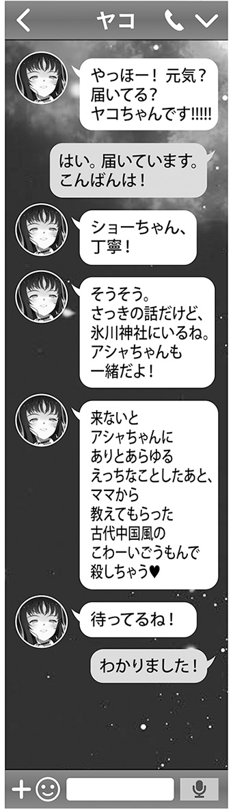
「お前、なんで普通に元気よく返事しとるねん」
「あ。動画も送られてきました」
「これ、サムネイルからダメな感じデスヨ」
ボクたちは顔を見合わせて、それから意を決して添付されていた動画ファイルを開きました。
「主ー。我、今、とっても幸せー。夜子しゃまの奴隷、幸せですー」
そこにはアシャさんの蕩けるような満面の微笑み。
ニヤニヤした顔の夜子さんがその両手をつかんで、無理矢理Ｗピースさせて、てへぺろって舌を出していました。
「神......」「ジーザス......」
アシャさんの綺麗なはずの目の奥には、動画でもわかる怪しい炎の光。
「完全に操られていマスネ。あと、あの狐。すごく腹立ちマスネ。このてへぺろ」
パティさんは真顔。色々な意味で、わかります。
「氷川神社......。関東にいくつある思ってるねん。まあ、この街の氷川神社なんやろうけど、適当やな......」
「行ったことはないけど、場所はわかります」
最寄りの駅から少し離れているけど、ボクの家からだと自転車で行ける距離です。
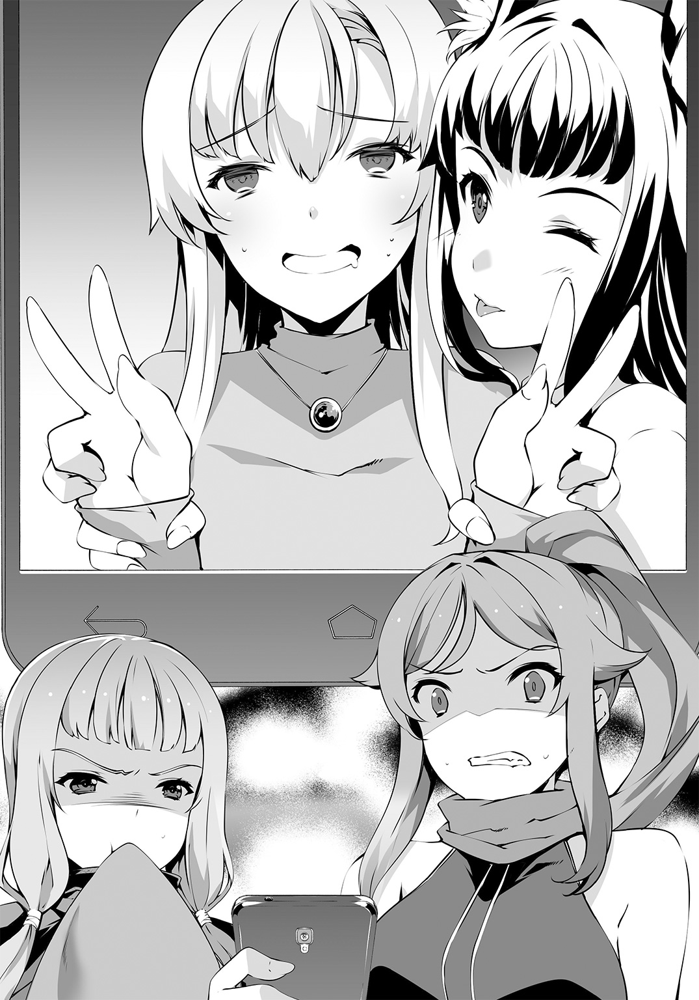
「わかるからなんや？」
ベルタさんがベッドの上で身を起こしました。
「ベルタさん、身体がまだ」
「わたしはええねん。そやけど、お前、どうする気やねん。行く気やろ？ 行ってどうするねん」
「でも、行かないとアシャさんが......なんか大変なことになります」
「え、えっちなこと......。ナニされちゃうんデショ......」
「エロいパトは黙っとれ」
「パティ、エロくないデスヨ!?」
「それで、ショーくん。行ってどうするねん。お前は何もできへん。アシャも明らかに敵の手に落ちとる。殺されるだけや。むざむざあんな狐にお前取られるぐらいやったら、わたしが今ここで殺す」
ベッドの脇に立てかけていた《ヘルメス》を手にしていました。
顔色は悪いし、ふらついてるけど、ベルタさんは杖を支えに立ち上がります。
「イエス。行ったら、確実に殺されマス。だって、あいつ、ベルでもどうにもならなかったんデスヨ。まあ、パティのほうが強いんデスけど」
「そもそも、ショーくんが行って、殺されたら、あの神が助かるとでも思ってるんか？」
「え、えっと......。確かに、行くと殺されると思うんです。だけど、ボクは殺されたくないです。でも、アシャさんは助けたいんです。だって、アシャさんは天則とか、使命とか、よくわからない理由ですけど......見ず知らずのボクを、身体を張って、うっかりしがちなのに、護ってくれてるんです」
ボクを狙ってきた人たちの前に立ちふさがるアシャさんの背中を思い出しました。
同時に浮かぶのは呪いのせいで色々失敗して、しょんぼりと肩を落とす姿。
かなり頻繁にうっかりしちゃう。それでも......間違いなくとても頼もしかった。
アシャさんがいてくれたから、殺すとかいう人が突然、何人も来ても、激しく取り乱したりすることもなく済んだし、安心できたんだと思います。
「自己犠牲に意味なんかない言うてるねん」
「ベル。まだ動かないほうがいいんじゃないデスか？」
パティさんが止めても、ベルタさんは止まらず、ふらふらしながらボクの前に来ました。
睨みつけて、ボクの胸倉をつかみました。
「わたしは魔女や。神霊を除けば、第一原質の仕組みはわたしが一番よくわかっとる。だから、わかるんや。知らんようやから、教えたるけど、お前とあの神は繫がっとる」
「繫がってる？」
「正確にはお前の中にある《破呪の光輪》。それは純粋な最上位の神霊の一部。つまりは莫大な量の第一原質や。不思議に思わんかったんか？ 今はバラバラになったとかいうアシャのいう創造神――善神。なんで存在自体を失くしてるはずのそいつがお前を護るアシャを派遣できたんか」
「え、えっと......深く考えたことはなかったです。神様なんで、バラバラになっても、そういうことができるのかなーって」
「真実はつまり、こういうことや。アシャという神。あれはお前の中の《破呪の光輪》、善神の破片が防衛のために作り出したものや。ある意味、善神が作ってるって言えんこともないけど、お前に......お前の中の力に付随しとる」
「つまりはや」と、ベルタさんは続けます。
「お前が死んで、《破呪の光輪》が奪われたら、そこから生み出された神も消える。アシャは消える」
「そんな......」
「もっと言えばや。今おるアシャは、《破呪の光輪》が自己防衛のために生んだものや。仮にあの神が死んだら......十中八九、新しい神を作るはずや」
思わず胸に手を当てる。ボクの中のどこに《破呪の光輪》とかいう力があるのかはわからないけど......そんなすごい力があって、アシャさんの命がボクと繫がっているなんて......。
「アシャを人質にする意味なんかないねん。もし、あれが殺されて、新しくお前を護る神が生まれたら、そいつはしょうもない呪いを受けてないかもしれん。本当の意味でのアシャ・ワヒシュタになるかもしれん。むしろ、あの狐を倒せるのは、現状やと、新しいアシャ・ワヒシュタだけや。お前が生き残る術はそれだけなんや。新しいアシャ・ワヒシュタがしょうもなく呪われたら、使い捨てていくぐらいでもいいんや」
「......アシャさんがそんな存在だったなんて。......いやでも。だから、アシャさんはことあるごとに......」
『殺せ』って言っていました。
「ちょっとした屈辱で自害したがってる。わたしもそう思てたけど、その正体を思えば、ただ言うてただけやなかったってことかもしれんな」
衝撃を受けざるをえない。それにちょっと悲しかった。
「でも、嫌です。そんなやり方」
ボクは死にたくないけど、アシャさんが死んで、それで助かるのは嫌です。
「お前、まだそんなこと言うんか」
「言います。それに、ボクはもともと自己犠牲のつもりで言ったんじゃないんです」
「......どういうことや？」
ボクは顔を上げました。
そして、ちょっと怒ってて怖いけど、ベルタさんの目を......パティさんのことも、まっすぐに見返します。眼鏡がずり落ちてきたのでそれはそれで直しました。
「ベルタさんにもパティさんにも話が通じました。それに、まだ完全じゃないですけど......しょうもない呪いをある程度どうにかできそうだったし、もっと考えて、色々試せば、本当の意味で呪いをどうにかする手段があるかもしれない。そう思えたんです」
ベルタさんが棚に貼りつけた緩衝材を指差します。
「だから......夜子さんのしょうもない呪い次第なら、話し合ってどうにかできるかもしれない。そう考えているんです」
「ア、アホか!? 黙って聞いとったら、完全に希望的観測やないか！ そんな曖昧なことで《破呪の光輪》失くすんやったら、やっぱりわたしがここで殺したる！」
「ちょっと、ベル!? 落ち着いてくだサイ!?」
「離せ、アホ！ アホーッ！」
パティさんに羽交い締めにされて、ベルタさんは足をバタバタしていました。
「ゴメンなさい。それでも......行きます」
「ちょ、ちょっと待ってくだサイ!? ああもう、ベル！ 暴れないでくだサイ！」
「うるさい！ うるさいわ！」
ボクはベルタさんとパティさんの横を抜けて、部屋を出ました。
「アホ！ ほんまアホ！」
ベルタさんの声が聞こえたけど、でも、足を止めない。
ベルタさんの言うことは本当に正しいと思うけど、ボクにはこうすることしか思いつきません。
ベルタさんがずいぶん長い間眠っていたこともあって、アパートの外は真っ暗でした。
自転車に乗ろうとしたところで、街灯の下に佇む領武高校の制服姿の女の人の姿に気づきました。
服部大火さん。眼鏡の奥の目はどこか悲しげでした。
「申し訳ありません」
「え!? い、いきなりなんなんですか!? 頭上げてください」
「玉藻前の分霊、巻神夜子。先程の戦いの中でも、今、菊月様が呼び出されているのを知りながらも、何もできない私たちをお許しください。いえ、許しを請う資格すらありませんね」
「待ってください。別に怒ったりしてないですよ？ さっきも、ベルタさんを運ぶのに力を貸してもらいましたし......」
「赤星総理は玉藻前――神霊との対立を望まれていません。それによる、大きな被害を恐れるあまり、あなたを見殺しにしようと考えています。もし、あなたが巻神夜子に殺害されたとすれば、ベルタ様やパティ様、《破呪の光輪》を求めて国内に入った危険分子が去るという判断でもあります。それに従うのが《武塔》です。しかし......」
「そっか......。そうですよね」
苦い表情をしてしまいました。
「見捨てられるのかーと思うと、やっぱりいい気分じゃないですね。でも......助けてもらうとか、考えてなかったし、しかたないとも思うのでそれほどショックでもないです」
「そう......ですね。私たちではベルタ様やパティ様クラスの相手になると何もできないのはご存じのとおりですし......。神霊を前には《武塔》など......」
「あ、そういう意味じゃないんです！ そうじゃなくて......。いっぱいいっぱいになってて誰かに任せるとか考えてなかっただけで」
自分のことなのだから、できるだけ自分でどうにかしなきゃとか思っていました。
「もし、さっきのベルタさんの時みたいにお願いできることがあればよろしくお願いします」
ペコリと頭を下げました。
「菊月様......。わかりました。服部大火と《武塔》の権限でできることがありましたら、なんだってします。それにもうひとつ」
ボクの顔を覗き込む大火さん。眼鏡にはボクの顔が映っていました。
大人の女性の真剣な顔がすぐ目の前にある。それも、美人。ドキッとしてしまった。
「心配だけはさせてください。ご無事をお祈りしています」
「ありがとうございます」
ボクはもう一度頭を下げて、
「それじゃ、行きます」
それから自転車に乗って、夜道を駆け出しました。
大火さんも、アパートも振り向かない。
あの夜子さんが、ボクを殺すために待ってる。
本当はかなり怖いんだけど、我慢して、ヤケクソみたいに自転車を飛ばして、夜子さんとアシャさんのもとへ走りました。
第十四章 白面金毛九尾の狐
「なんでめっちゃバテてるの？」
「いや、ちょっと......本気で走り過ぎたというか、なんというか......。ゴメンなさい。一分待ってください。ほんとゴメンなさい......」
氷川神社に辿り着いた時、ボクはもうバテバテで汗だくでした。
夜とはいえ真夏に自転車でがんばればいけるぐらいの距離を全力で走ったら、こうなる......。
そんなボクを夜子さんは半ば呆れた顔で見下ろしていました。
確かに呆れる......。
夜子さんは神社の拝殿の前にある賽銭箱に足を組んで座っていました。夕方と同じ領武高校の制服姿で、顔には斜にかぶった狐のお面。
「このお面超かわいいでしょ。お気に入りなんだ」
「確かに......けっこうかわいいと、思います」
やっと普通に息ができるようになってきた......。
眼鏡についた汗をハンカチで拭き取って、かけ直しました。
「アシャさん......」
夜子さんの後ろにアシャさんがいました。
だけど、その様子はやっぱりあからさまにおかしい。
太陽のように輝く、いつもの自信に満ちた表情も、うっかりしてしまって沈んでる時の表情もそこには浮かんでいません。
ぼんやりと虚空を見つめるその瞳の奥に、狐火の輝きが揺れていました。蕩けた顔でＷピースはしていないですけど。
「......アシャさんに何をしたんですか？」
「ん？ ああ、狐火の幻で心を操ってるよ。わらわより超強い系の神霊だから、まずいかなーって思ったけど、心に隙さえあれば格上もなんとかできちゃうね。そこを狙えるとか、わらわすごくない？」
アシャさんはボクにも気づかない。
多分、ボクじゃどうすることもできない。
「それで......夜子さん。ボクを狙ってるのって、やっぱりしょうもない呪いが原因なんですよね。お母さんの？ それとも、夜子さんも？」
「ママのほうだよ。わらわには全然関係ないんだけどさ。こうやって作ってもらったから、自由に遊びたいじゃん。だけど、ママ、言うこと聞かないと帰ってこさせるって言うんだよね。めんどくさい。でも、わらわ、まだまだ帰りたくないんだ」
「それなら、どうにかできるかもしれないです。ベルタさんやパティさんのしょうもない呪いも......」
「あ、待って！」
「え？」
「あんさ。気づいちゃったんだ。観たいドラマがもうじき始まるの忘れてたんだよね。なんでスマホにスケジュール入れておかなかったかなー。新しくやるドラマ......なんだっけ？ お医者さんの話で、ほら、泣けそうなやつ」
「いや、わからないですけど」
今期のアニメのスケジュールならわかります。
「そうなの？ イケてないなぁ。まあ、そんな感じだから、即行死んで」
「えぇっ!? ちょっと!? 話......！」
「アシャちゃんやっちゃえ！」
夜子さんが命令すると同時に、アシャさんが光の翼を広げました。
光の羽根を散らして、輝く鎧をまとったアシャさんが飛ぶ。
煌めく光が凝縮されて、その手に作り出されるのはあの光剣《天則司りしワヒシュタ》。
「やめて！ アシャさん！」
「残念。ムダだよ。その子はわらわの操り......」
飛翔するアシャさんが賽銭箱に足を引っかける瞬間を確かに見てしまいました。
飛びながらも派手に蹴躓いたアシャさんは頭から地面に叩きつけられてそのまま滑る。ボクの横を通り抜けて、境内を縦断して、石畳に引っかかってポーンと跳ねた上で鳥居近くの狛犬にやっぱり頭から突っ込むと、もともと壊れていたのか、狛犬の頭が落ちて、アシャさんの頭に激突しました。
「アシャさ―――んっ!?」
神社におわす地獄のピタゴラスイッチ!? 頭部ばっかり狙い過ぎです！
アシャさんはそのまま、ピクリとも動かなくなりました。
「だ、大丈夫ですか？ アシャさん？ ちょっと、大丈夫ですか!?」
やっぱり動かない。
操られていてもしょうもない呪い《いざという時にうっかりしがち》がここまで健在だなんて......。
「え、えっと......」
目を丸くしている夜子さんのほうを見る。
「うっそ!? 何してんの、あの子!? ああもう！」
毒づきながら、夜子さんがネイルアートでキラキラした指を鳴らせば、夜の闇に狐火が怪しく、いくつも浮かび上がりました。
「めんどくさいなー！ でも、今度こそ終わり！」
ピューッ！ と指笛を鳴らすと、狐火が二つ、その形を狐そのものに変えます。
炎でできた二頭の狐がふわりと舞い上がり、飛びかかってくる。逃げる間もない。
「伏せや！」
でも、その声には反応できました。
頭を抱えて地面に伏せた次の瞬間、
「元素精製......！ 薙ぎ払えや！ 《ヘルメス》！」
ボクがいた場所を突き抜けたのは、水の塊でした。
大量の水がまるで大きな剣のように、境内を横切る。
それを振るうのは《ヘルメス》を構えたベルタさんでした。
炎の狐が真っ二つに切り裂かれて、ただの炎になって消し飛び、水の刃はそのまま夜子さんに直撃！
「にゃぁ、もう！」
と思ったら、平手ではたいただけで、水の刃自体が四散してしまいました。
「だから、ドラマ観たいっつってんじゃんー！ 邪魔しないでよ!!」
夜子さんは賽銭箱を蹴るとベルタさん目がけて一直線に跳びました。手にはいつの間にか鋭い鉤爪が生じています。
「......あぁぁぁっ!? ネイル全部取れたー！」
「まだや......！」
ちょっと涙目の夜子さんに対して、大きく振り回される《ヘルメス》。
夜子さんに打ち砕かれて飛び散った水が《ヘルメス》の描く軌跡に沿って集まって、またひとつの塊となりました。
夜の境内に家ほどもある水塊が作り上げられ、ベルタさんが杖を突き込めば、大量の水は一気に氷結していきます。
さらに《ヘルメス》を地面に突き立てると、隆起した土の塊が氷塊を覆って、巨大な壁となり、迫る夜子さんの前に立ち塞がりました。
「だからなにさ！ ネイルの仇っ!!」
「お前、自分で爪伸ばして取ったんやろ!?」
夜子さんの狐火がベルタさんの作り出した壁にまとわりついて燃え上がれば、土も氷も、一瞬も待たず燃え尽きて、溶け落ちていきます。
その中を突き抜けて、夜子さんは炎をまとった鉤爪を振りかざしました。
「ダメです！ ベルタさん！」
「そうでもない」
まだ全然本調子じゃないのか、膝を落とすベルタさん。でも、目は前を見ていました。
「狙いどおりや！ パト!!」
今まさにベルタさんを切り裂こうとしていた夜子さんの真上、至近距離に、パティさんが姿を現しました。突然のことでした。
「パトって言わないでくだサイヨ！ ベル！」
パティさんの背中には、初めて出会った時に、その身体を空に浮かべていたあの折り畳んだ翼みたいな、多分、飛行機構が淡く輝いていて、鉤爪のような重力剣を今回は両手に装備しています。
「空間圧縮による千倍の加速。これが......！」
「天翔龍閃!?」
「ゴメン！ それ、噓デス！ 本当は加速装置《セクメト》!!」
「ええからやれ！ パト！」
「心得マシタが、パトじゃないデス！」
「ショーくん、殺すのはわたしや！ お前なんかにさせるか!!」「違いマス！ パティデス！ パティが殺しマス!!」
パティさんが歪んだ剣を浮かび上がらせる鉤爪の籠手を大きく振りかぶって、
「とにかく、キミじゃないんデスヨ!! アスホール!!」
夜子さんの背中に叩き込みました。
ベルタさんが後ろに飛び退いた直後、地面も石畳も夜子さん自身もグニャッと歪んで、地面が罅割れていきます。
パティさんがニヤリと笑い......
次の瞬間、赤毛を振り乱しながら、吹き飛ばされました。
「きゃぁぁぁぁぁっ！」
手水舎を破壊して、それでも止まらず境内を何度も何度も転がって、鎮守の杜の大木に叩きつけられてパティさんはようやく制止。
「ああもう！」
夜子さんがスタッと地面に降り立ちました。
「スカートも破れたじゃん！ サイアク！」
パティさんの重力剣でできた深いクレーターの真っただ中で、眉を上げて怒る夜子さん。
でも、地面を抉り取るようなパティさんの一撃がまともに当たって、破れたのは本当にスカートの裾だけ......。
「ネイルも髪もスカートも......！ わらわ、激おこなんだけど！ ぬしら、もうナマすね！ ナマすって、膾にするを、わらわっぽくしただけだからね！ ヤバイよ！」
「めちゃくちゃか......お前」
《ヘルメス》を手にしたベルタさんがよろよろと起き上がったけど、余裕はまったくありません。
「イケるって言ってたじゃないデスか......。ファッキンビッチ」
パティさんも懸命に膝を立てました。でも、ダメージは隠しきれません。背中の飛行機構が火花を噴いて、地面に落ちます。
そんな中、もうひとつ、物音が聞こえました。
地獄のピタゴラスイッチで気絶していたアシャさんが立っていました。
六枚の翼を広げて、光の甲冑をまとうアシャさんの目にはいまだ揺れる狐火。
「最悪やな」「ガッデム......」
ふわりと飛び上がったアシャさんはベルタさん、パティさんから夜子さんをかばうように立って、剣を構えました。
「今度こそ終わりだね」
不機嫌そのものの顔で、八重歯を見せる夜子さん。
「とりあえず、こいつら殺して。灰も残さずやっちゃってよ」
その言葉に従って、アシャさんが光剣《天則司りしワヒシュタ》を振り上げました。
「あかん......！」「こんなのって、ないデス！」
「まだです!! パティさん！ 夜子さんを攻撃して！」
ボクは叫んでいました。
「え？」
「早く!! 全力です！」
ほんの一瞬の躊躇をしただけで、パティさんは動いてくれました。
その姿が消える。多分、さっきも使ってた加速装置《セクメト》。
「重力剣《ランパント》！ 臨・兵・闘・者・皆・陣・裂・在・前!!」
夜子さんは反応できない。でも、見えないほどの速さで動いたパティさんに対して、アシャさんは無造作に手を振るっていました。
最初の戦いでも、アシャさんは素手で重力剣を受け止めています。
「あぁぁぁぁっ！」
悲鳴を上げてパティさんが吹き飛び、
「だから、ムダだって......」
重力剣を薙ぎ払ったアシャさんの手は勢いのまま夜子さんの横面を引っぱたきました。
「......っ!?」
夜子さんがギュルッとキリモミ回転。そのまま地面に叩きつけられてめり込みました。
手足がピクピクと痙攣して、狐の尻尾のアクセサリーがパタッと力なく垂れます。
「なんやて」
ベルタさんは立ち尽くして、なんとか身体を起こしたパティさんも呆然としていました。
めり込んだ夜子さんを感情のない眼差しで見下ろすアシャさん。
そして、瞬きすると、
「はっ!? 我は......」
その瞳に宿る怪しい炎が消えました。
「アシャさん、正気に戻ったんですね！」
「正気に......。そうか。我は......この者に......」
「なるほど。確かにイイ手や」「しょうもない呪い、恐るべしデスネ」
ベルタさんとパティさんが苦笑します。
「やるやんか。ショーくん」
「いや、すいません。思いつきで......成功するかどうかもわからないのに、パティさんを危険な目に遭わせてしまって」
「イイデスヨ！ 全然かまいマセンヨ！ グッジョブ！ ナイスプレイ！」
パティさんが親指を立てました。照れます。
「アシャさんもありがとうございます。多分、こうなるって信じていました」
「我を......？ どういうことだ？」
「それは......あ」
失礼過ぎて口に出せないことに気づいてしまった。
「神。お前の呪いを利用したんや。お前は《いざという時にうっかりしがち》。そやから、コン助を護ろうとした時点で、なんかやらかす。裏目に出る。ショーくんはそう思ったんやろ」
「あまりにも裏目で、パティはゾッとしていマス......」
ギャグマンガみたいに地面にめり込んでる夜子さんを見ます。
「うっかりしがち......。我は......うっかりでこんな......」
「ゴ、ゴメンなさい！ アシャさん！ 他意はないんです！ 呪いだからしかたないと思ってるんです！ でも、今はこれしか方法がなくて......！ あの......」
「いい。いいんだ。そもそもは我は汝を護るべき。それなのに......」
「いったいなぁもうっ!!」
いきなり立ち上がる夜子さん。でも、今度はもう無傷じゃない。顔は泥だらけだし、狐のお面は割れてます。
「わらわのメイクー!! うぬら......うぬら、もう絶対許さないよ!! わらわが徹底的に凌辱して、ナマして、それから......！」
その喉元にアシャさんが躊躇なく剣を突きつけました。
夜子さんがきょとんとした表情を浮かべます。
「な、なに？ わらわになにすんの？」
「この距離。我とてさすがに、おそらく、万が一にもうっかりすることはない。自信はないが、うっかりはしない。そして、先の戦いのように幻を使う間も与えない。汝の言葉に耳を貸すこともない」
「こ、殺すの？ わらわを......」
ベルタさんは再び《ヘルメス》を構えて、パティさんもよろめきながら立っていました。
「ちょ、ちょっと待ってよ。悪いのわらわじゃないし！ わらわはママにお願いされただけで......！ ママと話して！ ママと......！」
「アシャさん。待ってください」
「主......。しかし、この狐は油断できない相手だ」
「それでも......待ってください。お願いします」
ボクが頭を下げると、ベルタさんが失笑しました。
「甘過ぎるやろ」
「でも、ショーが甘過ぎなかったら、パティたちももう生きてないデスヨ」
「まったくやな」
肩をすくめました。でも、許してくれたみたいで、ホッとします。
「夜子さん。お話がしたいんです。こんな形で申し訳ないんですけど......いいですか？」
「いいよ、いいよ！ 助けてくれるなら、なんでも」
アシャさんが少しだけ剣を引くと、夜子さんはフーと深く息をつきました。
「夜子さんのママさん......玉藻前さんも、しょうもない呪いを受けているんですよね？ それで、ボクを狙ってきた」
「そうそう。そのとおりだよ。ママに言われたからしかたなくだよね。本当はこんなことしたくなかったの！」
「みっともないコン助やな......」「かっこ悪いデスネ......」
「できればでいいんです。そのしょうもない呪いがどんなものか教えてもらえませんか？」
「ママの呪い......。めんどくさいなぁ......」
アシャさんがジロリと睨みました。
「わかったよ。わかってるよー。もー」
本当にめんどくさそうに溜息をつきつつも、夜子さんは口を開いてくれました。
「うちのママがこの国を滅ぼしかけたあとどうなったか知ってる？ 時の陰陽師とか、神霊によってたかってやられてママのほうが滅ぼされかけたんだよ」
「そして、毒気を出す石に姿を変えた......。那須高原の殺生石が馴れの果てやって話やな」
「よく知ってマスネ......。本当に外国人デスか？」
「お前が外国人言うなや。わたしは魔女やから、色々知ってるんや」
「うん、まあ。それでだいたい合ってる。観光名所になってる殺生石。あれがうちのママなんだけど......。それがうぬらの言うしょうもない呪いを受けちゃったんだよね」
「そんな大妖怪がどんな呪いを......」
「たかるんだよ。カメムシが。大量に。ビッシリと」
みんな沈黙しました。
「《カメムシがすごくたかる》呪い」
「ブルシット!? たかだかカメムシ如きで人の命奪おうとしてるんデスカ!? 何考えてるんデスカ!? 人の命は地球よりも重いんデスヨ!?」
パティさんは興奮気味に、あと、いつから持ってたのかわからないけど、ポテトチップスをボリボリと食べながら声を上げました。
「いや、パト。わたしらもたいがいやからな。自分で言うのもなんやけど」
「でも、考えてみてよ！ ママは身動きできないんだよ！ そこにカメムシビッシリだよ!? 言うなれば金縛りにあってる時に、顔面にカメムシビッシリだよ！ ヤバイ!! 耐えられる!? わらわは無理！」
「......う、うあ、え、うぁぁぁぁぁぁっ!! ヘルノー！ ヘルノー！」
想像しちゃったのか、ポテチの袋を取り落して崩れ落ちるパティさん。
ベルタさんも「おえっ」と口元を押さえています。
ボクも......考えるだけで堪える。洗濯したシャツとかに入ってて、それをうっかり潰しちゃっただけでもちょっとしたトラウマになるのに......。
「わらわは面倒が嫌いなんだけど、さすがにちょっとそれはヤバイって思って......。殺生石ってガス出せるから、カメムシ殺せるけど、あいつら死んだら死んだでやっぱり臭いし！ だから、うぬをナマしてなんとかできないかなーって。しかたないじゃん！」
「確かに......辛い」
「でしょ！ じゃあ、死んで！ ひっ！」
嬉々として動こうとした夜子さんの喉元にもう一度アシャさんが剣を突きつけました。
「......ゴメンなさい。夜子さん。ボクは死にたくないんです。でも......考えてみました」
「考えた？ 何を？」
「......呪いじゃなくて、カメムシのほうをどうにかしたらどうですか？」
「え？」
「それなら、大火さん経由でお願いして、カメムシの除去と虫よけの設置をすれば、だいぶ状況が改善されると思うんです。那須高原の殺生石って観光地ですから、予算とか立てやすそうですし......」
「可能です」
「うわ!? いたんですか!? 大火さん」
どこかに隠れていたらしく、普通にいました。
「はい。監視が任務ですので」
言いながら、目を伏せる大火さん。
「ご無事で何よりです」
心配してくれていた。
思い上がりなのかもしれないけど、そのことはすごく嬉しい。
「いえ。すいません。勝手にこんなこと言ってしまって。でも、できるなら......」
「はい。菊月様の言うとおり、予算は通るでしょう。カメムシの発生に対しては、決定的な駆除手段はないのですが、発生原因の除去......例えば、マルカメムシであれば、エサとなるマメ科植物を減らすことで局地的に発生数を減らすことはできます。また、カメムシに対する虫よけも相応の効果はあるでしょう」
「詳しいですね。ありがたいです」
「さすがニンジャデス。カワバンガ!!」
「昔、少々あったんでござるよ」
「という感じで、どうですか？ 夜子さん」
「除去ねー。除去。んー」
首に剣を突きつけられたままだけど、夜子さんは退屈そうにあくびしていました。やる気を感じられません。
「いや、でも......なんかめんどくさいじゃん。あ、もしもし」
剣を突きつけられていても、夜子さんは普通に電話に出ます。
「なぁに、ママ。うん、うん......。だよねー。ママもさ。言ってるんだよね。人間なんぞに配慮はいらないって」
「ならば、汝はここで死ぬ」
「ひっ！ うぅ......困ったなぁ......。めんどくさいの嫌なのに......。ママもうっさいし......。なんで、わらわがこんな目に遭うの！ わらわが言うこと聞いて、何の得があるのー！ なんかしてよー！」
「泣くなや」「子供デスか......」
「なんかしてやろう。つまりは殺す」
「アシャさん、待って！ え、えっと......」
剣を突きつけられて動けないままで、涙を浮かべた夜子さんの姿に覚えるすごい罪悪感。
パティさんが「子供デスか......」って言ってたけど、夜子さんがボクを殺すために生み出されたなら、実際、子供みたいなものなのかも。
「じゃあ、夜子さん。こういうのどうですか？」
「なに？ 気が変わって嬲り殺しになってくれる？」
「違いますよ!? 夜子さん、人間の生活楽しんでますよね。ケーキ食べたり、ドラマ観たり」
「うん。ママに生んでもらって、人間の生活して......。だから、早く面倒終わらせて、早く遊びたいんだよ！ 死ぬのやだー！ 死んで!!」
「それなら......えっと、ボクなんかが何かできるのかわからないですけど。人間として、ボクが色々案内するとかどうですか？ 提案に乗ってくれたら、お礼とかで」
「案内？」
「ボク、ずっとこの街に住んでるので、パンケーキブーム前からおいしいパンケーキを作ってるお店とか知ってるんです」
「パンケーキ!?」
「それに、ベルタさんはチーズケーキのお店知ってるんですよね」
「チーズケーキ!?」
「わたしも巻き込むんか。でもまあ......あそこ教えるだけで、後味悪いことにならんなら、安いもんか。恩売っといて、損はない相手やし」
「他にも、ボク、おもしろい映画とか、アニメとか教えます」
「じゃあ、パティはこの街で見かけたアメリカンなお店、教えちゃいマスヨ」
「あ、それはいらない。ギトギトしてそうじゃん」
「ファッキンビッチ!! キミ、アメリカを......！ アメリカをデスネ！」
「スイーツに映画に......イイじゃん！ 命は助かるし！ ちょっとぐらいめんどくさくても、ありあり。じゃあ、わらわ乗る！ そうする！」
夜子さんが手にしている電話の向こうで何か驚くような声が聞こえた。
「え？ 何？ いいじゃんか、ママ。逆らうなって？ だって、スイーツだよ。お土産ぐらい持っていってあげるから......なに？ うっさいな！ わらわはママよりもお菓子が好きなの！ ママのアホ！ バカ！ エキノコックス!! バイバイ！」
電話を切りました。
「今の......大丈夫なんですか？ 喧嘩っぽかったけど」
「だいじょぶ、だいじょぶ。いつもこんな感じだし」
照れたように言うと、八重歯を見せて嬉しそうに笑いました。
「......その代わり、わらわを退屈させたら、食べちゃうからね」
「その前に我が汝を殺す」
「ショーちゃん、こやつヤバイ。なんとかして」
「汝......！ 今まで主を殺そうとしておいて、馴れ馴れしいな！」
「えっと......とりあえず、剣は引いてあげて」
「主も......」
溜息をつきながら剣を引くアシャさんを見て、申し訳ない気持ちになります。
「すいません。大火さん。それじゃ、色々お願いします」
「はい。喜んで。誠心誠意、対応させていただきます」
そう言った大火さんはなんだか嬉しそうで、やっぱり優しい人なんだと思いました。
「本当によかった」
「そうやな。よくもまあ......いや、待てや？ 今、気づいたけど、これ、えらい障害増えてへんか？ わたしらがショーくん殺すには」
「ガッデム......。神クラスの敵増えてるじゃないデスか......」
「できれば命を狙わないでほしいんですけど」
アシャさん以外はなんだかんだで命を狙ってくる可能性があるのは変わらないので、やっぱりボクは苦い顔をするしかない。
でも......ボク含めて、みんな無事でよかった。
そう思うと、ちょっと晴れ晴れした気分で、ホッと胸を撫で下ろしました。
エピローグ しょうもない世界と星ふたつ
色々あったけど。
土埃まみれの疲れきった様子でコンビニのフランクフルトを両手に持って齧っていたパティさんとアパートの前で別れて、まだ全然本調子じゃないのに無理をしてたベルタさんとは部屋の前で別れて、ボクは自分の部屋に帰ってきていました。
あれからしばらく神社でへばってたこともあって、ボクたちがアパートに戻ったのはもうずいぶん遅い時間でした。
「ただいまー」
ドアを閉めて、部屋の電気をつけようとしていると、後ろから深い溜息が聞こえました。
振り向けば暗いままの玄関でアシャさんがうなだれています。
「我は......いったい何のために存在するのだ？」
ポツリと呟きました。
力なく佇むその姿にはあの太陽のような輝きは欠片も残っていません。
「そもそも、何故、主は我を助けようとした？ 先程、ベルタから聞いた。主よ。汝は我がどのような存在かを知り、その上であのような無謀な真似をしたのだろう？」
「それは......。そのとおりです」
「何故だ？ 我が死んだところで、新たなアシャ・ワヒシュタが誕生するだけだ。そのアシャ・ワヒシュタはこのようなしょうもない呪いに侵されてもいない。侵されていれば、また次を求めればいいはずだ」
「確かにそうなんですけど......」
「主は己の命と無価値な我の命。それを天秤にかけたのか？ 主はその命が惜しくはないのか」
「命は惜しいです。死にたくないです。正直、すごく怖がっています」
「ならば何故だ？」
「えっと......」
考えてみる。
ボクはどうしてこんな......今から思うと、本当に考えなしで、無謀で......なんで話し合いでどうにかなるとか思ったのか。
実際、ベルタさんやパティさんが来てくれなかったら、最初の狐火の攻撃で即死していたことは間違いないですし......。
「何故なのだ？」
頭を抱えて必死に考えてみる。
「主。主？」
「うぅぅぅ......」
さらに考える。
「うぅぅぅ、うー......うーっ！」
「主!? 大丈夫か!? 主!?」
「大丈夫です。大丈夫なんですけど......」
ボクはさっきのアシャさんぐらい深い溜息をつく。多分、すごく情けない顔をしてると思う。
「アシャさんを助けたいと思ったところまではわかったんです。でも、それ以上は......なんだか、自分の浅はかさが身に染みるばかりで......。そのわりに無謀な真似をした理由が思い当たらなくて......。もしかして、ボク、勢いで生きてるのかな......。今後の人生が心配になってきてしまって......」
「いや、いい。もういいんだ、主。苦しめるつもりはなかったんだ。我が悪かった。すまん」
「悪いのはボクです。はっきりした答えもないのに、あんな真似を......」
「どうして、主がへこむんだ。へこむべきは、我だ。しょうもないうっかりを犯す我こそが悪いのだ。我には価値などないのだ」
「そんなことはないです！」
思わず声を上げると、アシャさんが目を瞬かせました。
「あ。すいません。でも、ボクはアシャさんのことすごいと思ってるんです。料理もうまいですし、家事も効率いいですし......一人暮らしなので、すごく助かってます。あ！ もちろん、本当は無茶苦茶強いのもすごいと思っています」
「家事が......いや、それは......うん」
「それに......パティさんの低カロリー料理にしても、ベルタさんの小指対策にしても、夜子さんとこれから命をかけて遊びに行く場所の相談も、アシャさんがいないとダメだって思ってるんです。天則司りし力を貸してほしいんです」
「主......。そうか。主は理不尽に対して、力でのみ戦うのではないのだな。いや、むしろ、戦おうとすらしないのだな。天則司りし我はそれを理解していたはずだというのに......」
フッと優しい笑みを浮かべるアシャさん。
「我は主の力となることができているのだな」
「もちろんです！ アシャさんがいてくれないと、ボク、多分、またあんな怖い目に遭ったら、ダメになります......」
「なるほどな」
アシャさんがボクの肩に触れました。
「我は主が《破呪の光輪》の持ち主に選ばれた理由がわからないと言った。だが......今ならわかる気がする」
「理由ですか？ まさか、ボクは特別な血筋だったり、何かの転生......」
「それは微塵もありえない。徹頭徹尾、一般的な人の子だ。著名な先祖もいない」
「......」
正直、ちょっとは特別なところがあってほしかった。
「だが、それとは別に確信する理由はある。悪神は悪意をもって呪詛をかける。それはいかにしょうもない呪いであろうとも、人と人に争いを招き、悲劇を引き起こす。だが、主は悪神にそそのかされた者たちを戦うことなく退け、友情すらも育む」
「そんなたいそうなことはしてないですよ」
「いや......最初から選ばれるべくして、選ばれたのだ」
「いくらなんでも買い被り過ぎですよ。ボクはただ......死にたくないし、できることを色々考えてみただけで」
「奥ゆかしい人の子だ。我が主は」
まだ電気を点けていないままの暗い部屋の中、窓から差し込む月光の中で、アシャさんがボクのほうに足を踏み出す。光を取り戻した顔が近くにありました。
「少なくとも。我は汝に救われた。主よ。礼を言う」
暖かな、太陽のような笑み。
「フフ。汝の優しさ。天則によれば、我が人の子であれば、恋愛感情を抱くところだ」
アシャさんは自分の胸に手を当てました。
「この胸の高鳴り、野苺の如き甘酸っぱい疼き、主を見るだけで高揚する心地......。天則によればすなわち恋だろう」
「え......」
「ん？」
暗がりの中でボクたちは見つめ合います。
暗くてもわかりました。アシャさんの顔が赤い。
ボクの顔も赤いというか、熱い。
一瞬、時が止まった......。そんな錯覚を覚えます。
「違うのだ!! あくまで人の子であれば恋心はこういうものだろうと、天則によって我は知るだけで、我はあくまで神であるため、人の子の感情とは無縁！ ......違うのだ!!」
「そ、そ、そうですよね!? そうですよね!? ビ、ビックリしました」
息が止まりそうでした。
「そうですよ。彼女いない暦すなわち年齢なボクのこと誰かが好きになるとか、それも神様とか、ありえないですよ。ビックリした......」
「あ、ああ。そう。そのとおりだ。この胸の高鳴りも、疼きも、全ては物質世界の理の中、人としての形をとったゆえの仮初めのもの......。驚かせてすまない」
「いえ、そんな......」
なんとも言えないような、残念なような......とにかく、ドキドキしてしまって、何を言えばいいのかわからなくなってしまいました。
アシャさんもうつむいて、モジモジして、パッと見、恋する乙女なんですけど、天則司りし神様なんで勘違いしちゃいけないのはわかっています。
「そ、そうだ！」と、不意に声を上げました。
「我は誓おう。我が主を護ること。共にあることを。明日の朝食に、天則司りし、我が力を尽くすことを」
「やったー！ 楽しみです！」
何か誤魔化すようなヤケクソっぽい宣言だったんですけど、とにかく、ボクたちはお互いに噴き出して笑ってしまいました。
明日から毎日のご飯が楽しみです！
◆ ◆ ◆
ということで、一週間ほどが過ぎて。
今日も楽しみな朝食を、ボクはアシャさんと一緒に食べていました。
「スーパーで買った食パンがこんなにおいしいなんて......何も塗ってないのに......」
カリッとした表面の焼け具合と裏腹に、モチモチとした食感が残る生地。焼き上げられた香ばしい小麦の香り......。
思わずほっぺたがほころんでしまう。
「フ......。完璧な焼き加減。天則司りし我の料理勘はトースターの自動制御に勝る」
言いながら、テーブルを挟んで、ボクの正面で優雅に食パンを齧りながら、コーヒーに口をつけるアシャさん。
ボクの部屋のテーブルは先週までのものとは別のものになっていました。
一人暮らしの高校生が使うものとしては、ちょっと大き過ぎるそのテーブルをボクとアシャさんだけじゃなくて、ベルタさんとパティさんも囲んでいました。
というか、この新しくて大きくて、やけに高そうな素材でできたテーブル。持ってきてくれたのはベルタさんでした。
「確かにこのパンうまいな......。ヨーロッパでも、こんなうまいもの食べた覚えないで」
ちぎったパンをチビチビカリカリと齧りながら、当の本人は日本茶を啜っていました。
「この茶も香り高いなぁ......」
もちろん、淹れたのはアシャさん。
コーヒーと同時にというか、やかんと電気ケトルを両手に持ってお湯を淹れるとか離れ業やってたのに、さすが天則司る者......。
「デリシャスデス」
と言ったのはパティさんで、ボクたちがパンとヨーグルトみたいなシンプルな朝食を摂っているのに対して、一人、大量の朝ご飯を食べています。
「こんなに食べてるのに、脂質は少なめとか、神デスか？」
満足そうな顔でパティさんがフォークとスプーンで突いているのはボウル山盛りのサラダです。それも豆腐サラダで、豆腐ももちろん山盛り。
「ドレッシングも我が作った。油を使わない、ローカロリーのドレッシングだ。和風の味わいが豆腐に合うはずだ」
「デリシャスデス。スニッカーズなみの満足感が、草で味わえるなんて......」
パティさんが目を細めました。
どうして、ベルタさんとパティさんがここで朝ご飯を食べているかといえば、つまりは、
「パトの奴がいつ腹減って、お前殺そうとするかもしれんからな」「それはベルデショ!? 小指ぶつけてイラッときて、殺すかもしれないデス！」「そもそも、わたしはショーくん、殺しに来てるんや！ 殺して何が悪い！」「パティもデスヨ！ 殺しマスヨ！ 普通！」
ということでした。
互いに牽制するために、朝からボクの家にやってきて、もうこの際だから一緒にご飯食べていくって、テーブルまで用意されてしまった。
あと、人を殺すのは普通に悪いと思います。
「本当にデリシャスデス。おいしい......うっ」
パティさんが手を止めました。
ふと見れば、ニュースをつけっぱなしだったテレビに大きくカメムシが映っています。
それもすごくたくさん。二十三インチの液晶画面がカメムシでびっしりと......
「これ、殺生石の......」
「ワイドショーでカメムシ大発生やるとか、日本平和やな......。どうでもええやん。他にニュースでやることないんか」
「日本は平和でも、ボクは全然平和じゃなかったですけどね。このカメムシのせいで」
流れているのは栃木県、那須高原周辺でのカメムシの大発生と、その処理の映像。
大火さんにお願いしたとおり、発生源の植物を除いた上で、殺生石の周りにカメムシよけの忌避剤を置いたり、殺虫剤を散布したりで、けっこう抑えることができているんだとか。
「発生源のひとつの果物の木とかは駆除できないんですね。しかたないか......」
「その代わり、果物にたかる奴をどうにかするために対処はしとる、か。それやったら、多少は効果あるやろ」
「ウップス......。食欲なくなりマス」
気分悪そうな顔をしながら、パティさんはモグモグとサラダを平らげていました。
まだ少し残ってるサラダの上に、ベルタさんが素知らぬ顔で、持参していた天ぷらを置きます。
パティさんがフォークで刺すと、中からとろりと半熟の黄身が流れ出ました。
「......ブルシット!? これは半熟卵のテンプラ!? わざわざ作ってきてくれたんデスか!?」
「そうや。遠慮せず食べや」
迷わずほうばるパティさん。
「ん......んはぁ......。デリシャスデス......。外はカリカリ、中味は半熟。それに淡泊な味わいは、このサラダの紫蘇風味の和風ドレッシングにマッチしていマスし......。あ、流れ落ちた黄身もサラダにイイアクセント」
「やろ？ まあ、揚げ物なんか、錬金術みたいなもんや」
「おいしいデス......はぁぁぁ......っ!? でも、これ、カロリーの塊じゃないデスか!? なんてことしてくれてるんデス!?」
「まあまあ、もう一個御上がりや」
「はぁぁぁぁ......。アシャとベルの料理がひとつに......はぁぁぁぁ......。このままじゃ、パティ、お粗末キメられ......ファッキンビッチ!? なんで、今、パティのお腹つまんだんデスか!?」
「他意はないで」
「他意しかないじゃないデスか！ もう一個、天ぷらいれるのやめ......はぁぁぁぁ」
「魔女よ。我が努力をムダにするな」
光の羽根が舞い散りました。
「うわっ!? 神、ほんま怒っとるし!? 剣出すな！ 剣！」
「アシャさん、落ち着いてください！」
その時、ボクのスマホが『地獄の時間じゃよー地獄の時間じゃよー』とアイリスの通知音を鳴らしました。
「ほんま、なんやねん。その着信音......」「それ、どこでダウンロードしたんデスか？ ねえ、ねえ」
変更するの忘れてて、恥ずかしい。パティさんがすごく食いついてくるのも恥ずかしい。
そういえばまだミコツヨの話をしてなかった。
とにかく、アイリスを見てみます。
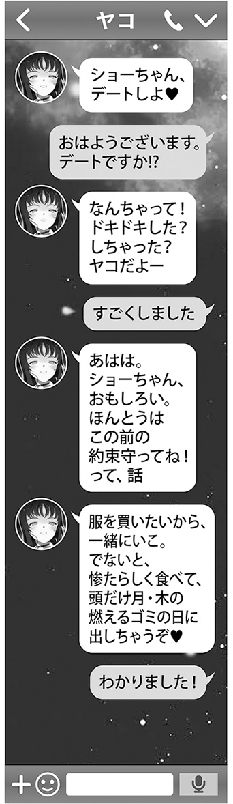
「元気よく『わかりました』言うてええんか、お前」
「......どうしよう。女の子の服のこととか、ボク、全然わからないです。このままだと買い物に失敗して殺されます」
すごく切迫した危機感を覚えました。女の子の服のこととか、漫画かラノベのものしかわからないです。
「どうしまショウ!? パティ、こういうのもなんデスけど、流行とかわからないデスし、ヤコに勝つこともできマセン!?」
「そもそも、あのエキノコックス持ち、気まぐれにもほどがあるから、いつ殺そうとするかわからんしなぁ」
「落ち着くがいい。主には我がいる。天則司りし我がな」
「お前もお前でなぁ......」「ブルシット......」
アシャさんはボクのパソコンを立ち上げると、やけに慣れた様子で検索し始めました。
多分、大人向けらしい、上品なブランド服のページが表示されます。
「ふふ。どうだ？ 気品と愛らしさ、その双方を備えたブランドだ。天則司りし我にはわかる。これならば、あの狐にも似合うだろう。しかも、電車で行ける距離に店舗もある」
「確かに......。あ、でも、アシャさん。それ、値段がものすごいんですけど......。ブラウスひとつでボクの一ヵ月の食費超えちゃってるのはちょっと......。おごったりするつもりはなくても、高過ぎて怒られちゃったりすると......」
「......なるほど。予算のことまでは考えていなかった。ならば、別の方策を講じようか」
アシャさんがページを閉じようとしました。
「ん？ マウスの調子が悪いか？ む？ 何も触ってないのに、カート画面に......」
「アシャさん!? 確定しちゃダメ!? すごく自然に着払いで確定しちゃダメです!?」
ボクは慌てて、アシャさんに飛びついてウインドウを閉じました。
もうちょっとでボクの一ヵ月の食費の三倍ぐらいの服が着払いで届いちゃうところだった。
「......す、すまない。今のは......」
「呪いだってわかってます。大丈夫です」
「だが......我はまた」
「ここでええんちゃう？」
ベルタさんがタブレットを見せてくれました。
「駅前のショッピングモール？」
「駅から歩いて行ける距離やろ。デートみたいなもんやし、手頃な服もあるし。買い物なんてどうせ、あいつ、ついでやろ。コン助が人間生活楽しみおって」
タブレットを操作する。
「ついでに、ここにある手頃なブランドで、こういう着こなしとか提示してみたらどうや？」
「......すごい慣れてマスネ。腹立つ......」
サラダを食べ終えたパティさんは、ボクのタンスの角に貼ってる緩衝材をおもむろに剝がしました。
「アホ!? 何するねん、パト！」
止めようとして、ベルタさんはそのまま足の小指をぶつけます。
「痛っ!? うぅぅ......！ パトォ......！ やっぱりお前からしばくしかないようやなぁ......」
「ファックオフ!! やってやりマスよ！ あと、この前言ってたチーズケーキのお店、パティにも教えてくだサイ！」
「むしろ、おいしい焼肉かモツ鍋教えて爆発させたるわ！」
「主よ。そろそろ登校の時間だ」
「あ、そうですね。ベルタさん、パティさん。ボクたち、先に学校に行っておくんで、喧嘩が終わったら、魔法とかコンパウンドの何かとかで急いで登校してください。食器は流しに置いて、水かけておいてください。帰ってから洗います。あと、わかってると思うんですけど、ご近所に被害は出さないでくださいね」
「わかった」「ウェルウェル。デスけど、いくらなんでも馴染み過ぎじゃないデスか!?」
「確かに......」
苦笑してしまう。
命を狙われることは不安だし、怖いけど、でも......。
アシャさんの横顔を見ます。
アシャさんがいつも一緒にいてくれるし、ベルタさんやパティさんともなんとかやっていけそうで。
しょうもない理由で狙われてるけど、でも、ボクはこの生活をなんとなく楽しいと感じていました。
「いってきます！」「いざ行こう。主よ」
ボクとアシャさんは並んで家を出ます。
◆ ◆ ◆
「そうだ。主よ。夜子との買い物だが、我も......」
「アシャさん、待って！」
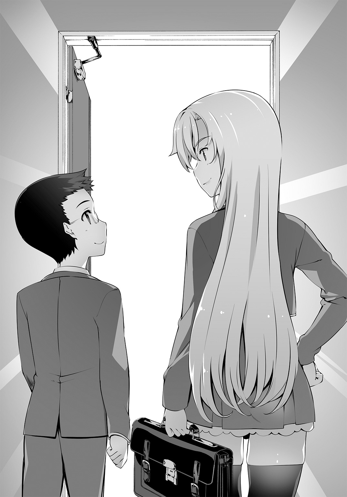
ボクは目を見張りました。
ドアの向こうに血のように赤い空が広がっていました。
大地は一面の荒野で、草の一つも生えていません。
部屋から一歩踏み出したボクの目の前にあるのはあからさまな異空間。
振り返ればドアは消えてしまっています。
アシャさんはボクをかばって立つと、六枚の翼を広げて、その手に光り輝く剣《天則司りしワヒシュタ》を出現させます。
「これって、あの時の異空間みたいな感じですよね？ アシャさんがやったんですか？」
「否。我ではない」
「......!?」
絶句しました。
アシャさんが舞い散らせた黄金の羽根の向こう、荒野の果てを埋め尽くすものがいた。
機械の塊......としか表現ができない。
それも獣のような、人のような、いびつな形をもった巨大な機械の化物の群れ。
ひとつひとつが少なくとも数メートル、大きなものは十数メートル以上の巨体を持つ。
蜥蜴や狼、骸骨のようなもの、もはや何の獣かもわからないものも多い。ただ、身体は明らかに金属でできている。
数百体を超える機械の獣。
そして、それらに対峙するように立つ人がいました。
剝き出しの岩の地面を踏みしめて立つのは、ミディアムショートの髪の女の子。
領武高校の制服の上にエプロンを巻いた、ポカポカとした暖かな印象を与えてくれる背中。
双津星鈴金――スズ姉さん。
寄り添うのは、かわいらしいツーサイドアップの髪と、幼い顔つきが、春の日差しの中、花畑にいることが似合う女の子。
双津星銀華――ギンちゃん。
でも、ギンちゃんのほうは見慣れない服装でした。
いつもの愛らしい服装とは違う、白と赤の和装、一言で言えば巫女装束。
荒野を風が吹き抜け、スズ姉さんのエプロンが翻って、ギンちゃんの赤いリボンと巫女装束の上にまとった千早が揺れます。
「スズお姉ちゃん」「ええ」
二人は赤い荒野を埋め尽くす、何百もの機械の獣たちに向かって、迷うことなく足を踏み出す。
「わたしたちが」「この世界を護りますぅ」
そんな光景を、ボクは吹き荒れる砂塵の向こうに見ました。
「......え？ これも呪い!? 世界の命運をかけて機械生命体みたいな侵略者と戦う呪い!?」
思わずアシャさんに尋ねてしまいます。
「これ、しょうもなくないですよね!? 全然しょうもなくないですよね!?」
「あ、主よ。なんなのだ、あれは？」
「訊き返されても!?」
天則司りし神様、すごく驚いていました。
あ と が き
どうも、お久しぶりだったり、初めましてだったり。八薙玉造です。
新作『ボクも世界も死にたくないのに すまない。我のうっかりで、汝が...』お届けします。
簡単にお話を紹介しますと、何の変哲もない高校生、菊月晶くんを魔女とサイボーグが殺しにやってきます。二人はとてつもなくしょうもないわりに世界の命運を左右する呪いを受けており、晶くんを殺すとそれが解けるのです。一方、晶くんを護ろうと神が降臨しますが、こちらはこちらでしょうもない理由（呪い）で役に立たない。晶くんの運命やいかに!? というお話です。ジャンルはラブコメ......？
世界一ムダにしょうもない理由で規模が大きいラブコメを目指しておりますが、果たして!?
以下、少しネタバレになります。
このお話に出てくるしょうもない呪い。《タンスの角に小指をぶつける》とか、《やけにお腹がすく》とか、《いざという時にうっかりしがち》とか、実際、非常にしょうもないのですが、執筆中、やけにそういう目に遭いました。つまりは、小指をぶつけて悶絶したり、出先で腹ペコになったり、色々うっかり忘れものしたりとかです。
あまりにキャラを不憫な目に遭わせているので、僕自身が呪われたんじゃないかと戦々恐々しております。というか、これまでも多くのキャラを色々ひどい目（シリアスな方向にも）に遭わせているので、いずれもっと何かあるんじゃないかと......人を呪わば穴ふたつ！ くそ！ 仕事上のミスも呪いのせいに違いない！ すいません！
......さておき。今回も出版にあたって多くの方のお世話になりました。
イラストを担当していただきました橘由宇さん。注文の多いキャラデザに、変なシチュエーションのイラストを快く引き受けていただき、ありがとうございました！ 非常にらしい感じに仕上げてもらい、嬉しいです。今後ともよろしくお願いいたします。
担当の日比生さん。暴投みたいな球をピッチャーライナーで打ち返すようなネタ出し、毎度、ありがとうございます。おかげで、よりおもしろいお話に仕上げることができました。
そのほか、出版に携わっていただいた皆様、手にしていただいた読者の皆様。本当にありがとうございます。
それでは、近々、またお会いできることを祈りつつ。失礼します。
これまでで一番「しょうもない」って、あとがきに書いた 八薙玉造
著者紹介
八薙玉造 やなぎ たまぞう
１９７９年大阪生まれ。大阪芸術大学文芸学科卒業。今年はおもしろい映画が多くてホクホク。映画の中では、ことあるごとに滅びそうになる世界を、ヒーローとかスーツの紳士が救っているので、こんなしょうもない理由で滅びそうな世界があってもよいのではないでしょうか？ 滅んだら荒野でヒャッハーな世界になりますＶ８。
illustration
橘由宇 たちばな ゆう
東京都在住のイラスト漫画描き。
最近日本茶とスイーツをだす珍しい喫茶店で食事したのですが美味しかったのでまた行きたいところです。
ダッシュエックス文庫DIGITAL
ボクも世界も死にたくないのに
すまない。我のうっかりで、汝が...
著者 八薙玉造
© TAMAZO YANAGI 2015
２０１５年12月31日発行
この電子書籍は、ダッシュエックス文庫「ボクも世界も死にたくないのに すまない。我のうっかりで、汝が...」
２０１５年11月30日発行の第１刷を底本としています。
発行者 鈴木晴彦
発行所 株式会社 集英社
〒１０１－８０５０
東京都千代田区一ツ橋２丁目５番10号
０３－３２３０－６０８０（読者係）
制作所 株式会社ＩＣＥ
本作品の全部また一部を無断で複製、転載、改竄、インターネット上に掲載すること、および有償無償に関わらず、本データを第三者に譲渡することを禁じます。なお個人利用の目的であっても、コピーガードを解除しての複製は、法律で禁じられています。